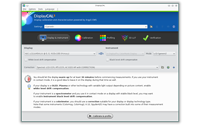

Table des matières
- À propos de DisplayCAL
- Clause de responsabilité
- Téléchargement
- Guide de démarrage rapide
- Exigences du système et autres prérequis
- Installation
- Concepts de base de l’étalonnage et de la caractérisation d’un écran
- Note concernant les colorimètres, les écrans et DisplayCAL
- Utilisation
- Utilisation générale
- Paramètres
- Paramètres prédéfinis (préréglages)
- Choisir l’écran à étalonner et l’appareil de mesure
- Paramètres d’étalonnage
- Paramètres de caractérisation
- Éditeur de mire de test
- Étalonnage – Caractérisation
- Créer des LUT 3D
- Vérification et rapport de mesures
- Fonctionnalité spéciale
- Commandes du menu
- Écriture de scripts
- Emplacement des données de l’utilisateur et du fichier de configuration
- Problèmes connus et solutions
- Obtenir de l’aide (EN)
- Signaler un bogue (EN)
- Discussion (EN)
- Remerciements
- Historiques des versions – Journaux des modifications
- Définitions
À propos de DisplayCAL
DisplayCAL est une interface graphique développée par Florian Höch pour les outils d’étalonnage et de caractérisation des systèmes d’affichage d’Argyll CMS, un système de gestion de la couleur à sources ouvertes développé par Graeme Gill.
Il permet d’étalonner et de caractériser vos périphériques d’affichage en utilisant l’une des nombreuses sondes de mesure prises en compte. Il prend en charge les configurations multi-écrans et de nombreux paramètres définissables par l’utilisateur comme le point blanc, la luminance, la courbe de réponse de tonalité ainsi que la possibilité de créer des profils ICC à matrice ou à table de correspondance, avec transposition optionnelle du gamut, ainsi que certains formats propriétaires de LUT 3D. On trouvera, parmi d’autres fonctionnalités :
- Prise en charge de la correction du colorimètre pour différents écrans à l’aide de matrices de correction ou de fichiers d’échantillon spectral d’étalonnage (« colorimeter spectral sample set » = csss) (ces derniers uniquement pour certains colorimètres spécifiques, c’est-à-dire l’i1 Display Pro, le ColorMunki Display et les Spyder 4/5) ;
- Vérification du profil et rapport de mesure : vérification de la qualité des profils et des LUT 3D par des mesures. Prise en charge également de fichiers CGATS personnalisés (par ex. FOGRA, GRACoL/IDEAlliance, SWOP) et utilisation de profils de référence pour obtenir des valeurs de test ;
- Éditeur de mire de test : crée des mires avec un nombre quelconque d’échantillons de couleur, copié-collé facile depuis des fichiers CGATS, CSV (uniquement délimité par des tabulations) et applications de feuilles de calculs ;
- Création de profils ICC synthétiques (à matrice) avec les primaires, le point noir et le point blanc ainsi que la réponse tonale personnalisés.
Captures d’écran

Paramètres d’écran et de sonde de mesure

Paramètres d’étalonnage

Paramètres de caractérisation

Paramètres de LUT 3D

Paramètres de vérification

Éditeur de mire de test

Réglages de l’écran

Informations du profil

Courbes d’étalonnage

KDE4

Mac OS X

Windows 7
Clause de responsabilité
Ce programme est un logiciel libre ; vous pouvez le redistribuer et/ou le modifier librement selon les termes de la Licence publique générale GNU telle que publiée par la Free Software Foundation ; soit à la version 3 de la Licence, soit (à votre choix) toute version ultérieure.
Ce programme est distribué dans l’espoir qu’il sera utile, mais SANS AUCUNE GARANTIE ; sans même la garantie implicite d’une QUELCONQUE VALEUR MARCHANDE ou de l’ADÉQUATION À UN BESOIN PARTICULIER. Voir la Licence Publique Générale GNU pour davantage d’informations.
DisplayCAL est écrit en Python et utilise les paquets tiers NumPy, demjson (bibliothèque JSON[6]) et wxPython (kit de développement d’interface graphique (GUI)[4]). Il fait aussi une utilisation intensive de certains des utilitaires d’Argyll CMS. Le système de construction permettant d’obtenir des exécutables autonomes utilise en outre setuptools et py2app sous Mac OS X ou py2exe sous Windows. Tous ces logiciels sont © par leurs auteurs respectifs.
Obtenir DisplayCAL en version autonome
-
Pour Linux
Des paquets natifs pour plusieurs distributions sont disponibles via openSUSE Build Service :
- Arch Linux x86 | x86_64
- CentOS 6 x86 | x86_64
- CentOS 7 x86_64
- Debian 7 (Wheezy) x86 | x86_64
- Debian 8 (Jessie) x86 | x86_64
- Fedora 24 x86 | x86_64
- Fedora 25 x86 | x86_64
- openSUSE 13.1 x86 | x86_64
- openSUSE 13.2 x86 | x86_64
- openSUSE Leap 42.1 x86_64
- openSUSE Leap 42.2 x86_64
- openSUSE Factory x86 | x86_64
- openSUSE Tumbleweed x86 | x86_64
- RedHat RHEL 6 x86 | x86_64
- RedHat RHEL 7 x86_64
- SLE 11 SP2 x86 | x86_64
- SLE 11 SP3 x86 | x86_64
- SLE 11 SP4 x86 | x86_64
- SLE 12 x86_64
- SLE 12 SP1 x86_64
- SLE 12 SP2 x86_64
- Ubuntu 16.04 (Xenial) x86 | x86_64
- Ubuntu 16.10 (Yakkety) x86 | x86_64
Les paquets réalisés pour des distributions plus anciennes peuvent fonctionner sur les plus récentes tant qu’il n’y a rien eu de substantiel de modifié (c’est-à-dire la version de Python). Il existe aussi certaines distributions qui sont basées sur celles de la liste ci-dessus (par exemple, Linux Mint qui est basée sur Ubuntu). Ceci signifie que les paquets de cette distribution de base devraient aussi fonctionner avec ses dérivées, vous devez simplement connaître la version sur laquelle la dérivée est basée et faire votre téléchargement en conséquence.
-
Pour Mac OS X (10.5 ou plus récent)
Note that due to Mac OS X App Translocation (since 10.12 Sierra), you may need to remove the “quarantine” flag from the non-main standalone application bundles after you have copied them to your computer before you can successfully run them. E.g. if you copied them to /Applications/DisplayCAL-3.2.6.0/, open Terminal and run the following command:
xattr -dr com.apple.quarantine /Applications/DisplayCAL-3.2.6.0/*.app -
Pour Windows (XP ou plus récent)
-
Code source
Il vous faut une installation Python fonctionnelle et tous ses prérequis.
Vous pouvez aussi, si cela ne vous pose pas de problème d’utiliser le code de développement, parcourir le dépôt SVN[8] de la dernière version de développement (ou effectuer une récupération complète — « checkout» — à l’aide de
svn checkout svn://svn.code.sf.net/p/dispcalgui/code/trunk dispcalgui). Mais soyez attentif au fait que le code de développement peut contenir des bogues ou même ne pas fonctionner du toute, ou uniquement sur certaines plateformes). Utilisez-le à vos propres risques.
Veuillez poursuivre avec le Guide de démarrage rapide.
Obtenir DisplayCAL via Zero Install
-
Rapide introduction à Zero Install
(Note : vous n’avez habituellement pas à installer séparément Zero Install, cela est géré automatiquement lors des téléchargements de DisplayCAL dont vous trouverez les liens ci-dessous. Ce paragraphe n’est là que pour information).
Zero Install st un système d’installation décentralisé et multi-plate-formes. Les avantages que vous tirez de l’utilisation de Zero Install sont :
- Être toujours à jour. Zero Install maintient automatiquement à jour l’ensemble du logiciel ;
- Basculer facilement entre différentes versions du logiciel depuis Zero Install si vous le désirez ;
- Pas de nécessité de droits d’administration pour ajouter ou mettre à jour un logiciel (*).
* Note : l’installation et la mise à jour de Zero Install lui-même et de ses dépendances logicielles au travers de mécanismes du système d’exploitation peut demander des privilèges d’administration.
-
Pour Linux
Des paquets natifs de plusieurs distributions sont disponibles via openSUSE Build Service:
- Arch Linux (veuillez consulter la note ci-dessous)
- CentOS 6
- CentOS 7
- Debian 7 (Wheezy)
- Debian 8 (Jessie)
- Fedora 24
- Fedora 25
- openSUSE 13.1
- openSUSE 13.2
- openSUSE Leap 42.1
- openSUSE Leap 42.2
- openSUSE Factory
- openSUSE Tumbleweed
- RedHat RHEL 6
- RedHat RHEL 7
- Ubuntu 16.04 (Xenial)
- Ubuntu 16.10 (Yakkety)
Veuillez noter :
- Le numéro de version du paquet ne reflète pas nécessairement la version de DisplayCAL.
Les paquets réalisés pour des distributions plus anciennes peuvent fonctionner sur les plus récentes tant qu’il n’y a rien eu de substantiel de modifié (c’est-à-dire la version de Python). Il existe aussi certaines distributions qui sont basées sur celles de la liste ci-dessus (par exemple, Linux Mint qui est basée sur Ubuntu). Ceci signifie que les paquets de cette distribution de base devraient aussi fonctionner avec ses dérivées, vous devez simplement connaître la version sur laquelle la dérivée est basée et faire votre téléchargement en conséquence. Dans tous les autres cas, veuillez essayer les instructions ci-dessous ou l’une des installations autonomes.
Autre méthode d’installation
Si votre distributions fait pas partie de celles indiquées ci-dessus, veuillez suivre ces instructions :
- Installez le paquet 0install ou zeroinstall-injector de votre distribution. Au cas où il ne serait pas disponible, il existe des binaires génériques précompilés. Téléchargez l’archive appropriée correspondant à votre système, décompressez-la. Depuis un terminal,
cdvers le dossier extrait, et lancezsudo ./install.sh localpour effectuer l’installation vers /usr/local, ou./install.sh homepour effectuer l’installation dans votre répertoire personnel (il vous faudra peut-être ajouter ~/bin à votre variable PATH dans ce cas). Vous aurez besoin que libcurl soit installée (la plupart des systèmes l’ont par défaut). - Choisissez l’entrée 0install à partir du menu des applications (les anciennes versions de Zero Install ont une entrée « Ajouter un nouveau programme » — Add New Program — à la place).
- Glissez le lien du feed Zero Install de DisplayCAL vers la fenêtre de Zero Install.
Note concernant les outils autonomes de DisplayCAL sous Linux (créateur de LUT 3D, afficheur de courbe, informations du profil, créateur de profil synthétique, éditeur de mire de test, convertisseur de VRML vers X3D) : si vous utilisez l’autre méthode d’installation, il ne sera créé d’icône d’application que pour DisplayCAL elle-même. Ceci est une limitation actuelle de Zero Install sous Linux. Vous pouvez installer vous-même les entrées d’icônes pour les outils autonomes à l’aide des commandes suivantes lancées depuis un terminal :
0launch --command=install-standalone-tools-icons \
http://displaycal.net/0install/DisplayCAL.xmlEt vous pourrez les désinstaller de nouveau par :
0launch --command=uninstall-standalone-tools-icons \
http://displaycal.net/0install/DisplayCAL.xml -
Pour Mac OS X (10.5 ou plus récent)
Téléchargez l’image disque du lanceur Zero Install de DisplayCAL et lancez l’une quelconque des applications incluses.
-
Pour Windows (XP ou plus récent)
Téléchargez le configurateur Zero Install de DisplayCAL : Installation par l’Administrateur | Installation par l’utilisateur.
-
Mise à jour manuelle ou basculement entre les versions du logiciel
Les mises à jour sont normalement appliquées automatiquement. Si vous désirez effectuer une mise à jour manuelle ou basculer entre les versions du logiciel, veuillez suivre les instructions ci-dessous.
-
Linux
Choisissez l’entrée 0install depuis le menu de l’application (les anciennes versions de Zero Install ont une entrée « Gérer les programmes — « Manage Programs » — en remplacement). Dans la fenêtre qui s’ouvre, faites un clic-droit sur l’icône de DisplayCAL et sélectionner « Choisir les versions » (avec les anciennes versions de Zero Install, vous devez cliquer la petite icône « Mettre à jour ou changer de version » qui se trouve sous le bouton « Run »). Vous pouvez alors cliquer le bouton « Tout rafraîchir » pour mettre à jour, ou cliquer le petit bouton sur la droite de l’entrée et sélectionner « Afficher les versions ».
Pour sélectionner une version spécifique du logiciel, cliquez sur l’entrée de la version et définissez le rang à « préféré » (« prefered ») (notez que cela interdira le téléchargement des mises à jour du logiciel sélectionné jusqu’à ce que vous changiez vous-même la version ou que vous réinitialisiez le rang).
-
Mac OS X
Lancez 0install Launcher. Dans la fenêtre qui s’ouvre, cliquez sur le bouton « Tout rafraîchir » (« Refresh all ») pour effectuer la mise à jour, ou cliquez le petit bouton situé à la droite d’une entrée et sélectionnez « Afficher les versions » (« Show versions »).
Pour sélectionner une version spécifique du logiciel, cliquez sur l’entrée de la version et définissez le rang à « préféré » (« prefered ») (notez que cela interdira le téléchargement des mises à jour du logiciel sélectionné jusqu’à ce que vous changiez vous-même la version ou que vous réinitialisiez le rang).
-
Windows
Choisir l’entrée Zero Install depuis la page de démarrage sous Windows 8, ou le sous-répertoire respectif du répertoire des programmes dans le menu démarrer sous Windows 10, Windows 7 et plus récents. Passez ensuite à l’onglet « Mes applications » (« My Applications ») sur la fenêtre qui s’ouvre. Cliquez la petite flèche « vers le bas » à l’intérieur du bouton « Démarrer » situé à la droite de l’entrée de DisplayCAL et choisissez « Mettre à jour » (« Update ») ou « Sélectionner une version » (« Select version »).
Pour sélectionner une version spécifique du logiciel, cliquez sur l’entrée de la version et définissez le rang à « préféré » (« prefered ») (notez que cela interdira le téléchargement des mises à jour du logiciel sélectionné jusqu’à ce que vous changiez vous-même la version ou que vous réinitialisiez le rang).
-
Veuillez poursuivre avec le démarrage rapide.
Guide de démarrage rapide
Ce court guide est destiné à vous permettre de vous lancer rapidement, mais si vous avez des problèmes, référez-vous aux sections complètes des prérequis et d’installation.
-
Lancez DisplayCAL. S’il ne peut pas déterminer le chemin vers les binaires d’Argyll CMS, il va, lors du premier lancement, vous demander d’en télécharger automatiquement la dernière version ou d’en sélectionner vous-même l’emplacement.
-
Windows uniquement : si votre sonde de mesure n’est pas un ColorMunki Display, i1 Display Pro, Huey, ColorHug, specbos, spectraval ou K-10, vous devrez installer un pilote spécifique à Argyll avant de poursuivre. Sélectionnez « Installer les pilotes des sondes de mesure d’Argyll CMS… » depuis le menu « Outils ». Voir aussi « Installation du pilote de sonde de mesure sous Windows ».
Mac OS X uniquement : si vous désirez utiliser le colorimètre HCFR, suivez les instructions de la section « Colorimètre HCFR » dans « Installing Argyll CMS on Mac OS X » [en] (« Installer Argyll CMS sous Mac OS X ») dans la documentation d’Argyll CMS avant de poursuivre.
Connectez votre sonde de mesure à votre ordinateur.
-
Cliquez la petite icône avec les flèches enroulées située entre les contrôles « Périphérique d’affichage » et « Sonde de mesure » afin de détecter les périphériques d’affichage et les sondes. Les sondes détectées devraient s’afficher dans la liste déroulante « Sondes de mesure ».
Si votre sonde de mesure est une Spyder 2, une fenêtre de dialogue apparaîtra qui vous permet d’activer l’appareil. Ceci est nécessaire pour pouvoir utiliser la Spyder 2 avec Argyll CMS et DisplayCAL.
Si votre sonde de mesure est une i1 Display 2, i1 Display Pro, ColorMunki Display, DTP94, Spyder 2/3/4/5, une fenêtre apparaîtra depuis la quelle vous pourrez importer les corrections génériques du colorimètre à partir du logiciel du fournisseur, ce qui peut améliorer la précision des mesures sur le type de périphérique d’affichage que vous utilisez. Après les avoir importées, elles seront disponibles sous la fenêtre déroulante « Correction », où vous pourrez choisir l’une des entrées qui convient au type de périphérique d’affichage que vous avez, ou, si rien ne correspond, laissez-la sur « Automatique ». Note : l’importation des corrections depuis le logiciel des Spyder 4/5 active des options de mesure supplémentaires pour cette sonde.
-
Cliquez « Étalonner et caractériser. C’est tout !
Vous trouverez sur le Wiki des guides et des tutoriels. Et vous pouvez vous référer à la documentation pour des informations d’utilisation avancées (optionnel).
Linux uniquement : si vous ne pouvez pas accéder à votre sonde de mesure, choisissez « Installer les fichiers de configuration des sondes de mesure d’Argyll CMS…. » depuis le menu « Outils » (si ce menu est grisé, alors la version d’Argyll CMS que vous utilisez actuellement a probablement été installée depuis le dépôt d’une distribution et la configuration devrait déjà avoir été faite correctement pour l’accès à la sonde de mesure).
Si vous ne pouvez pas accéder à votre sonde de mesure, essayez d’abord de la débrancher et de la reconnecter, ou redémarrez votre ordinateur. Si ceci ne résout pas le problème, lisez Installing Argyll CMS on Linux: Setting up instrument access [en] (« Installer Argyll CMS sous Linux : Configurer l’accès à la sonde de mesure » dans la documentation d’Argyll CMS.
Exigences du système et autres prérequis
Exigences générales du système
- Une version récente du système d’exploitation Linux, Mac OS X (10.5 ou plus récent) ou Windows (XP/Server 2003 ou plus récent) ;
- Une carte graphique avec prise en charge d’au moins 24 bits par pixel (vraies couleurs) et un bureau configuré pour utiliser cette profondeur des couleurs.
Argyll CMS
Pour utiliser DisplayCAL, vous devez télécharger et installer Argyll CMS (1.0 ou plus récent).
Sondes de mesure prises en charge
Vous avez besoin d’une des sondes prises en charge. Toutes les sondes de mesure prises en charge par Argyll CMS le sont aussi par DisplayCAL. Pour les lectures d’écran, ce sont actuellement :
Colorimètres
- CalMAN X2 (traité comme i1 Display 2)
- Datacolor/ColorVision Spyder 2
- Datacolor Spyder 3 (depuis Argyll CMS 1.1.0)
- Datacolor Spyder 4 (depuis Argyll CMS 1.3.6)
- Datacolor Spyder 5 (depuis Argyll CMS 1.7.0)
- HP Advanced Profiling Solution (traité comme i1 Display 2)
- HP DreamColor (traité comme i1 Display 2)
- Hughski ColorHug (pris en charge sous Linux depuis Argyll CMS 1.3.6, pris en charge sous Windows avec le nouveau micrologiciel de ColorHug depuis Argyll CMS 1.5.0, pris en charge de manière entièrement fonctionnelle sous Mac OS X depuis Argyll CMS 1.6.2)
- Hughski ColorHug2 (depuis Argyll CMS 1.7.0)
- Image Engineering EX1 (depuis Argyll CMS 1.8.0 Beta)
- Klein K10-A (depuis Argyll CMS 1.7.0)
- Lacie Blue Eye (traité comme i1 Display 2)
- Sencore ColorPro III, IV & V (traité comme i1 Display 1)
- Sequel Imaging MonacoOPTIX/Chroma 4 (traité comme i1 Display 1)
- X-Rite Chroma 5 (traité comme i1 Display 1)
- X-Rite ColorMunki Create (traité comme i1 Display 2)
- X-Rite ColorMunki Smile (depuis Argyll CMS 1.5.0)
- X-Rite DTP92
- X-Rite DTP94
- X-Rite/GretagMacbeth/Pantone Huey
- X-Rite/GretagMacbeth i1 Display 1
- X-Rite/GretagMacbeth i1 Display 2/LT
- X-Rite i1 Display Pro, ColorMunki Display (depuis Argyll CMS 1.3.4)
Spectromètres
- JETI specbos 1211/1201 (depuis Argyll CMS 1.6.0)
- JETI spectraval 1511/1501 (depuis Argyll CMS 1.9.0)
- X-Rite ColorMunki Design, ColorMunki Photo (depuis Argyll CMS 1.1.0)
- X-Rite/GretagMacbeth i1 Monitor (depuis Argyll CMS 1.0.3)
- X-Rite/GretagMacbeth i1 Pro/EFI ES-1000
- X-Rite i1 Pro 2 (depuis Argyll CMS 1.5.0)
- X-Rite/GretagMacbeth Spectrolino
Si vous avez décidé d’acheter une sonde de mesure de la couleur parce qu’Argyll CMS la prend en charge, veuillez faire savoir au vendeur et au constructeur que « vous l’avez achetée parce qu’Argyll CMS la prend en charge » – merci.
Remarquez que l’i1 Display Pro et l’i1 Pro sont des sondes de mesure très différentes en dépit de la similarité de leur nom.
Il y a actuellement (2014-05-20) cinq sondes de mesure (ou plutôt, paquets) sous la marque ColorMunki, deux d’entre elles sont des spectromètres, et trois sont des colorimètres (toutes ne sont pas des offres récentes, mais vous devriez pouvoir les trouver d’occasion dans le cas où ils ne seraient plus commercialisés neufs) :
- Les spectromètres ColorMunki Design et ColorMunki Photo ne diffèrent que par les fonctionnalités du logiciel fourni par le fabricant. Il n’y a pas de différence entre ces sondes de mesure lorsqu’elles sont utilisées avec Argyll CMS et DisplayCAL ;
- Le colorimètre ColorMunki Display est une version plus économique du colorimètre i1 Display Pro. Le logiciel fourni est plus simple et les temps de mesure plus longs comparés à ceux de l’i1 Display Pro. À part cela, ils semblent virtuellement identiques ;
- Les colorimètres ColorMunki Create et ColorMunki Smile sont constitués du même matériel que l’i1 Display 2 (le ColorMunki Smile n’a maintenant plus de correction intégrée pour les CRT mais, en remplacement, pour le rétroéclairage blanc à LED des LCD).
Exigences supplémentaires pour l’étalonnage et la caractérisation sans intervention
Lors de l’utilisation d’un spectromètre pour lequel la fonctionnalité de fonctionnement sans intervention est prise en charge (voir ci-dessous), on peut éviter d’avoir à enlever l’appareil de l’écran pour effectuer de nouveau son auto-étalonnage après l’étalonnage de l’écran et avant de lancer les mesures pour la caractérisation si, dans le menu « Options », on a coché l’élément de menu « Permettre de sauter l’auto-étalonnage du spectromètre » (les mesures des colorimètres se font toujours sans intervention parce que, généralement, ils ne demandent pas d’étalonnage de leur capteur en étant hors écran, à l’exception de l’i1 Display 1).
L’étalonnage et la caractérisation sans intervention sont actuellement pris en charge pour les spectromètres suivants ainsi que pour la plupart des colorimètres :
- X-Rite ColorMunki ;
- X-Rite/GretagMacbeth i1 Monitor & Pro ;
- X-Rite/GretagMacbeth Spectrolino ;
- X-Rite i1 Pro 2.
Soyez attentif au fait que vous pourrez quand même être obligé d’effectuer un étalonnage de la sonde de mesure si elle l’exige. Veuillez aussi consulter les problèmes possibles.
Exigences supplémentaires pour utiliser le code source
Vous pouvez sauter cette section si vous avez téléchargé un paquet, un installateur, une archive zip ou une image disque de DisplayCAL pour votre système d’exploitation et que vous ne désirez pas le faire tourner à partir des sources.
Sur toutes les plate-formes :
- Python >= v2.5 <= v2.7.x (la version 2.7.x est recommandée. Utilisateurs de Mac OS X : si vous désirez compiler le module C d’extension de DisplayCAL, il est conseillé d’installer d’abord XCode et ensuite la version officielle de Python de python.org) ;
- NumPy ;
- Kit de développement de GUI[4] wxPython.
Windows :
Exigences supplémentaires pour compiler le module d’extension en C
Vous pouvez normalement sauter cette section, car le code source contient des versions pré-compilées du module d’extension en C qu’utilise DisplayCAL.
Linux :
- GCC et les en-têtes de développement pour Python + X11 + Xrandr + Xinerama + Xxf86vm s’ils ne sont pas déjà installés, ils devraient être disponibles depuis le système de paquets de votre distribution.
Mac OS X :
- XCode ;
- py2app si vous désirez construire un exécutable autonome. Sur une version de Mac OS X antérieure à 10.5, installez d’abord setuptools :
sudo python util/ez_setup.py setuptools
Windows :
- Un compilateur C (par ex. MS Visual C++ Express ou MinGW. Si vous utilisez la version officielle Python 2.6 ou plus récente de python.org, je recommande d’utiliser Visual C++ Express, car il fonctionne directement) ;
- py2exe si vous désirez construire un exécutable autonome.
Fonctionnement direct depuis les sources
Une fois satisfaites toutes les exigences supplémentaires pour utiliser le code source, vous pouvez simplement lancer depuis un terminal l’un quelconque des fichiers .pyw inclus, par ex. python2 DisplayCAL.pyw, ou installer le logiciel afin d’y avoir accès depuis le menu des applications de votre gestionnaire de bureau avec python2 setup.py install. Lancez python2 setup.py --help pour voir les options disponibles.
Instructions d en une seule fois à partir du code source provenant de SVN :
Lancez python2 setup.py pour créer le fichier de version afin de ne pas avoir de fenêtre de mise à jour au démarrage.
Si le module d’extension pré-compilé qui fait partie des sources ne fonctionne pas pour vous, (dans ce cas, vous remarquerez que les dimensions de la fenêtre mobile ne correspondent pas exactement aux dimensions de la fenêtre sans marges générée par Argyll CMS lors des mesures de l’écran) ou que vous désirez absolument le reconstruire, lancez python2 setup.py build_ext -i pour le reconstruire en partant de zéro (vous devez d’abord satisfaire aux exigences supplémentaires pour compiler le module d’extension en C).
Installation
Il est recommandé de tout d’abord supprimer toutes les versions précédentes à moins que vous n’ayez utilisé « Zero Install » pour l’obtenir.
Installation du pilote de sonde de mesure sous Windows
Vous n’avez besoin d’installer le pilote spécifique à Argyll que si votre sonde de mesure n’est pas un ColorMunki Display, i1 Display Pro, Huey, ColorHug, specbos, spectraval ou K-10.
Si vous utilisez Windows 8, 8.1, ou 10, vous devrez désactiver la vérification de signature du pilote avant de pouvoir l’installer. Si Secure Boot est activé dans la configuration de l’UEFI[12], vous devrez d’abord le désactiver. Référez-vous au manuel de votre carte-mère ou du micrologiciel (« firmware ») sur la manière de procéder. Il faut en général presser la touche Suppr lors du démarrage du système pour modifier la configuration du micrologiciel.
Méthode 1 : Désactiver temporairement le contrôle de signature
- Windows 8/8.1 : Allez à « Paramètres» (survolez le coin en bas et à droite de l’écran, cliquez ensuite l’icône en forme d’engrenage) et sélectionnez « Arrêter » (l’icône de marche/arrêt).
Windows 10 : Ouvrez le menu en survolant de la souris le coin en bas et à gauche de l’écran et en cliquant l’icône en forme de fenêtre) - Sélectionner « Arrêter » (l’icône de marche/arrêt)
- Maintenez la touche MAJUSCULE enfoncée et cliquez « Redémarrer ».
- Sélectionner « Dépannage » → « Options avancées » → « Paramètres » → « Redémarrer »
- Après le redémarrage, sélectionnez « Désactivez le contrôle obligatoire des signatures du pilotes » (numéro 7 de la liste ; il faut presser soit la touche 7 du pavé numérique, soit la touche de fonction F7)
Méthode 2 : désactivez de manière permanente la vérification de signature du pilote
- Ouvrez une invite de commandes d’administrateur. Recherchez « Invite de commande » dans le menu démarrer de Windows, faites un clic-droit et sélectionner « Lancer en tant qu’administrateur »
- Lancez la commande suivante :
bcdedit /set loadoptions DDISABLE_INTEGRITY_CHECKS - Lancez la commande suivante :
bcdedit /set TESTSIGNING ON - Redémarrez
Pour installer le pilote spécifique à Argyll et qui est nécessaire pour certains instruments de mesure, lancez DisplayCAL et sélectionnez « Installer les pilotes de sonde de mesure d’Argyll CMS… » depuis le menu « Outils ».
Pour passer des pilotes d’Argyll CMS à ceux du fabricant, lancez le gestionnaire de périphériques de Windows et recherchez la sonde de mesure dans la liste des périphériques. Elle peut se trouver sous l’une des entrées de niveau supérieur. Faites un clic-droit sur la sonde de mesure et sélectionnez « Mettre le pilote à jour… », choisissez ensuite « Rechercher un pilote logiciel sur mon ordinateur », « Laissez-moi choisir depuis une liste de pilotes sur mon ordinateur » et enfin sélectionnez dans la liste le pilote d’Argyll correspondant à votre sonde de mesure.
Paquet Linux (.deb/.rpm)
De nombreuses distributions permettent une installation facile des paquets par l’intermédiaire d’une application graphique de bureau, c’est-à-dire en faisant un double-clic sur l’icône du fichier du paquet. Veuillez consulter la documentation de votre distribution si vous n’êtes pas certain de la manière d’installer des paquets.
Si vous ne pouvez pas accéder à votre sonde de mesure, essayez d’abord de la débrancher et de la reconnecter, ou redémarrez votre ordinateur. Si ceci ne résout pas le problème, lisez Installing Argyll CMS on Linux: Setting up instrument access [en] (« Installer Argyll CMS sous Linux : configurer l’accès à la sonde de mesure ».
Mac OS X
Montez l’image disque et option-glisser son icône vers votre dossier « Applications ». Ouvrez ensuite le dossier « DisplayCAL » de votre dossier « Applications » et glissez l’icône de DisplayCAL sur le dock si vous désirez y accéder facilement.
Si vous désirez utiliser le colorimètre HCFR sous Mac OS X, suivez les instruction se trouvant sous « installing Argyll CMS on Mac OS X [en] » (« Installer Argyll CMS sous Mac OS X ») dans la documentation d’Argyll CMS.
Windows (Installateur)
Lancez l’installateur qui vous guidera dans les différentes étapes nécessaires à la configuration.
Si votre sonde de mesure n’est pas un ColorMunki Display, i1 Display Pro, Huey, ColorHug, specbos, spectraval ni K-10, vous devrez installer un pilote spécifique à Argyll. Voir « Installation d’un pilote de sonde de mesure sous Windows ».
Windows (archive ZIP)
Décompressez l’archive et lancez simplement DisplayCAL depuis le dossier qui a été créé.
Si votre sonde de mesure n’est pas un ColorMunki Display, i1 Display Pro, Huey, ColorHug, specbos, spectraval ni un K-10, vous devrez installer un pilote spécifique à Argyll. Voir « Installation d’un pilote de sonde de mesure sous Windows ».
Code source (toutes plateformes)
Voir la section des « Prérequis » pour un fonctionnement direct depuis les sources.
À partir de la version 0.2.5b de DisplayCAL, vous pouvez utiliser les commandes standard distutils/setuptools avec setup.py pour construire, installer et créer des paquets. sudo python setup.py install compilera les modules d’extension et effectuera une installation standard. Lancez python setup.py --help ou python setup.py --help-commands pour davantage d’informations. Quelques commandes et options supplémentaires ne faisant pas partie de distutils ni de setuptools (et qui n’apparaissent donc pas dans l’aide) sont aussi disponibles :
Commandes de configuration supplémentaires
0install- Crée/met à jour des « feeds » 0install et crée des paquets d’applications Mac OS X pour faire tourner ces feeds.
appdata- Crée/met à jour le fichier AppData.
bdist_appdmg(Mac OS X uniquement)- Crée un DMG à partir des paquets d’applications précédemment créés (par les commandes py2app ou bdist_standalone), ou si utilisé conjointement à la commande
0install. bdist_deb(Linux/basé sur Debian)- Crée un paquet Debian (.deb) pouvant être installé, un peu comme le fait la commande standard distutils bdist_rpm pour les paquets RPM. Prérequis :
vous devez d’abord installer alien et rpmdb, créer une base de données RPM virtuelle via
sudo rpmdb --initdb, éditer ensuite (ou créer initialement) le fichier setup.cfg (vous pouvez vous inspirer de misc/setup.ubuntu9.cfg comme exemple fonctionnel). Sous Ubuntu, exécuter utils/dist_ubuntu.sh va automatiquement utiliser le fichier setup.cfg correct. Si vous utilisez Ubuntu 11.04 ou toute autre distribution basée sur debian ayant Python 2.7 par défaut, vous devrez éditer /usr/lib/python2.7/distutils/command/bdist_rpm.py, et modifier la ligneinstall_cmd = ('%s install -O1 --root=$RPM_BUILD_ROOT 'eninstall_cmd = ('%s install --root=$RPM_BUILD_ROOT 'en supprimant l’indicateur-O1. Vous devrez aussi modifier /usr/lib/rpm/brp-compress afin qu’il n’ait aucune action (par ex. changez le contenu du fichier enexit 0, mais n’oubliez pas d’en créer une copie de sauvegarde auparavant) sinon, vous aurez des erreurs lors de la construction. bdist_pyi- Peut remplacer
bdist_standalone, et utilise PyInstaller plutôt que bbfreeze/py2app/py2exe. bdist_standalone- Crée une application autonome qui n’exige pas d’installation de Python. Utilise bbfreeze sous Linux, py2app sous Mac OS X et py2exe sous Windows. setup.py essaiera de télécharger et d’installer automatiquement ces paquets pour vous — s’ils ne sont pas déjà installés — en utilisant le commutateur --use-distutils. Note : sous Mac OS X, les anciennes versions de py2app (avant 0.4) ne peuvent pas accéder aux fichiers situés à l’intérieur des fichiers « œufs» (« eggs ») de python (qui, de base, sont des dossiers compressé en ZIP). Setuptools, qui est nécessaire pour py2app, sera normalement installé sous la forme « d’œuf », ce qui empêche les anciennes versions des py2app d’accéder à son contenu. Afin de corriger ceci, vous devrez supprimer tous les fichiers setuptools-<version>-py<python-version>.egg déjà installés du répertoire site-packages de votre installation de Python (on le trouve en général sous
/Library/Frameworks/Python.framework/Versions/Current/lib). Exécutez ensuitesudo python util/ez_setup.py -Z setuptoolsqui va installer setuptools « dépaqueté », permettant ainsi à py2app d’accéder à tous ses fichiers. Ceci n’est plus un problème avec py2app 0.4 ou plus récent. buildservice- Crée des fichiers de contrôle pour openSUSE Build Service (ceci est aussi effectué implicitement lors de l’appel à
sdist). finalize_msi(Windows uniquement)- Ajoute les icônes et un raccourci dans le menu démarrer pour l’installateur MSI précédemment créé par
bdist_msi. Le succès de la création de MSI nécessite une msilib patchée (information additionnelles). inno(Windows uniquement )- Crée les scripts Inno Setup qui peuvent être utilisés pour compiler les exécutables de configuration pour les applications autonomes générées par les commandes
py2exeoubdist_standalonepour 0install. purge- Supprime les répertoires ainsi que leur contenu
buildetDisplayCAL.egg-info. purge_dist- Supprime le répertoire
distainsi que son contenu. readme- Crée README.html en analysant misc/README.template.html et en remplaçant les variables de substitution comme la date et les numéros de version.
uninstall- Désinstalle le paquet. Vous pouvez indiquer les mêmes options que pour la commande
install.
Options de configuration supplémentaires
--cfg=<name>- Utiliser un fichier setup.cfg de remplacement, par ex. adapté à une distribution de Linux donnée. Le fichier setup.cfg d’origine est préservé et il sera restauré ensuite. Le fichier de remplacement doit exister sous misc/setup.<name>.cfg
-n,--dry-run- N’effectue aucune action. Utile en combinaison avec la commande uninstall afin de voir les fichiers qui seraient supprimés.
--skip-instrument-configuration-files- Passer outre l’installation des règles udev et des scripts hotplug.
--skip-postinstall- Passer outre la post-installation sous Linux (une entrée sera cependant créée dans le menu des applications de votre bureau, mais elle pourra n’être visible qu’après que vous vous soyez déconnecté et reconnecté ou après que vous ayez redémarré l’ordinateur) et sous Windows (il ne sera créé aucun raccourci dans le menu Démarrer).
--stability=stable | testing | developer | buggy | insecure- Définir la stabilité de l’implémentation qui est ajoutée/mise à jour par la commande
0install. --use-distutils- Forcer setup à utiliser distutils (par défaut) plutôt que setuptools pour la configuration. Ceci est utile en combinaison avec les commandes bdist*, parce que cela évite une dépendance artificielle sur setuptools. C’est en fait un commutateur, utilisez-le une fois et le choix sera mémorisé jusqu’à ce que vous utilisiez le commutateur
--use-setuptools(voir paragraphe suivant). --use-setuptools- Forcer setup à essayer d’utiliser setuptools plutôt que de distutils pour la configuration. Ceci est en fait un commutateur, utilisez-le une fois et le choix sera mémorisé jusqu’à ce que vous utilisiez le commutateur
--use-distutils(voir ci-dessus).
Paramétrage spécifique à la sonde de mesure
Si votre appareil de mesure est un i1 Display 2, i1 Display Pro, ColorMunki Display, DTP94, Spyder 2/3/4/5, vous pourrez importer les corrections du colorimètre qui font partie du paquet logiciel du fabricant. Ces corrections peuvent être utilisées pour obtenir une meilleure correspondance entre la sonde de mesure et un type particulier d’écran. Note : l’ensemble des modes de mesure de la Spyder 4/5 n’est disponible que si les corrections sont importées depuis le logiciel de la Spyder 4/5.
Choisissez « Importer les corrections du colorimètre depuis un autre logiciel de caractérisation… » depuis le menu « Outils » de DisplayCAL.
Si votre sonde de mesure est une Spyder 2, il vous faudra l’activer afin de profiter de son utilisation par Argyll CMS et DisplayCAL. Choisissez « Activer le colorimètre Spyder 2… » depuis le menu « Outils » de DisplayCAL.
Concepts de base de l’étalonnage et de la caractérisation d’un écran
Si vous avez une expérience préalable de l’étalonnage et de la caractérisation, voyez plus loin. Si vous découvrez l’étalonnage d’écran, voici un aperçu rapide de ses concepts de base.
Le comportement de l’écran est d’abord mesuré et ajusté pour correspondre à des caractéristiques-cibles définissables par l’utilisateur comme la luminosité, le gamma et le point blanc. Cette étape est en général appelée étalonnage (ou encore calibrage). L’étalonnage est effectué en agissant sur les commandes du moniteur et sur la sortie de la carte graphique (via des courbes d’étalonnage, qu’on appelle encore parfois courbes LUT[7] vidéo – faites attention à ne pas les confondre avec les profils basés sur des LUT, les différences sont expliquées ici) afin de s’approcher le plus possible de la cible choisie.
Afin de satisfaire aux caractéristiques de la cible définie par l’utilisateur, il est généralement conseillé d’aller aussi loin que possible à l’aide des commandes du moniteur, et ensuite seulement, de manipuler la sortie de la carte vidéo par l’intermédiaire des courbes d’étalonnage qui seront chargées dans la table de gamma de la carte vidéo. Ceci permet d’obtenir les meilleurs résultats.
On mesure ensuite la réponse de l’écran étalonné et un profil ICC[5] la décrivant est créé.
De manière optionnelle et pour des raisons de commodité, l’étalonnage est enregistré dans le profil, mais il faut quand même les utiliser tous les deux pour obtenir des résultats corrects. Ceci peut conduire à certaines ambiguïtés, car le chargement des courbes d’étalonnage depuis le profil est généralement de la responsabilité d’un utilitaire tiers ou du système d’exploitation, alors que les applications qui utilisent le profil pour effectuer des transformations de couleur ne sont généralement pas au courant de l’étalonnage ou ne s’en préoccupent pas (et elles n’ont pas besoin de le faire). Actuellement, le seul système d’exploitation qui applique directement les courbes d’étalonnage est Mac OS X (sous Windows 7, vous pouvez l’activer, mais ceci est désactivé par défaut) – pour d’autres systèmes d’exploitation, DisplayCAL s’occupe de créer l’outil de chargement approprié.
Même les applications non gérées en couleur tireront bénéfice de l’étalonnage une fois celui-ci chargé, car il est stocké dans la carte graphique – il est donc « global ». Mais l’étalonnage seul ne donnera pas des couleurs exactes – seules les applications entièrement gérées en couleur utiliseront les profils d’écran et les transformées de couleurs nécessaires.
Il est regrettable que certaines applications de visualisation et d’édition d’images mettent en œuvre une gestion de la couleur boiteuse en n’utilisant pas le profil d’écran du système (ou en n’utilisant aucun profil d’écran du tout), mais un espace colorimétrique interne « par défaut » qu’il est parfois impossible de changer tel que sRGB. Elles envoient à l’écran la sortie non modifiée après conversion vers cet espace colorimétrique par défaut. Si la réponse réelle de l’écran est proche de sRGB, vous pourrez obtenir des résultats plaisants (même s’ils ne sont pas exacts), mais sur les écrans qui se comportent différemment, par exemple les écrans à gamut étendu, même les couleurs ternes peuvent avoir une forte tendance à devenir des néons.
Note concernant les colorimètres, les écrans et DisplayCAL
Les colorimètres ont besoin d’une correction matérielle ou logicielle afin qu’on puisse obtenir des résultats de mesures corrects depuis différents types de périphériques d’affichage (veuillez voir aussi “Wide Gamut Displays and Colorimeters” [en] (« Les colorimètres et les écrans à gamut large ») sur le site Web d’Argyll CMS pour davantage d’informations). Ces derniers sont pris en charge si vous utilisez Argyll CMS >= 1.3.0. Donc, si vous avez donc un écran et un colorimètre qui n’a pas été spécifiquement adapté à cet écran (c’est-à-dire ne comportant pas de correction matérielle), vous pouvez appliquer une correction calculée à partir de mesures d’un spectromètre afin d’obtenir de meilleurs résultats de mesures avec un tel écran.
Il vous faut tout d’abord un spectromètre pour effectuer les mesures nécessaires à une telle correction. Vous pouvez aussi faire une recherche dans la base de données des corrections de colorimètres de DisplayCAL. Il y a aussi une liste de fichiers de correction de colorimètre sur le site web d’Argyll CMS – veuillez remarquer cependant qu’une matrice créée pour une combinaison particulière d’une sonde de mesure et d’un écran peut ne pas bien fonctionner avec d’autres exemplaires de la même combinaison en raison de la dispersion entre sondes de mesure que l’on rencontre avec les colorimètres les plus anciens (à l’exception du DTP94). Des appareils plus récents, tels que l’i1 Display Pro/ColorMunki Display et peut-être le Spyder 4/5 semblent en être moins affectés.
À partir de DisplayCAL 0.6.8, vous pouvez aussi importer des corrections génériques depuis certains logiciels de caractérisation en choisissant l’élément correspondant dans le menu « Outils ».
Si vous achetez un écran fourni avec un colorimètre, la sonde de mesure devrait déjà avoir été, d’une manière ou d’une autre, adaptée à l’écran. Dans ce cas, vous n’avez donc pas besoin de correction logicielle.
Note spéciale concernant les colorimètres X-Rite i1 Display Pro, ColorMunki Display et Spyder 4/5
Ces sondes de mesure réduisent considérablement la somme de travail nécessaire pour les adapter à un écran, car elles intègrent dans le matériel la valeur des sensibilités spectrales de leurs filtres. Une simple lecture de l’écran à l’aide d’un spectromètre suffit donc pour créer la correction (à comparer à l’adaptation d’autres colorimètres à un écran, qui nécessite deux lectures, l’une effectuée avec un spectromètre et l’autre avec le colorimètre).
Ceci signifie que n’importe qui ayant un écran particulier et un spectromètre peut créer le fichier spécial Colorimeter Calibration Spectral Set (.ccss) (« Ensemble spectral d’étalonnage de colorimètre ») de cet écran afin de l’utiliser avec ces colorimètres, sans qu’il soit nécessaire d’avoir un accès physique au colorimètre lui-même.
Utilisation
Vous pouvez choisir vos paramètres depuis la fenêtre principale. Lors des mesures d’étalonnage, une autre fenêtre vous guidera pour la partie interactive des réglages.
Fichier de configuration
Ici, vous pouvez charger un fichier de préréglage ou d’étalonnage (.cal) ou de profil ICC (.icc / .icm) obtenu lors d’une session précédente. Ceci positionnera les valeurs des options à celles enregistrées dans le fichier. Si le fichier ne contient qu’un sous-ensemble de paramètres, les autres options seront automatiquement réinitialisées à leurs valeurs par défaut (à l’exception des paramètres de la LUT 3D, qui ne seront pas réinitialisés si le fichier de paramètres ne comporte pas de paramètre de LUT 3D, et des paramètres de vérification, qui ne seront jamais réinitialisés automatiquement).
Si on charge de cette manière un fichier d’étalonnage ou un profil, son nom sera affiché ici pour indiquer que les paramètres actuels reflètent ceux de ce fichier. De même, si un étalonnage est présent, on peut l’utiliser en tant que base lorsqu’on ne fait que « Caractériser uniquement ».
Le fichier de paramètres choisi restera sélectionné tant que vous ne changez aucun des paramètres d’étalonnage ou de caractérisation, à une exception près : lorsqu’un fichier .cal ayant le même nom de base que le fichier des paramètres est présent dans le même répertoire, l’ajustement des contrôles de qualité et de caractérisation n’entraînera pas le déchargement du fichier des paramètres. Ceci vous permet d’utiliser un étalonnage déjà existant avec de nouveaux paramètres de caractérisation pour « Caractériser uniquement », ou pour mettre à jour un étalonnage existant avec des paramètres de qualité ou de caractérisation différents. Si vous modifiez les paramètres dans d’autres situations, le fichier sera déchargé (mais les paramètres actuels seront maintenus – le déchargement n’a lieu que pour vous rappeler que vous avez des paramètres qui ne correspondent plus à ceux de ce fichier), et les courbes d’étalonnage du profil actuel de l’écran seront restaurées (si elles existent, sinon, elles seront réinitialisées à linéaire).
Lorsqu’un fichier d’étalonnage est sélectionné, la case à cocher « Mettre à jour l’étalonnage » devient disponible, ce qui prend moins de temps que de refaire un étalonnage à partir de zéro. Si un profil ICC[5] est détecté, et qu’un fichier d’étalonnage ayant le même nom de base est présent dans le même répertoire, le profil sera mis à jour avec le nouvel étalonnage. Si vous activez la case à cocher « Mettre à jour l’étalonnage », toutes les options ainsi que les boutons « Étalonner et caractériser » et « Caractériser uniquement » seront grisés, seul le niveau de qualité pourra être modifié.
Paramètres prédéfinis (préréglages)
À partir de DisplayCAL v0.2.5b, des paramètres prédéfinis correspondant à certains cas d’utilisation peuvent être sélectionnés depuis la fenêtre déroulante des paramètres. Je vous recommande fortement de ne PAS considérer ces préréglages comme les paramètres isolément « corrects » que vous devez absolument utiliser sans les modifier si votre cas d’utilisation correspond à leur description. Voyez-les plutôt comme un point de départ, à partir duquel vous pourrez travailler vos propres paramètres, optimisés (en ce qui concerne vos exigences, votre matériel, votre environnement et vos préférences personnelles).
Pourquoi un gamma par défaut de 2.2 a-t-il été choisi pour certaine préréglages ?
De nombreux écrans, que ce soient des CRT, LCD, Plasma ou OLED, ont une caractéristique de réponse proche d’un gamma approximatif de 2.2-2.4 (c’est le comportement natif réel des CRT, et les autres technologies tentent typiquement d’imiter les CRT). Une courbe de réponse-cible d’étalonnage qui soit raisonnablement proche de la réponse native d’un écran devrait aider à minimiser les artefacts d’étalonnage comme l’effet de bandes (« banding »), car les ajustements nécessaires des tables de gamma des cartes vidéo par les courbes d’étalonnage ne seront pas aussi forts que si l’on a choisi une réponse-cible éloignée de la réponse par défaut du moniteur.
Bien sûr, vous pouvez et vous devriez modifier la courbe de réponse d’étalonnage pour une valeur adaptée à vos propres exigences. Par exemple, vous pouvez avoir un écran proposant un étalonnage et des contrôles de gamma matériels, et qui a été étalonné/ajusté de manière interne pour une courbe de réponse différente, ou la réponse de votre moniteur n’est simplement pas proche d’un gamma de 2.2 pour d’autres raisons. Vous pouvez lancer « Établir un rapport sur le périphérique d’affichage non étalonné » depuis le menu « Outils » afin de mesurer, parmi d’autres informations, le gamma général approximatif.
Onglets
L’interface utilisateur principale est divisée en onglets, chaque onglet donnant accès à un sous-ensemble de paramètres. Les onglets ne sont pas tous visibles à un moment donné. Les onglets non disponibles sont grisés.
Choisir l’écran à étalonner et l’appareil de mesure
Après avoir connecté la sonde de mesure, cliquez la petite icône avec les flèches enroulées qui se trouve entre les contrôles « Périphérique d’affichage » et « Sonde de mesure » afin de détecter les périphériques d’affichage et les sondes de mesure actuellement connectés.
Choisir le périphérique d’affichage
Les écrans directement connectés apparaîtront en tête de liste sous la forme « Display Name/Model @ x, y, w, h » avec x, y, w et h étant les coordonnées virtuelles de l’écran selon ses paramètres de résolution et de DPI. En plus des écrans directement connectés, quelques options supplémentaires sont disponibles :
- Web @ localhost
-
Démarre un serveur autonome sur votre machine, qui permet alors à un navigateur local ou distant d’afficher des échantillons de couleur, par exemple pour étalonner/caractériser un smartphone ou une tablette.
Notez que si vous utilisez cette méthode pour afficher des échantillons de couleurs, les couleurs seront affichées avec une précision de 8 bits par composante, et que tout économiseur d’écran ou économiseur d’énergie ne sera pas automatiquement désactivé. Vous serez aussi à la merci de toute gestion de la couleur appliquée par le navigateur web. Il est donc conseillé d’examiner et de configurer soigneusement une telle gestion de la couleur.
- madVR
-
Fait afficher les échantillons de test en utilisant l’application de génération de motifs de test de madVR (« Test Pattern Generator — madTPG ») qui est fournir avec l’outil de rendu vidéo madVR (uniquement disponible sous Windows, mais vous pouvez vous connecter par le réseau local depuis Linux et Mac OS X). Notez qu’alors que vous pouvez ajuster les contrôles de configuration des motifs de test dans madTPG lui-même, vous ne devriez normalement pas modifier les contrôles « disable videoLUT » (« désactiver la LUT vidéo ») et « disable 3D LUT » (« désactiver la LUT 3D »), car ils seront automatiquement définis de manière appropriée lorsque vous ferez les mesures.
Notez que si vous voulez créer une LUT 3D pour l’utiliser avec madVR, il y a un préréglage « LUT vidéo 3D pour madVR » disponible sous « Paramètres » qui configurera non seulement DisplayCAL afin qu’il utilise madTPG, mais aussi le format correct de LUT 3D et l’encodage pour madVR.
- Prisma
-
Q, Inc./Murideo Prisma est un boîtier contenant un processeur vidéo et un générateur de motifs/3D LUT combinés qui est accessible par le réseau.
Notez que si vous désirez créer une LUT 3D pour l’utiliser avec un Prisma, il y a un préréglage « LUT vidéo 3D pour Prisma » disponible sous « Paramètres », qui configurera non seulement DisplayCAL afin qu’il utilise Prisma, mais aussi le format correct de LUT 3D et d’encodage.
Remarquez aussi que le Prisma a 1 Mo de mémoire interne pour enregistrer des LUT personnalisées, ce qui est suffisant pour environ 15 LUT 17x17x17. Vous devrez occasionnellement utiliser l’interface d’administration de Prisma à l’aide d’un navigateur web pour supprimer les anciennes LUT et faire de la place pour de nouvelles.
- Resolve
-
Vous permet d’utiliser le générateur de motifs intégré du logiciel de montage vidéo et d’étalonnage colorimétrique DaVinci Resolve, qui est accessible par le réseau ou sur la machine locale. Voici la manière dont ceci fonctionne, vous démarrez une session d’étalonnage ou de caractérisation dans DisplayCAL, vous placer la fenêtre de mesures et cliquez « Démarrez les mesures ». Un message « En attente de connexion sur IP:PORT » doit apparaître. Notez les numéros d’IP et de port. Sous Resolve, passez à l’onglet « Color » (« Couleur ») et choisissez ensuite « Monitor Calibration » (« Étalonnage de l’écran »), « CalMAN » depuis le menu « Color » (avec Resolve version 11 et plus ancienne) ou le menu « Workspace » (« Espace de travail ») (avec Resolve 12).
Entrez l’adresse IP dans la fenêtre qui s’ouvre (le numéro de port devrait être déjà rempli et cliquez « Connect » (« Connecter ») (si Resolve tourne sur la même machine que DisplayCAL, entrezlocalhostou127.0.0.1à la place). La position de la fenêtre de mesure que vous avez placée précédemment sera reproduite sur l’écran que vous avez connecté via Resolve.Notez que si vous désirez créer une LUT 3D pour l’utiliser avec Resolve, il y a un préréglage « LUT vidéo 3D pour Resolve » disponible depuis « Paramètres » qui ne fera pas que configurer DisplayCAL pour utiliser Resolve, mais configurera aussi le format de LUT 3D et l’encodage corrects.
Notez que si vous désirez créer une LUT 3D pour un écran directement connecté (par ex. pour le visualiseur de l’interface utilisateur graphique de Resolve), vous ne devrez pas utiliser le générateur de motifs de Resolve, mais plutôt sélectionner le périphérique d’affichage réel ce qui permet des mesures plus rapides (le générateur de motifs de Resolve apporte un délai supplémentaire).
- Non connecté
-
Voir mesures d’écran non connecté. Veuillez remarquer que le mode non connecté ne devrait généralement être utilisé que si vous avez épuisé toutes les autres options.
Choisir un mode de mesure
Certaines sondes de mesure peuvent prendre en charge différents modes de mesure pour différents types de périphériques d’affichage. Il y a en général trois modes de mesure de base : « LCD », « à rafraîchissement » (par ex. les CRT et Plasma sont des écrans à rafraîchissement) et « Projecteur » (ce dernier n’est disponible que s’il est pris en charge par la sonde de mesure). Certaines sondes, comme la Spyder 4/5 et le ColorHug prennent en charge des modes de mesure supplémentaires, où un mode est couplé avec une correction prédéfinie du colorimètre (dans ce cas, la fenêtre déroulante de correction du colorimètre sera automatiquement définie à « aucune »).
Des variantes de ces modes de mesures peuvent être disponibles en fonction de la sonde de mesure utilisée : le mode de mesure « adaptatif » des spectromètres utilise des temps d’intégration variables (ce qui est toujours le cas avec les colorimètres) afin d’accroître la précision des lectures des zones sombres. « HiRes » active le mode de haute résolution spectrale de spectromètres comme l’i1 Pro, ce qui peut accroître la précision des mesures.
Compensation de la dérive lors de la mesure (uniquement disponible lors de l’utilisation d’Argyll CMS >= 1.3.0)
La compensation de la dérive du niveau de blanc tente de compenser les changements de luminance d’un écran au cours de son échauffement. Dans ce but, un échantillon blanc est mesuré périodiquement, ce qui augmente le temps total nécessaire aux mesures.
La compensation de la dérive du niveau de noir tente de compenser les écarts de mesure causées par la dérive de l’étalonnage du noir lors de l’échauffement de la sonde de mesure. Dans ce but, un échantillon noir est périodiquement mesuré, ce qui accroît le temps total nécessaire aux mesures. De nombreux colorimètres sont stabilisés en température, dans ce cas, la compensation de la dérive du niveau de noir ne devrait pas être nécessaire, mais des spectromètres comme l’i1 Pro ou les ColorMunki Design/Photo ne sont pas compensés en température.
Modifier le délai de mise à jour de l’écran (uniquement disponible avec Argyll CMS >= 1.5.0, n’est visible que si « Afficher les options avancées » est activé dans le menu « Options »)
Normalement, un délai de 200 ms est accordé entre l’instant du changement de la couleur des échantillons dans le logiciel, et l’instant où ce changement apparaît sur la couleur affichée elle-même. Avec certaines sondes de mesure (par ex. l’i1d3, l’i1pro, le ColorMunki, le Klein K10-A), Argyll CMS mesurera et définira automatiquement un délai de mise à jour approprié lors de son étalonnage. Dans de rares situations, ce délai peut ne pas être suffisant (par ex. avec certains téléviseurs ayant des fonctions intensives de traitement de l’image activées), et un délai plus important peut être défini ici.
Modifier le multiplicateur de temps d’établissement (uniquement disponible avec Argyll CMS >= 1.7.0, n’est visible que si « Afficher les options avancées » est activé dans le menu « Options »)
Normalement, le type de technologie de l’écran détermine le temps disponible entre l’instant d’apparition du changement de couleur d’un échantillon sur l’écran et l’instant où ce changement s’est stabilisé, et est considéré comme effectivement terminé à l’intérieur de la tolérance de mesure. Un écran CRT ou Plasma par exemple, peut avoir un temps d’établissement assez long en raison de la caractéristique de persistance du phosphore utilisé, alors qu’un LCD peut aussi avoir un temps d’établissement assez important en raison du temps de réponse des cristaux liquides et des temps de réponse des circuits d’amélioration (les sonde de mesure ne permettant pas de sélectionner le type de technologie de l’écran, comme les spectromètres, supposent le cas le plus pénalisant).
Le multiplicateur de temps d’établissement permet aussi aux temps de montée et de descente du modèle d’être modifiés proportionnellement afin d’augmenter ou de réduire le temps d’établissement. Par exemple, un multiplicateur de 2.0 doublera le temps d’établissement, alors qu’un multiplicateur de 0.5 le diminuera de moitié.
Choisir une correction de colorimètre pour un écran particulier
Ceci peut améliorer la précision des colorimètres pour un type particulier d’écran, veuillez aussi consulter la note concernant les colorimètres, les écrans et DisplayCAL. Vous pouvez importer des matrices génériques provenant d’un autre logiciel de caractérisation d’écran ou rechercher dans la base de données en ligne des corrections de colorimètre une correspondance avec votre combinaison d’écran et de sonde de mesure (cliquez le petit globe près de la fenêtre déroulante de correction). On trouve aussi une liste participative de matrices de correction sur le site Web d’Argyll CMS.
Veuillez noter que cette option n’est disponible qu’avec Argyll CMS >= 1.3.0 et un colorimètre.
Paramètres d’étalonnage
- Réglage interactif de l’écran
-
Désactiver ceci permet de passer directement aux mesures d’étalonnage et de caractérisation plutôt que de vous donner l’opportunité de toucher d’abord aux commandes de l’écran. Normalement, vous devriez laisser cette case cochée afin de pouvoir utiliser ces commandes pour amener l’écran au plus près des caractéristiques de la cible choisie.
- Observateur
-
Pour voir ce réglage, vous devez avoir une sonde de mesure qui prenne en charge les lectures de spectre (c’est-à-dire un spectromètre) ou l’étalonnage d’échantillon spectral (par ex. l’i1 DisplayPro, le ColorMunki Display et les Spyder4/5), et aller dans le menu « Options » et y activer « Afficher les options avancées ».
Cette option vous permet de sélectionner différents observateurs colorimétriques, qu’on appelle aussi fonction de correspondance de la couleur (CMF = « Color Matching Function »), pour les sondes de mesure qui le prennent en charge. La valeur par défaut est l’observateur standard 2° CIE 1931.
Notez que si vous sélectionnez n’importe quoi d’autre que l’observateur standard 2° CIE 1931, alors les valeurs de Y ne seront pas en cd/m², parce que la courbe Y n’est pas la fonction de luminosité photopique V(λ) CIE 1924.
- Point blanc
-
Permet de donner au locus du point blanc-cible la valeur de l’équivalent d’un spectre de lumière du jour ou du corps noir ayant la température donnée en kelvins, ou sous forme de coordonnées de chromaticité. Par défaut, la cible du point blanc sera le blanc natif de l’écran, et sa température de couleur et son delta E dans le « spectrum locus » de la lumière du jour seront affichés lors du réglage du moniteur. Il est recommandé d’effectuer les réglages afin de placer le point blanc de l’écran directement sur le locus de la lumière du jour. Si on indique une température de couleur de la lumière du jour, elle deviendra alors la cible de réglage, et les réglages recommandés sont ceux qui feront correspondre le point blanc du moniteur à celui de la cible. Des valeurs typiques peuvent être de 5000 K afin de correspondre à des sorties imprimées, ou de 6500 K, ce qui donne un aspect plus lumineux, plus bleu. Une température de point blanc différente de la température native du moniteur pourra limiter la luminosité maximum possible.
Si vous désirez connaître le point blanc actuel de votre écran avant étalonnage, vous pouvez lancer « Établir un rapport sur le périphérique d’affichage non étalonné » depuis le menu « Outils » afin de le mesurer.
Si vous désirez ajuster le point blanc aux chromaticités de votre éclairage ambiant, ou à celles d’une cabine de visualisation telle que celles utilisées en prépresse ou en photographie, et que votre sonde de mesure possède la fonction de mesure de la lumière ambiante (comme l’i1 Pro ou l’i1 Display, par exemple, avec leurs têtes de lecture respectives de la mesure de lumière ambiante), vous pouvez utiliser le bouton « Mesurer » (icône en forme de pipette) situé près des paramètres du point blanc. Si vous désirez mesurer la lumière ambiante, placez la sonde de mesure vers le haut, à côté du l’écran. Ou si vous désirez mesurer une cabine de visualisation, placez une carte sans métamérisme dans la cabine et pointez la sonde de mesure dans sa direction. Des renseignements supplémentaires sur la manière de mesurer la lumière ambiante se trouvent dans la documentation de votre sonde de mesure.
- Niveau de blanc
-
Définissez la cible de luminosité du blanc en cd/m2. Si cette valeur ne peut être atteinte, la sortie la plus lumineuse possible sera choisie, tout en restant en adéquation avec la cible de point blanc. Remarquez que de nombreuses sondes de mesure ne sont pas particulièrement précises dans l’évaluation de la luminosité absolue de l’écran en cd/m2. Notez que certains écrans LCD se comportent de manière un peu étrange au voisinage de leur point blanc absolu, et peuvent donc présenter un comportement curieux pour des valeurs juste en dessous du blanc. Dans de tels cas, il peut être souhaitable, de régler la luminosité un peu en dessous du maximum dont est capable cet écran.
Si vous désirez connaître le niveau de blanc actuel de votre écran non étalonné, lancez « Établir un rapport sur le périphérique d’affichage non étalonné » depuis le menu « Outils » afin de le mesurer.
- Niveau de noir
-
(Pour afficher ce paramètre, allez dans le menu « Options » et activez « Afficher les options avancées »)
Il peut être utilisé pour définir la luminosité-cible du noir en cd/m2 et est utile pour, par exemple, apparier deux écrans différents ayant des noirs natifs différents, en mesurant le niveau de noir de chacun d’eux (choisissez « Établir un rapport sur le périphérique d’affichage non étalonné » depuis le menu « Outils ») et en entrant la plus élevée des valeurs mesurées. Normalement, vous devriez cependant utiliser le niveau natif de noir afin de maximiser le rapport de contraste. Fixer une valeur trop élevée peut aussi conduire à des effets étranges, car elle interagit avec l’essai d’obtention de la cible « annoncée » de la forme de la courbe de tonalité. Utiliser un décalage du noir en sortie de 100% tente de minimiser de tels problèmes.
- Courbe de tonalité / gamma
-
La courbe de réponse-cible est normalement une courbe exponentielle (sortie = entréegamma), et la valeur par défaut de gamma est de 2.2 (qui est proche de la réponse réelle d’un écran CRT typique). Quatre courbes prédéfinies peuvent aussi être utilisées : la courbe de réponse de l’espace colorimétrique sRGB, qui est une courbe exponentielle avec un segment rectiligne du côté des noirs et une réponse globale ayant un gamma approximativement égal à 2.2, la courbe L*, qui est la réponse de l’espace colorimétrique perceptuel CIE L*a*b*, la courbe de réponse vidéo normalisée Rec. 709 et la courbe de réponse vidéo normalisée SMPTE 240M.
Un autre choix possible est « tel que mesuré » qui va omettre l’étalonnage de la table de gamma (LUT 1D) de la carte vidéo.Remarquez qu’un écran réel ne peut habituellement reproduire aucune de ces courbes idéales prédéfinies, car il a un point noir non nul, alors que les courbes idéales supposent que la luminosité est nulle pour une entrée de zéro.
Pour les valeurs de gamma, vous pouvez aussi indiquer si elles doivent être interprétées comme relatives, ce qui signifie que la valeur de gamma fournie est utilisée pour définir une courbe de réponse réelle à la lumière du noir non nul de l’écran réel qui aurait la même sortie relative à une entrée de 50 % que la courbe de puissance gamma idéale, ou absolue, qui permet plutôt d’indiquer la valeur réelle de la puissance, ce qui signifie qu’après avoir pris en compte le noir non nul de l’écran réel, la réponse à une entrée de 50 % ne correspondra probablement pas à celle de la courbe de puissance idéale ayant cette valeur de gamma (Pour que ce paramètre soit visible, vous devez aller dans le menu « Options » et activer « Afficher les options avancées »).
Afin de permettre d’avoir le niveau de noir non nul d’un écran réel, les valeurs de la courbe-cible seront, par défaut, décalées de manière à ce que cette entrée nulle donne le niveau de noir réel de cet écran (décalage de sortie). Ceci garantit que la courbe-cible correspondra mieux au comportement naturel typique des écrans, mais elle peut ne pas fournir une progression visuelle la plus régulière possible en partant du minimum de l’écran. Ce comportement peut être modifié en utilisant l’option de décalage du noir en sortie (voir ci-dessous pour davantage d’informations).
Remarquez aussi que de nombreux espaces colorimétriques sont encodés avec un gamma approximatif de 2.2 et sont étiquetés comme tels (c’est-à-dire sRGB, REC 709, SMPTE 240M, Macintosh OS X 10.6), mais ils sont en fait prévus pour être affichés sur écrans CRT typiques ayant un gamma de 2.4, consultés dans un environnement sombre.
Ceci parce que ce gamma de 2.2 gamma est un gamma-source dans des conditions d’observation claires telles que celles d’un studio de télévision, alors que les conditions d’observation typiques d’un écran sont comparativement plutôt sombres, et qu’une expansion du contraste d’un gamma de (approximativement) 1.1 est souhaitable pour que l’aspect des images soit semblable à ce qui était prévu.
Si donc vous examinez des images encodées avec la norme sRGB, ou si vous visualisez des vidéos en utilisant l’étalonnage, simplement définir la courbe de gamma à sRGB ou REC 709 (respectivement) n’est probablement pas ce qu’il faut faire ! Il vous faudra probablement définir la courbe de gamma aux alentours de 2.4, de manière à ce que la plage de contraste soit dilatée de manière appropriée, ou alors utiliser plutôt sRGB ou REC 709 ou un gamma de 2.2 mais aussi indiquer les conditions de visualisation ambiantes réelles par un niveau d’éclairement en Lux. De cette manière, le contraste peut être amélioré de manière appropriée lors de l’étalonnage. Si votre sonde de mesure est capable de mesurer les niveaux de luminosité ambiante, vous pouvez alors le faire.
(Vous trouverez des informations techniques détaillée concernant sRGB sur « A Standard Default Color Space for the Internet: sRGB [en] (« Un espace colorimétrique standard par défaut pour l’Internet : sRGB ») sur le site web de l’ICC[5] afin de comprendre la manière dont il est prévu de l’utiliser).Si vous vous demandez quelle valeur de gamma vous devriez utiliser, vous pouvez lancer « Établir un rapport sur le périphérique d’affichage non étalonné » depuis le menu « Outils » afin de mesurer menu, entre autres informations, le gamma global approximatif. Définir le gamma à la valeur indiquée peut alors vous aider à réduire les artefacts d’étalonnage, car les ajustements nécessaires de la table de gamma de la carte vidéo ne devraient alors pas être aussi importants que si l’on avait choisi un gamma plus éloigné de la réponse native de l’écran.
- Niveau de luminosité ambiante
-
(Pour que ce paramètre soit visible, allez dans le menu « Options » et activez « Afficher les options avancées »)
Comme il a été expliqué pour les paramètres de la courbe de tonalité, les couleurs sont souvent encodées dans une situation où les conditions de visualisation sont assez différentes de celles d’un écran typique, en espérant que cette différence de conditions d’observation sera prise en compte dans la manière dont l’écran est étalonné. L’option de niveau de luminosité ambiante est une manière de le faire. Par défaut, l’étalonnage ne fera aucune supposition en ce qui concerne les conditions de visualisation, mais l’étalonnage sera effectué pour la courbe de réponse indiquée. Mais si on entre, ou si on mesure le niveau de luminosité ambiante, un ajustement approprié des conditions de visualisation sera effectué. Avec une valeur de gamma ou pour sRGB, les conditions de visualisation d’origine seront supposées être celles des conditions de visualisation de la norme sRGB, alors qu’avec REC 709 et SMPTE 240M, il sera supposé que ce sont des conditions de visualisation d’un studio de télévision.
Si vous indiquez ou si vous mesurez l’éclairage ambiant pour votre écran, un ajustement des conditions de visualisation basé sur le modèle d’apparence des couleurs CIECAM02 sera effectué pour la luminosité de votre écran et le contraste qu’il présente avec votre niveau d’éclairage ambiant.Veuillez noter que pour pouvoir mesurer le niveau de lumière ambiante, votre appareil de mesure doit être pourvu de la possibilité de mesurer la lumière ambiante (comme l’i1 Pro ou l’i1 Display, par exemple, avec leur tête respective de mesure de la lumière ambiante).
- Décalage du noir de sortie
-
(Pour que ce paramètre soit visible, allez dans le menu « Options » et activez « Afficher les options avancées »)
Contrairement à la courbe de réponse-cible, la réponse des écrans réels n’est pas nulle pour le noir. Il faut donc pouvoir le faire d’une manière ou d’une autre.
La manière par défaut de le gérer (équivalent à un décalage de 100% du noir en sortie) est de le faire à la sortie de la courbe de réponse idéale en décalant et en redimensionnant proportionnellement les valeurs de sortie. Ceci définit une courbe qui correspondra aux réponses que procurent de nombreux autres systèmes et peut mieux correspondre à la réponse naturelle de l’écran, mais elle donnera une réponse visuellement moins uniforme depuis le noir.
L’autre possibilité est de décaler et de redimensionner proportionnellement les valeurs d’entrée de la courbe de réponse idéale de manière à ce qu’une entrée nulle donne la réponse non nulle de l’écran réel. Ceci procure une progression visuellement plus régulière depuis le minimum de l’écran, mais cela peut être difficile à obtenir car c’est différent de la réponse naturelle de l’écran.
Une subtilité est de fournir une répartition entre la proportion de décalage dont on tient compte en entrée de la courbe de réponse idéale, et la proportion prise en compte à la sortie, lorsque la taux est de 0.0, on prend l’ensemble comme décalage d’entrée et lorsqu’il est de 100% on prend l’ensemble comme décalage de sortie.
- Correction du point noir
-
(Pour que ce paramètre soit visible, allez dans le menu « Options » et activez « Afficher les options avancées »)
Normalement, dispcal va essayer que toutes les couleurs de l’axe neutre (R=V=B) aient la même teinte que le point blanc choisi. Aux alentours du point noir, les rouge, vert et bleu ne peuvent être qu’additionnés, non soustraits de zéro, donc essayer d’obtenir que les couleurs proches du noir aient la teinte désirée va les éclaircir jusqu’à un certain point. Avec un appareil ayant un bon rapport de contraste ou un point noir qui a sensiblement la même teinte que le point blanc, ce n’est pas un problème. Si le rapport de contraste de l’appareil n’est pas très bon, et que la teinte du noir est sensiblement différente de celle du point blanc choisi (ce qui est souvent le cas avec les écrans de type LCD), ceci peut avoir un effet fortement préjudiciable sur le rapport de contraste déjà limité. On peut contrôler ici le niveau de correction de la teinte du point noir.
Par défaut, un facteur de 100 % est utilisé, ce qui est généralement correct pour les écrans « à rafraîchissement » tels que les CRT ou Plasma et un facteur de 0 % est utilisé pour les écrans de type LCD, mais vous pouvez passer outre ces valeurs avec des valeurs comprises entre 0 % (pas de correction) et 100 % (correction complète) ou activer le paramétrage automatique basé sur le niveau mesuré du noir de l’écran.Si vous choisissez une correction autre que totale, alors le point blanc sera presque toujours sous les courbes d’étalonnage résultantes, mais il va ensuite traverser vers le point noir natif ou de compromis.
- Taux de correction du point noir (uniquement disponible avec Argyll CMS >= 1.0.4)
-
(Pour que ce paramètre soit visible, allez dans le menu « Options » et sélectionnez « Afficher les options avancées »)
Si le point noir n’est pas défini à une teinte exactement identique à celle du point blanc (parce que, par exemple, le facteur est inférieur à 100%), alors les courbes d’étalonnage résultantes auront le point blanc-cible qui sera la plupart du temps sous la courbe, mais il va ensuite se fondre avec le point noir natif ou de compromis qui est plus noir mais pas de la même teinte. Le taux de cette fusion peut être contrôlé. La valeur par défaut est de 4.0, ce qui donne une cible qui passe du point blanc-cible au noir, assez proche du point noir. Alors que ceci donne typiquement un bon résultat visuel, la teinte neutre de la cible étant maintenue au point pour lequel croisement vers la teinte noire n’est pas visible, cela peut être trop exigeant pour certains écrans (typiquement les écrans de type LCD), et il peut y avoir certains effets visuels en raison de l’incohérence de la couleur selon l’ange de vue. Dans cette situation, une valeur plus faible peut donner un meilleur résultat visuel (essayez, par exemple, des valeurs de 3.0 ou 2.0). Une valeur de 1.0 va définir une fusion entièrement linéaire du point blanc vers le point noir). S’il y a trop de coloration près du point noir, essayez des valeurs plus élevées comme 6.0 ou 8.0, par exemple.
- Vitesse d’étalonnage
-
(Ce paramètre ne s’applique pas et est masqué si la courbe de tonalité est définie à « Telle que mesurée »)
Détermine combien de temps et d’efforts sont nécessaires à l’étalonnage de l’écran. Plus la vitesse est faible, plus le nombre de tests de lecture effectués sera élevé, plus le nombre de passes d’affinage sera élevé, plus la tolérance de précision sera serrée et plus l’étalonnage de l’écran sera détaillé. Le résultat sera au final limité par la précision de la sonde de mesure, la répétabilité de l’écran et de la sonde, et par la résolution des entrées de la table de gamma de la carte vidéo et de ses entrées numériques ou analogiques (RAMDAC).
Paramètres de caractérisation
- Qualité du profil
Elle définit le niveau d’efforts et/ou de détails du profil résultant. Pour les profils basés sur des tables (LUT[7] = tables de correspondance), elle définit la taille de la table de correspondance principale, et en conséquence, la qualité du profil résultant. Pour les profils basés sur une matrice, elle définit le niveau de détail des courbes par canal et l’« effort » de correspondance.
- Compensation du point noir (activez « afficher les options avancées » dans le menu « Options »)
-
(Note : cette option n’a pas d’effet si vous n’effectuez que l’étalonnage et la création d’un profil simple de courbes + matrice directement à partir des données d’étalonnage, sans mesures supplémentaires de caractérisation).
Ceci évite de manière efficace l’écrasement du noir lors de l’utilisation du profil mais aux dépens de la précision. Il est généralement préférable de n’utiliser cette option que s’il n’est pas certain que les applications que vous allez utiliser ont une implémentation de haute qualité de la gestion de la couleur. Pour les profils basés sur des LUT, il existe des options plus évoluées (par exemple, les options avancées de transposition du gamut et l’utilisation soit de « Améliorer la résolution effective des tables colorimétriques PCS[11]-vers-périphérique », qui est activée par défaut, soit de « Transposition du gamut pour une intention perceptuelle », qui peut être utilisée pour créer une table perceptuelle qui transpose le point noir).
- Type de profil (activez « Afficher les options avancées » dans le menu « Options »)
-
On distingue en général deux types de profils : basé sur des LUT[7] et basé sur une matrice.
Les profils basés sur une matrice sont plus petits en taille de fichiers, un peu moins précis (bien que plus réguliers dans la plupart des cas) comparés aux types basés sur une LUT[7], et habituellement, ils présentent la meilleure compatibilité entre les CMM[2], les applications et les systèmes – mais ils ne prennent en charge que l’intention colorimétrique pour les transformées de couleur. Pour les profils basés sur une matrice, le PCS[11] (Profile Connection Space = espace de connexion du profil) est toujours XYZ. Vous pouvez choisir entre l’utilisation de courbes séparées pour chaque canal (rouge, vert et bleu), une courbe unique pour tous les canaux, des valeurs de gamma séparées pour chaque canal ou un seul gamma pour tous les canaux. Les courbes sont plus précises que les valeurs de gamma. Une courbe unique ou un gamma unique peuvent être utilisés si des courbes ou des valeurs de gamma individuelles dégradent l’équilibre des gris d’un étalonnage par ailleurs bon.
Les profils basés sur des LUT[7] sont plus gros en taille de fichiers, plus précis (mais ce peut être au détriment de la régularité), dans certains cas, ils sont moins compatibles (les applications peuvent ne pas être à même de les utiliser ou présenter des bizarreries avec les profils de type LUT[7] ou certaines de leurs variantes). Lors du choix d’un type de profil basé sur les LUT[7], les options avancées de transposition du gamut sont rendues disponibles ce qui vous permet de les utiliser pour créer des tables perceptuelles ou de saturation à l’intérieur du profil en plus des tables colorimétriques par défaut qui sont toujours créées.
L*a*b* ou XYZ peuvent être utilisés comme PCS[11], XYZ étant recommandé spécialement pour les écrans à gamut large parce que leurs primaires peuvent excéder la plage d’encodage de L*a*b* de l’ICC[5] (Note : sous Windows, les LUT[7] de type XYZ ne sont disponibles que si DisplayCAL utilise Argyll CMS >= 1.1.0 en raison d’une exigence de balises de matrice dans le profil, qui ne sont pas créées par les versions antérieures d’Argyll CMS).
Comme il est difficile de vérifier si la LUT[7] d’un profil combiné LUT[7] XYZ + matrice est réellement utilisée, vous pouvez choisir de créer un profil avec une matrice inversée, c’est-à-dire bleu-rouge-vert à la place de rouge-vert-bleu, il sera ainsi évident de voir si une application utilise la matrice (délibérément fausse) à la place de la LUT (correcte) car les couleurs seront alors complètement fausses (par ex. tout ce qui devrait être rouge sera bleu, le vert sera rouge, le bleu sera vert, le jaune sera violet, etc.).Note : on pourrait confondre les profils basés sur des LUT[7] (qui contiennent des LUT tri-dimensionnelles) et les courbes LUT[7] (d’étalonnage) de la carte vidéo (LUT à une dimension), mais ce sont deux choses différentes. Les profils basés sur une LUT[7] comme ceux basés sur une matrice peuvent inclure des courbes d’étalonnage qui peuvent être chargées dans la table de gamma matérielle de la carte vidéo.
- Options avancées de transposition du gamut (activez « Afficher les options avancées » dans le menu « Options »)
-
Vous pouvez choisir l’une quelconque des options suivantes après avoir sélectionné un profil de type LUT et avoir cliqué « Avancé… ». Note : les options « Tables PCS[11]-vers-périphérique de basse qualité » et « Améliorer la résolution effective de la table colorimétrique PCS[11]-vers-périphérique » sont mutuellement exclusives.
Tables PCS[11]-vers-périphérique de basse qualité
Choisissez cette option si le profil ne doit être utilisé qu’avec une transposition inverse de gamut périphérique-vers-PCS[11] afin de créer un lien de périphérique (« DeviceLink») ou une LUT 3D (DisplayCAL utilise toujours une transposition inverse périphérique-vers-PCS[11] du gamut lors de la création de Lien de périphérique/LUT 3D). Ceci réduit le temps de traitement nécessaire pour créer les tables PCS[11]-vers-périphérique. Ne choisissez pas cette option si vous désirez installer ou utiliser ce profil par ailleurs.
Améliorer la résolution effective de la table colorimétrique PCS[11]-vers-périphérique
Pour utiliser cette option, vous devez sélectionner un profil de type LUT XYZ. Cette option accroît la résolution effective de la table de correspondance couleur colorimétrique PCS[11] vers périphérique en utilisant une matrice afin de limiter l’espace XYZ et de remplir l’ensemble de la mire avec les valeurs obtenues en inversant la table périphérique-vers-PCS[11], tout en appliquant, de manière optionnelle, un lissage. Si aucune transposition du gamut CIECAM02 n’a été activée pour l’intention de rendu perceptuelle, une table perceptuelle simple mais efficace (qui est à peu près identique à la table colorimétrique, mais qui transpose le point noir à zéro) sera aussi générée.
Vous pouvez aussi définir les dimensions de la table de correspondance interpolée. La valeur « Auto » par défaut utilise une résolution de base de 33x33x33 qui est augmentée au besoin et procure un bon équilibre entre la régularité et la précision. Abaisser la résolution peut améliorer la régularité (potentiellement aux dépens d’un peu de précision), alors que l’accroissement de la résolution peut potentiellement rendre le profil moins précis (aux dépens d’un peu de régularité). Notez que les calculs demanderont beaucoup de mémoire (>= 4 Go de RAM sont recommandés afin d’éviter les échanges sur disque) spécialement pour les résolutions les plus élevées.
Voyez sur les images d’exemples ci-dessous les résultat auxquels vous pouvez vous attendre, où l’image d’origine a été convertie depuis sRGB ver le profil de l’écran. Notez cependant que l’image synthétique particulière choisie, un arc-en-ciel (« granger rainbow »), exagère l’effet de bandes, un matériau du monde réel aura moins tendance à le montrer. Notez aussi que le bleu sRGB de l’image se trouve hors gamut pour l’écran spécifique utilisé, et que les limites visibles dans le dégradé de bleu du rendu sont une conséquence du fait que la couleur soit hors gamut, et que la transposition du gamut atteint donc les limites moins régulières du gamut.
Intention de rendu par défaut du profil
Elle définit l’intention de rendu par défaut. En théorie, les applications pourraient l’utiliser, en pratique, elles ne le font pas. Modifier ce paramètre n’aura probablement aucun effet quoi qu’il en soit.
Transposition de gamut CIECAM02
Note : lorsque l’on active l’une des options de transposition de gamut CIECAM02, et que le profil source est un profil à matrice, l’activation ensuite de l’amélioration de la résolution effective va aussi influencer la transposition de gamut CIECAM02, en la rendant plus douce, avec comme effet secondaire une génération plus rapide.
Normalement, les profils créés par DisplayCAL n’incorporent que l’intention de rendu colorimétrique, ce qui signifie que les couleurs se trouvant hors du gamut de l’écran seront écrêtées à la couleur la plus proche comprise dans le gamut. Les profils de type LUT peuvent aussi avoir une transposition de gamut en implémentant des intentions de rendu perceptuelle et/ou de saturation (compression ou expansion du gamut). Vous pouvez choisir si vous désirez en utiliser une et laquelle de celles-ci en indiquant un profil source et en marquant les cases à cocher appropriées. Notez qu’un profil d’entrée, de sortie, d’écran ou d’espace de couleur de périphérique doit être indiqué comme source, et non un espace colorimétrique non associé à un périphérique, un lien de périphérique, un profil de couleur nommé ou abstrait. Vous pouvez aussi choisir les conditions d’observation qui décrivent l’utilisation prévue à la fois de la source et du profil et du profil d’affichage qui est sur le point d’être créé. Une condition d’observation appropriée de la source est automatiquement choisie en se basant sur le type du profil source.
Une explication des intentions de rendu disponibles se trouve dans la section des LUT 3D « Intention de rendu ».
Pour davantage d’informations sur la justification d’un gamut source, voir « About ICC profiles and Gamut Mapping [en] » (« À propos des profils ICC et de la transposition du gamut ») dans la documentation d’Argyll CMS.
Une stratégie pour obtenir les meilleurs résultats perceptuels avec des profils d’écran est la suivante : sélectionnez un profil CMJN comme source pour la transposition de gamut. Ensuite, lors de la conversion depuis un autre profil RVB vers le profil d’affichage, utilisez une intention de rendu de colorimétrie relative, et si vous faites la conversion depuis un profil CMJN, utilisez l’intention perceptuelle..
Une autre approche particulièrement utile les écrans à gamut limité est de choisir un des profils source les plus larges (en ce qui concerne le gamut) avec lequel vous travaillez habituellement pour la transposition de gamut, et ensuite de toujours utiliser l’intention perceptuelle lors de la conversion vers le profil d’affichage.Veuillez noter que toutes les applications ne prennent pas en charge une intention de rendu pour les profils d’affichage et peuvent, par défaut, utiliser colorimétrique (par ex. Photoshop utilise normalement la colorimétrie relative avec une compensation du point noir, mais il peut utiliser différentes intentions par l’intermédiaire de paramètres personnalisés d’épreuvage à l’écran).
- Fichier de mire de test
- Vous pouvez choisir ici les échantillons de test utilisés lors de la caractérisation de l’écran. Le paramètre par défaut optimisé « Auto » prend en compte les caractéristiques réelles de l’écran. Vous pouvez encore augmenter la précision potentielle de votre profil en accroissant le nombre d’échantillons à l’aide du curseur.
- Éditeur de mire de test
-
Les mires de test fournies par défaut devraient fonctionner correctement dans la plupart des situations, mais vous permettre de créer des mires personnalisées vous assure un maximum de flexibilité lors de la caractérisation d’un écran et peut améliorer la précision et l’efficacité de la caractérisation. Voir aussi optimisation des mires de test.
Options de génération des mires de test
Vous pouvez entrer le nombre d’échantillons qui seront générés pour chaque type d’échantillon (blanc, noir, gris, canal unique, itératif et étapes cubiques multidimensionnelles). L’algorithme d’itération peut être ajusté si on doit générer plus que zéro échantillons. Ce qui suit est une rapide description des différents algorithmes itératifs disponibles, « espace du périphérique » signifie dans ce cas coordonnées RVB, et « espace perceptuel » signifie les nombres XYZ (supposés) de ces coordonnées RVB. Les nombres XYZ supposés peuvent être influencés en fournissant un profil précédant, ce qui permet donc le placement optimisé du point de test.
- Optimized Farthest Point Sampling (OFPS) (« Échantillonnage optimisé du point le plus éloigné ») optimisera les emplacements des points pour minimiser la distance depuis n’importe quel point de l’espace du périphérique vers le point d’échantillonnage le plus proche ;
- Incremental Far Point Distribution (« Distribution incrémentale du point éloigné») va rechercher de manière incrémentale les points de test que se trouvent aussi éloignés que possible d’un quelconque point existant ;
- Device space random (« Aléatoire dans l’espace du périphérique ») choisit les points de test avec une distribution aléatoire régulière dans l’espace du périphérique ;
- Perceptual space random (« Aléatoire dans l’espace perceptuel ») choisit les points de test avec une distribution aléatoire régulière dans l’espace perceptuel ;
- Device space filling quasi-random (« Remplissage quasi-aléatoire de l’espace du périphérique ») choisit les points de test avec une distribution quasi-aléatoire de remplissage de l’espace, dans l’espace du périphérique ;
- Perceptual space filling quasi-random (« Remplissage quasi-aléatoire de l’espace perceptuel ») choisit des points de tests avec une distribution quasi-aléatoire de remplissage de l’espace dans l’espace perceptuel ;
- Device space body centered cubic grid (« grille cubique centrée dans le corps de l’espace du périphérique ») choisit les points de tests avec une distribution cubique centrée dans le corps dans l’espace du périphérique ;
- Perceptual space body centered cubic grid (« grille cubique centrée dans le corps de l’espace perceptuel ») choisit les points de test avec une distribution cubique centrée dans le corps dans l’espace perceptuel.
Vous pouvez définir le niveau d’adaptation aux caractéristiques connues du périphérique utilisées par l’algorithme par défaut de dispersion complète (OFPS). Un profil de préconditionnement devrait être fourni si l’adaptation est définie au-dessus d’un niveau bas. Par défaut, l’adaptation est de 10 % (basse), et devrait être définie à 100 % (maximum) si un profil est fourni. Mais si, par exemple, le profil de préconditionnement ne représente pas très bien le comportement du périphérique, une adaptation plus basse que 100 % peut être appropriée.
Pour les distributions de grille centrée sur le corps, le paramètre d’angle définit l’angle global de la distribution de mire.
Le paramètre « Gamma » définit une valeur de fonction semblable à une puissance (afin d’éviter une compression excessive qu’une vraie fonction puissance apporterait) qui sera appliquée à toutes les valeurs du périphérique après qu’elles ont été générées. Une valeur supérieure à 1.0 va entraîner un espacement plus serré des valeurs de test situées près de la valeur 0.0, alors que des valeurs inférieures à 1.0 créeront un espacement plus serré près de la valeur 1.0. Notez que le modèle de périphérique utilisé pour créer les valeurs d’échantillons attendues ne prend pas en compte la puissance appliquée, les algorithmes plus complexes de distribution complète ne prendront pas davantage en compte la puissance.
Le paramètre d’accentuation de l’axe neutre permet de changer le niveau avec lequel la distribution des échantillons doit accentuer l’axe neutre. Comme l’axe neutre est regardé comme la zone visuellement la plus critique de l’espace colorimétrique, placer davantage d’échantillons de mesure dans cette zone peut aider à maximiser la qualité du profil résultant. Cette accentuation n’est efficace que pour les distributions d’échantillons perceptuelles, et pour la distribution OFPS par défaut si le paramètre d’adaptation est défini à une valeur trop élevée. C’est aussi le plus efficace lorsqu’un profil de préconditionnement est fourni, car c’est la seule manière de détermination du neutre. La valeur par défaut de 50 % procure un effet d’environ deux fois l’accentuation de la formule Delta E CIE94.
Le paramètre d’accentuation de la région sombre permet de changer le niveau avec lequel la distribution d’échantillons doit accentuer la région sombre de la réponse du périphérique. Les périphériques d’affichage utilisé pour la vidéo ou la reproduction de film sont typiquement visualisés dans des environnements de visualisation sombres sans référence blanche forte, et ils emploient typiquement une plage de niveaux de luminosité dans les différentes scènes. Ceci signifie souvent que la réponse des périphériques dans les régions sombres a une importance particulière, donc augmenter le nombre relatif de points d’échantillonnage dans la région sombre peut améliorer l’équilibre de la précision du profil résultant pour la vidéo ou la reproduction de film. Cette accentuation n’est efficace qu’avec les distributions perceptuelles des échantillons pour lesquelles un profil de préconditionnement est fourni. La valeur par défaut de 0 % n’apporte aucune accentuation des régions sombres. Une valeur autour de 15 %-30 % est un bon point de départ pour l’utilisation vidéo d’un profil. Une version réduite de ce paramètre sera passée au profileur. Notez que l’accroissement de la proportion d’échantillons sombres va typiquement allonger le temps que la sonde de mesure prendra pour lire l’ensemble de la mire. Accentuer la caractérisation de la région sombre réduira la précision des mesures et de la modélisation des régions plus claires, pour un nombre donné de points de test et une qualité de profil/résolution de mire donnée. Le paramètre sera aussi utilisé d’une manière analogue à la valeur « Gamma » pour modifier la distribution d’un seul canal, de l’échelle de gris et des étapes multidimensionnelles.
L’option « Limiter les échantillons à la sphère » est utilisée pour définir une sphère L*a*b* permettant filtrer les points de test. Seuls les points de test compris à l’intérieur de la sphère (définie par son centre et son rayon) feront partie de la mire de test. Ceci peut être bien pour cibler des points de test supplémentaires sur un zone à problème d’un périphérique. La précision de la cible L*a*b* sera meilleure lorsqu’un profil de préconditionnement raisonnablement précis est choisi pour le périphérique. Notez que le nombre réel de points généré peut être difficile à prévoir, et il dépendra du type de génération utilisé. Si les méthodes OFPS, aléatoire dans l’espace du périphérique et l’espace perceptuel et remplissage semi-aléatoire de l’espace du périphérique sont utilisées, alors le nombre de points cible sera obtenu. Toutes les autres méthodes de génération de points vont générer un nombre de points plus faible qu’attendu. Pour cette raison, la méthode de remplissage quasi-aléatoire de l’espace du périphérique est probablement la plus facile à utiliser.
Génération de vues 3D de diagnostic des mires de test
Vous pouvez générer des vues 3D de différents formats. Le format par défaut est HTML, il peut être visualisé dans un navigateur ayant la fonctionnalité WebGL active. Vous pouvez choisir le ou les espaces colorimétriques dans lequel vous désirez que s’affichent les résultats et aussi contrôler si vous désirez utiliser le décalage RVB du noir (qui va éclaircir les couleurs sombres afin qu’elles soient mieux visibles) et si vous désirez que le blanc soit neutre. Toutes ces options sont purement visuelles et n’influencent pas les échantillons de test réels.
Autres fonctions
Si vous générez un nombre quelconque d’échantillons itératifs ainsi que des échantillons d’un canal isolé, gris ou multidimensionnels, vous pouvez ajouter les échantillons de canal isolé, gris ou multidimensionnels lors d’une étape séparée en maintenant la touche majuscule tout en cliquant « Créer la mire de test ». Ceci évite que ces échantillons n’affectent la distribution itérative des échantillons, avec l’inconvénient de rendre la distribution moins régulière. Ceci est une fonctionnalité expérimentale.
Vous pouvez aussi :
- Exporter les échantillons sous forme de fichiers CSV, TIFF, PNG ou DPX, et définir le nombre de fois que l’échantillon doit être répété lors de l’exportation sous forme d’images après avoir cliqué le bouton « Exporter » (les échantillons noirs seront répétés selon la valeur « Max », et les échantillons blancs selon la valeur « Min », et les échantillons se trouvant entre les deux, selon leur clarté dans L* redimensionnée proportionnellement à une valeur comprise entre « Min » et « Max ») ;
- Ajouter des balayages de saturation qui sont souvent utilisés dans un contexte vidéo ou de film pour vérifier la saturation des couleurs. Un profil de préconditionnement doit être utilisé pour l’activer ;
- Ajouter des échantillons de référence depuis des fichiers de mesure au format CGATS, à partir de profils de couleur ICC nommés, ou en analysant des images TIFF, JPEG ou PNG. Un profil de préconditionnement doit être utilisé pour activer ceci ;
- Trier les échantillons selon divers critères de couleur (attention : ceci va interférer avec l’optimisation de l’ordre des échantillons d’Argyll CMS 1.6.0 ou plus récent qui minimise les temps de mesure, donc le tri manuel ne devrait être utilisé que pour l’inspection visuelle de mires de test, ou s’il est nécessaire pour optimiser l’ordre des échantillons pour les mesures non connectées en mode automatique où il est utile de maximiser la différence de clarté d’un échantillon à l’autre de manière à ce que ce soit plus facile pour l’automatisme de détecter les changements).
Éditeur d’échantillons
Les commandes de l’éditeur d’échantillons ayant un comportement de feuille de calculs sont les suivantes :
- Pour sélectionner les échantillons, cliquez et glisser la souris sur les cellules de la table, ou maintenez la touche Majuscules (sélection de plage) ou Ctrl/Cmd (pour ajouter ou supprimer une seule cellule ou ligne à ou de la sélection) ;
- Pour ajouter un échantillon sous un de ceux qui existent, faites un double-clic sur l’étiquette d’une ligne ;
- Pour supprimer des échantillons, sélectionnez-les, ensuite maintenez la touche Ctrl (Linux, Windows) ou Cmd (Mac OS X) et pressez la touche Suppr ou retour arrière (qui supprimera toujours l’ensemble de la ligne même si une seule cellule est sélectionnée) ;
- Ctrl-c/Ctrl-v/Ctrl-a = copier/coller/tout sélectionner.
Si vous désirez insérer un certain nombre d’échantillons générés dans une application de feuille de calculs (en tant que coordonnées RVB dans la plage 0.0-100.0 par canal), la manière la plus simple de le faire et de les enregistrer en tant que fichier CSV et de les glisser-déposer sur la fenêtre de l’éditeur de mire de test pour l’importer.
- Nom du profil
-
Tant que vous n’entrez pas votre propre texte ici, le nom du profil est généré automatiquement à partir des options d’étalonnage et de caractérisation choisies. Le mécanisme de nommage automatique crée des noms assez longs qui ne sont pas nécessairement agréables à lire, mais ils peuvent vous aider à identifier le profil.
Notez aussi que le nom du profil n’est pas seulement utilisé pour le profil résultant mais aussi pour tous les fichiers intermédiaires (les extensions de nom de fichier sont automatiquement ajoutées) et tous les fichiers sont stockés dans un répertoire portant ce nom. Vous pouvez choisir l’emplacement où sera créé ce dossier en cliquant l’icône en forme de disque située près du champ (sa valeur par défaut est l’emplacement par défaut des données de l’utilisateur).Voici un exemple sous Linux, sur d’autres plate-formes, certaines extensions de fichiers et l’emplacement du répertoire personnel seront différents. Voir emplacements des données de l’utilisateur et du fichier de configuration. Vous pouvez placer le curseur de la souris sur les noms de fichiers afin d’obtenir une bulle d’aide contenant une courte description du rôle de ce fichier :
Chemin d’enregistrement du profil choisi :~/.local/share/DisplayCAL/storage
Nom du profil : mydisplay
Le répertoire suivant sera créé : ~/.local/share/DisplayCAL/storage/mydisplay
Lors de l’étalonnage et de la caractérisation, les fichiers suivants seront créés :
~/.local/share/DisplayCAL/storage/mydisplay/mydisplay vs ClayRGB1998.log
~/.local/share/DisplayCAL/storage/mydisplay/mydisplay vs ClayRGB1998.wrz
~/.local/share/DisplayCAL/storage/mydisplay/mydisplay vs sRGB.log
~/.local/share/DisplayCAL/storage/mydisplay/mydisplay vs sRGB.wrz
~/.local/share/DisplayCAL/storage/mydisplay/mydisplay.cal
~/.local/share/DisplayCAL/storage/mydisplay/mydisplay.gam.gz
~/.local/share/DisplayCAL/storage/mydisplay/mydisplay.icc
~/.local/share/DisplayCAL/storage/mydisplay/mydisplay.log
~/.local/share/DisplayCAL/storage/mydisplay/mydisplay.ti1
~/.local/share/DisplayCAL/storage/mydisplay/mydisplay.ti3
~/.local/share/DisplayCAL/storage/mydisplay/mydisplay.wrzTous les fichiers de correction du colorimètre seront aussi copiés dans le dossier du profil.


{kind=link}
Étalonnage / caractérisation
Si la différence entre étalonnage et caractérisation n’est pas claire pour vous, voir « Calibration vs. Characterization [en] (« Étalonnage comparé à Caractérisation ») dans la documentation d’Argyll CMS.
Veuillez laisser l’écran se stabiliser pendant au moins une demi-heure après l’avoir allumé avant de commencer les mesures ou d’estimer ses propriétés de couleur. Pendant ce temps, vous pouvez utiliser normalement l’écran avec d’autres applications.
Après avoir défini vos options, cliquez le bouton en bas pour démarrer le processus réel d’étalonnage et de caractérisation. La fenêtre principale sera masquée pendant les mesures, et devrait revenir une fois qu’elles sont terminées (ou après une erreur). Vous pouvez toujours annuler une mesure en cours en utilisant le bouton « Annuler » dans le dialogue d’avancement, ou en pressant Échap ou Q. L’examen de la fenêtre du journal d’information (depuis le menu « Outils ») après les mesures vous donnera accès aux données brutes de sortie des outils en ligne de commandes d’Argyll CMS et d’autres informations « bavardes ».
Régler l’écran avant l’étalonnage
Si vous cliquez « Étalonner » ou « Étalonner et Caractériser » et que vous n’avez pas décoché « Réglage interactif de l’écran », une fenêtre interactive d’ajustement de l’écran vous sera présentée dont certaines options sont destinées à vous aider à amener les caractéristiques de l’écran au plus proche des valeurs-cibles choisies. Selon que vous avez un écran de type « À rafraîchissement » ou de type LCD, je vais tenter de vous donner ici quelques recommandations concernant les options à ajuster et celle que vous pouvez passer.
Régler un écran LCD
Pour les écrans LCD, dans la plupart des cas, vous ne pourrez ajuster que le point blanc (si l’écran a un gain RVB ou d’autres contrôles du point blanc) et le niveau de blanc (le niveau de blanc affecte aussi celui de noir à moins que vous n’ayez un modèle avec une atténuation locale des LED), comme il manque à de nombreux LCD le « décalage » nécessaire pour ajuster le point noir (et même s’ils l’ont, il modifie souvent la température de couleur globale et pas uniquement le point noir). Remarquez aussi que sur la plupart des écrans LCD vous devriez laisser la commande de « contraste » à sa valeur par défaut (d’usine).
- Point blanc
- Si votre écran possède des commandes de gain RVB, de température de couleur ou de point blanc, la première étape doit être d’ajuster le point blanc. Notez que vous pouvez aussi tirer profit de ces réglages si vous avez défini le point blanc-cible à « natif ». Ceci vous permet de le rapprocher davantage du locus de la lumière du jour ou du corps noir, ce qui peut aider le système visuel humain à mieux s’adapter au point blanc. Regardez les barres affichées lors des mesures pour ajuster les gains RVB et minimiser le delta E avec le point blanc-cible.
- Niveau du blanc
- Poursuivez avec le réglage du niveau du blanc. Si vous avez défini un point blanc-cible, vous pouvez réduire la luminosité de votre écran (idéalement en n’utilisant que le rétroéclairage) jusqu’à ce que la valeur désirée soit atteinte (c’est-à-dire que la barre se termine à la position centrale indiquée). Si vous n’avez pas défini de cible, réglez simplement l’écran pour obtenir une luminosité visuellement agréable qui ne fatigue pas l’œil.
Régler un écran « à rafraîchissement » tel qu’un CRT ou un Plasma
- Niveau du noir
- Sur les écrans de type « à rafraîchissement », ce réglage est habituellement effectué à l’aide de la commande de « luminosité ». Vous pouvez augmenter ou réduire la luminosité de l’écran jusqu’à ce que le niveau de noir désiré soit atteint (c’est-à-dire que la barre se termine à la position centrale indiquée).
- Point blanc
- L’étape suivante est le réglage du point blanc, en utilisant les commandes de gain RVB de l’écran ou d’autres moyens d’ajuster le point blanc. Notez que vous pouvez aussi tirer profit de ces réglages si vous avez défini le point blanc-cible à « natif ». Ceci vous permet de le rapprocher davantage du locus de la lumière du jour ou du corps noir, ce qui peut aider le système visuel humain à mieux s’adapter au point blanc. Regardez les barres affichées lors des mesures pour ajuster les gains RVB et minimiser le delta E avec le point blanc-cible.
- Niveau du blanc
- Poursuivre avec le réglage du niveau du blanc. Sur les écrans de type « à rafraîchissement », ceci est généralement effectué à l’aide de la commande de « contraste ». Si vous avez défini un point blanc-cible, vous pouvez réduire ou augmenter le contraste jusqu’à ce que la valeur désirée soit atteinte (c’est-à-dire que la barre atteigne la position centrale indiquée). Si vous n’avez pas défini de cible, ajustez simplement l’écran à un niveau visuellement agréable qui ne provoque pas de fatigue oculaire.
- Point noir
- Si votre écran possède des réglages de décalage RVB, vous pouvez aussi régler le point noir à peu près de la même manière que vous avez réglé le point blanc.
Terminer les réglages et démarrer l’étalonnage et la caractérisation
Enfin, sélectionner « Poursuivre avec l’étalonnage et la caractérisation » pour lancer la partie non interactive. Vous pouvez aller prendre un café ou deux, car le processus prend pas mal de temps, particulièrement si vous avez sélectionné un niveau de qualité élevé. Si vous ne désiriez qu’avoir une aide pour régler l’écran et ne désirez pas ou n’avez pas besoin de créer les courbes d’étalonnage, vous pouvez choisir de quitter en fermant la fenêtre des réglages interactifs et en sélectionnant « Caractériser uniquement » depuis la fenêtre principale.
Si vous aviez initialement choisi « Étalonner et caractériser » et que vous satisfaisiez aux exigences de l’étalonnage et de la caractérisation sans intervention, les mesures de caractérisation du processus de caractérisation devraient démarrer automatiquement une fois l’étalonnage terminé. Sinon, vous serez obligé d’enlever la sonde de mesure de l’écran afin de réaliser un auto-étalonnage du capteur de la sonde avant de lancer les mesures de caractérisation.
Optimisation des mires de test pour améliorer la précision et l’efficacité de la caractérisation
La manière la plus facile d’utiliser une mire de test optimisée pour la caractérisation est de définir la mire de test à « Auto » et d’ajuster le curseur du nombre d’échantillons au nombre d’échantillons désiré. L’optimisation sera effectuée automatiquement lors des mesures de caractérisation (ceci augmentera d’une certaine valeur les temps de mesure et de traitement).
Vous pouvez aussi, si vous le désirez, générer vous-même une mire optimisée avant un nouveau processus de caractérisation, ce qui peut se faire de la manière suivante :
- Prendre un profil d’écran précédent et le sélectionner depuis « Paramètres » ;
- Sélectionner l’une des mires optimisées (« optimisée pour… ») de la dimension désirée afin de l’utiliser comme base et appeler l’éditeur de mire de test ;
- Près de « Profil de préconditionnement », cliquer sur « profil actuel ». Il devrait automatiquement choisir le profil que vous aviez choisi précédemment. Placer alors une marque dans la case à cocher. S’assurer que l’adaptation est définie à un niveau élevé (par ex. 100 %) ;
- Si désiré, ajuster le nombre d’échantillons et s’assurer que le nombre d’échantillons itératifs n’est pas nul ;
- Créer la mire et la sauvegarder. Cliquer « oui » lorsqu’il vous est demandé de sélectionner la mire venant d’être générée ;
- Lancer les mesures de caractérisation (par ex ., cliquez « Étalonner et caractériser » ou « Caractériser uniquement »).
Installer le profil
Lors de l’installation d’un profil après l’avoir créé ou mis à jour, un élément de démarrage permettant de charger ses courbes d’étalonnage à la connexion sera créé (sous Windows et Linux, Mac OS X n’a pas besoin d’un chargeur). Vous pouvez aussi empêcher ce chargeur de faire quoi que ce soit en supprimant la coche dans la case « Charger les courbes d’étalonnage à la connexion » dans la fenêtre d’installation du profil, et si vous utilisez Windows 7 ou ultérieur, vous pouvez laisser le système d’exploitation gérer le chargement de l’étalonnage (notez que le chargeur interne d’étalonnage de Windows 7 n’offre pas la même qualité que le chargeur de DisplayCAL/Argyll CMS en raison d’un redimensionnement proportionnel et d’une quantification erronées).
Créer des LUT 3D
Vous pouvez créer, en tant qu’élément du processus de caractérisation, des LUT 3D de correction RGB-in/RGB-out (afin de les utiliser pour la reproduction de vidéo ou avec des applications de retouche ou des appareils qui ne prennent pas ICC en charge).
Paramètres des LUT 3D
- Créer une LUT 3D après la caractérisation
- Après la caractérisation, il vous sera normalement proposé d’installer le profil pour le rendre disponible aux applications bénéficiant d’une gestion ICC de la couleur. Si cette case est cochée, vous aurez plutôt la possibilité de créer une LUT 3D (avec les paramètres choisis), et les paramètres de la LUT 3D seront aussi enregistrés dans le profil de manière à ce qu’ils puissent être facilement restaurés, si nécessaire, en sélectionnant le profil depuis « Paramètres ». Si cette case n’est pas cochée, vous pouvez créer une LUT 3D depuis un profil existant.
- Espace colorimétrique source / profil source
- Ceci définit l’espace colorimétrique source de la LUT 3D. C’est généralement un espace colorimétrique standard destiné à la vidéo tel que celui définir par Rec. 709 ou Rec. 2020.
- Courbe de tonalité
- Ceci permet de prédéfinir une courbe de réponse de tonalité prédéfinie ou personnalisée pour la LUT 3D. Les paramètres prédéfinis sont Rec. 1886 (décalage d’entrée) et Gamma 2.2 (décalage de sortie, fonction puissance pure).
- Appliquer l’étalonnage (vcgt) (n’est visible que si « Afficher les options avancées » dans le menu « Options » est activé)
- Appliquer la LUT 1D d’étalonnage du profil (si elle existe) à la LUT 3D. Normalement, ceci devrait toujours être activé si le profil comporte une LUT 1D non linéaire de l’étalonnage sinon, vous devez vous assurer que l’étalonnage 1D est chargé même si la LUT 3D est utilisée.
- Mode de transposition du gamut (uniquement visible si « Afficher les options avancées » du menu « Options » est activé)
- Le mode par défaut de transposition du gamut est « périphérique-vers-PCS inverse » ce qui donne les résultats les plus précis. Dans le cas où l’on utilise un profil ayant des tables PCS-vers-périphérique assez hautes, l’option « PCS-vers-périphérique » est aussi sélectionnable, ce qui permet la génération plus rapide de la LUT 3D, mais ceci est parfois moins précis.
- Intention de rendu
-
- « Colorimétrie absolue » est prévue pour reproduire les couleurs de manière exacte. Les couleurs hors gamut seront écrêtées à la valeur correspondante la plus proche possible. Le point blanc de destination sera modifié afin de correspondre si possible au point blanc source, ce qui peut avoir pour conséquence de l’écrêter s’il se trouve hors gamut ;
- « Apparence absolue » transpose les couleurs de la source vers la destination en essayant de faire correspondre le plus exactement possible l’apparence des couleurs, mais elle peut ne pas transposer exactement le point blanc. Les couleurs hors gamut seront écrêtées à la valeur correspondante la plus proche possible ;
- « Colorimétrie absolue avec adaptation du point blanc » se comporte presque exactement comme « Colorimétrie absolue » mais réduit proportionnellement l’espace colorimétrique de la source afin de s’assurer que le point blanc n’est pas écrêté ;
- « Apparence avec correspondance de luminance » compresse linéairement ou étend l’axe de luminance du blanc au noir afin de faire correspondre la source à l’espace colorimétrique de destination, sans altérer autrement le gamut, les couleurs hors gamut sont écrêtées à la valeur de plus proche correspondance. Le point blanc de destination n’est pas modifié afin de correspondre au point blanc source ;
- « Perceptuelle » utilise une compression en trois dimensions afin que le gamut source s’ajuste au gamut de destination. Autant que possible, l’écrêtage est évité, les teintes et l’apparence globale sont conservées. Le point blanc de destination n’est pas modifié afin de correspondre au point blanc source. Cette intention est utile si le gamut de destination est moins étendu que le gamut source ;
- « Apparence perceptuelle » utilise une compression en trois dimensions afin que le gamut source s’ajuste au gamut de destination. Autant que possible, l’écrêtage est évité, les teintes et l’apparence globale sont conservées. Le point blanc de destination est modifié afin de correspondre au point blanc source. Cette intention est utile si le gamut de destination est moins étendu que le gamut source ;
- « Perceptuelle préservant la luminance » (Argyll CMS 1.8.3+) utilise une compression pour que le gamut source s’ajuste au gamut de destination, mais pondère très fortement la préservation de la valeur de la luminance de la source, ce qui compromet la préservation de la saturation. Aucune accentuation su contraste n’est utilisée si la plage dynamique est réduite. Cette intention peut être utilisée lorsque la préservation des distinctions de tonalité dans les images est plus importante que de conserver la couleur (« colorfulness ») ou le contraste global.
- « Préserver la saturation » utilise une compression et une expansion en trois dimensions afin d’essayer de faire correspondre le gamut de la source au gamut de destination, et aussi de favoriser les saturations les plus élevées par rapport à la conservation de la teinte ou de la clarté. Le point blanc de destination n’est pas modifié afin de correspondre au point blanc source ;
- « Colorimétrie relative » est prévue pour reproduire exactement les couleurs, mais par rapport au point blanc de destination qui ne sera pas modifié afin de correspondre au point blanc source. Les couleurs hors gamut seront écrêtées à la valeur correspondante la plus proche. Cette intention est utile si vous avez un écran étalonné pour un point blanc personnalisé que vous désirez conserver ;
- « Saturation » utilise la même transposition du gamut que « Préserver la saturation », mais elle augmente légèrement la saturation dans les zones du gamut fortement saturées.
- Format de fichier des tables de correspondance 3D
- Définit le format de sortie de la LUT 3D. Les formats actuellement pris en charge sont Autodesk/Kodak (
.3dl), Iridas (.cube), eeColor (.txt), madVR (.3dlut), Pandora (.mga), Portable Network Graphic (.png), ReShade (.png,.fx) et Sony Imageworks (.spi3d). Notez qu’un profil ICC de lien de périphérique (l’équivalent ICC d’une LUT 3D RGB-in/RGB-out) est toujours conjointement créé. - Encodage d’entrée/sortie
- Certains formats de LUT 3D vous permettent de définir l’encodage d’entrée/sortie. Notez que dans la plupart des cas, des valeurs par défaut raisonnables seront choisies en fonction du format de LUT 3D sélectionné, mais que cela peut être spécifique à une application ou à un flux de production.
- Profondeur des couleurs d’entrée/sortie
- Certains formats de LUT 3D vous permettent de définir l’encodage d’entrée/sortie. Notez que dans la plupart des cas, des valeurs par défaut raisonnables seront choisies en fonction du format de LUT 3D sélectionné, mais que cela peut être spécifique à une application ou à un flux de production.
Installer les LUT 3D
Selon format de fichier de la LUT 3D, il peut être nécessaire de l’installer ou de l’enregistrer vers un emplacement spécifique avant qu’elle ne puisse être utilisée. Il vous sera demandé d’installer ou d’enregistrer la LUT 3D juste après qu’elle a été créée. Si, plus tard, vous devez de nouveau installer ou enregistrer la LUT 3D, allez à l’onglet « LUT 3D » et cliquez le petit bouton « Installer la LUT 3D » situé à côté de la fenêtre déroulante « Paramètres » (c’est le même bouton que celui qui installe les profils d’écrans lorsque vous êtes sur l’onglet « Écran et sonde de mesure » et qu’un écran directement connecté est sélectionné).
Installer des LUT 3D pour ReShade injector
D’abord, vous devez installer ReShade. Suivez les instructions d’installation dans le fichier README de ReShade. Installez ensuite la LUT 3D depuis DisplayCAL vers le même dossier où vous avez préalablement installé/copié ReShade et les fichiers associés. La touche permettant de basculer la LUT 3D d’active à inactive est la touche HOME. Vous pouvez changer cette touche ou désactiver complètement la LUT 3D LUT en éditant (avec un éditeur de texte) le fichier ColorLookUpTable.fx. Pour supprimer complètement la LUT 3D, supprimez ColorLookUpTable.png et ColorLookUpTable.fx, éditez aussi ReShade.fx et supprimez la ligne #include "ColorLookupTable.fx" qui se trouve près de la fin.
Vérification et rapport de mesures
Vous pouvez faire des mesures de vérification afin d’évaluer l’adaptation de la chaîne d’affichage (profil d’écran – carte vidéo et les courbes d’étalonnage chargées dans sa table de gamma – écran) aux données mesurées, ou pour évaluer les capacités d’épreuvage à l’écran de la chaîne d’affichage.
Pour effectuer ce qui précède, vous devez sélectionner une mire de test CGATS[1] contenant les nombres du périphérique (RVB). Les valeurs mesurées sont alors comparées aux valeurs obtenues en fournissant les nombres RVB du périphérique par l’intermédiaire du profil d’écran (valeurs mesurées par rapport aux valeurs attendues). La mire de vérification par défaut comporte 26 échantillons et peut être utilisée, par exemple, pour vérifier si un écran a besoin d’être re-caractérisé . Si vous mesurez une mire de test avec des échantillons gris (R=V=B), comme c’est le cas de la mire par défaut et des mires de vérification étendues, vous avez aussi la possibilité, en plaçant une coche dans la case correspondante du rapport, d’évaluer l’équilibre du gris au travers du seul étalonnage.
Pour effectuer la vérification des possibilités d’épreuvage à l’écran, vous devez fournir un fichier de référence CGATS contenant des données XYZ ou L*a*b*, ou une combinaison de profil de simulation et de mire de test, qui sera passée au profil de l’écran afin de rechercher les valeurs (RVB) correspondantes du périphérique, et ensuite envoyées à l’écran et mesurées. Ensuite, les valeurs mesurées sont comparées aux valeurs originales XYZ ou L*a*b*, ce qui peut donner une information sur l’adaptation (ou l’inadaptation) de l’écran pour l’épreuvage vers l’espace colorimétrique indiqué par la référence.
Le profil destiné à être évalué peut être librement choisi. Vous pouvez le choisir dans la fenêtre principale de DisplayCAL dans « Paramètres ». Les fichiers de rapport générés après les mesures de vérification sont en pur HTML avec une intégration de JavaScript et sont autonomes. Ils comportent aussi la référence et les données de mesures qui sont les valeurs RVB de l’appareil, les valeurs XYZ d’origine mesurées, et les valeurs L*a*b* adaptées à D50 à partir des valeurs XYZ. Ils peuvent être examinés sous forme de texte pur directement depuis le rapport en cliquant un bouton.
Comment faire – Scénarios courants
Sélectionnez le profil que vous désirez évaluer dans « Paramètres » (pour l’évaluation de profils à LUT 3D et les profils de lien de périphérique, ce paramètre est important pour une courbe de réponse de tonalité Rec. 1886 ou de gamma personnalisé, parce qu’ils dépendent du niveau de noir).
Il existe deux jeux de mires de vérification par défaut, de tailles différentes, l’un pour une utilisation générale et l’autre pour la vidéo Rec. 709. Les versions « small » et « étendue » peuvent être utilisées pour une vérification rapide à modérée afin de voir si un écran doit être re-caractérisé, ou si les profils/LUT 3D utilisés sont suffisamment bon pour commencer. Les versions « large » et « xl » peuvent être utilisées pour une vérification plus approfondie. Vous pouvez aussi créer vos propres mires de vérification personnalisées à l’aide de l’éditeur de mires de test.
Vérification de la précision d’un profil d’écran (évaluation de la bonne aptitude du profil à caractériser l’écran)
Dans ce cas, vous utiliserez une mire de test avec les valeurs RVB du périphérique sans profil de simulation. Sélectionnez un fichier adapté dans « mire de test ou référence » et désactivez « profil de simulation ». Les autres paramètres, qui ne s’appliquent pas dans ce cas, sont grisés.
Vérification du niveau d’aptitude d’un écran à simuler un autre espace colorimétrique (évaluation des possibilités d’épreuvage à l’écran, des performances des LUT 3D, des profils de lien de périphérique (« DeviceLink ») ou natives de l’écran)
Il y a deux manières de le faire :
- Utiliser un fichier de référence avec les valeurs cibles XYZ ou L*a*b* ;
- ou utiliser une combinaison d’une mire de test avec les valeurs RVB ou CMJN du périphérique et d’un profil de simulation RVB ou CMJN (pour une mire de test RVB, ceci ne vous permettra uniquement d’utiliser un profil de simulation RVB et inversement. De même, une mire de test CMJN doit être utilisée avec un profil de simulation CMJN).
Vous avez alors quelques options qui influencent la simulation :
- Simulation du point blanc. Si vous utilisez un fichier de référence qui contient le blanc du périphérique (RVB 100 % ou CMJN 0%), ou si vous utilisez une combinaison d’une mire de test et d’un profil de simulation, alors vous pouvez choisir si vous désirez une simulation du point blanc de la référence ou du profil de simulation, et dans ce cas, si vous désirez que le point blanc simulé soit relatif au point blanc du profil-cible. Pour expliquer cette dernière option : supposons qu’une référence possède un point blanc qui soit légèrement bleuâtre (comparé à D50), et que le profil-cible ait un point blanc qui soit davantage bleuâtre (par rapport à D50). Si vous ne choisissez pas de simuler le blanc de référence par rapport au point blanc du profil-cible et que le gamut du profil est suffisamment large et précis pour accepter le blanc de référence, alors c’est exactement ce que vous obtiendrez. En fonction du niveau d’adaptation de vos yeux cependant, il peut être raisonnable de supposer que vous êtes dans une large mesure adapté au point blanc du profil-cible (en supposant qu’il soit valable pour un périphérique), et le point blanc simulé semblera un peu jaunâtre comparé au point blanc du profil-cible. Dans ce cas, choisir de simuler le point blanc par rapport à celui du profil-cible peut vous procurer une meilleure correspondance visuelle par exemple lors d’un scénario d’épreuvage à l’écran comparé à une épreuve imprimée sous un certain illuminant, qui est proche mais pas tout à fait D50, et que le point blanc de l’écran a été accordé à cet illuminant. Il va « ajouter » le point blanc simulé « en haut » du point blanc du profil-cible. Donc, dans notre exemple, le point blanc simulé sera encore plus bleuâtre que celui du profil-cible seul.
-
L’utilisation du profil de simulation comme profil-cible va remplacer le profil défini dans « Paramètres ». La simulation du point blanc ne s’applique pas ici parce que la gestion des couleurs ne sera pas utilisée et que le périphérique d’affichage est supposé être dans l’état décrit par le profil de simulation. Ceci peut être effectué de plusieurs façons, par exemple, l’écran peut être étalonné de manière interne ou externe, par une LUT 3D ou par un profil de lien de périphérique. Si ce paramètre est activé, quelques autres options seront disponibles :
- Activer la LUT 3D (si vous utilisez le périphérique d’affichage madVR/madTPG sous Windows). Ceci vous permet de vérifier l’efficacité avec laquelle une LUT 3D de madVR transforme l’espace colorimétrique de simulation vers l’espace colorimétrique de l’écran. Notez que ce paramètre ne peut pas être utilisé conjointement à un profil ce liens de périphérique (« DeviceLink »).
- Profil de lien de périphérique (« DeviceLink »). Ceci vous permet de vérifier la qualité de la transformation par un lien de périphérique de la simulation de l’espace colorimétrique vers l’espace colorimétrique de l’écran. Remarquez que ce paramètre ne peut pas être utilisé conjointement avec le paramètre « Activer la LUT 3D de madVR ».
-
Courbe de réponse de tonalité. Si vous évaluez une LUT 3D ou un profil de lien de périphérique (« DeviceLink »), choisissez ici les mêmes paramètres que lors de la création de la LUT 3D / lien de périphérique (et assurez-vous aussi que le même profil-cible soit défini, parce qu’il est utilisé pour transposer le point noir).
Pour vérifier un écran qui n’a pas de profil associé (par ex. « Non connecté »), définissez la courbe de tonalité à « Non modifiée ». Au cas où vous voudriez plutôt faire la vérification en comparaison avec une courbe de réponse de tonalité différente, vous devrez créer un profil synthétique spécifique à cette utilisation (menu « Outils »).
Comment les valeurs nominales et les valeurs-cibles recommandées sont-elles choisies ?
Les tolérances nominales, avec les valeurs-cibles du point blanc, de la valeur moyenne, du maximum et du Delta E de l’équilibre du gris de la CIE 1976 qui découlent d’UGRA/Fogra Media Wedge et d’UDACT, sont assez généreuses, j’ai donc inclus des valeurs « recommandées » un peu plus strictes que j’ai choisies plus ou moins arbitrairement afin de procurer un peu de « marge de sécurité supplémentaire ».
Pour les rapports générés depuis les fichiers de référence qui contiennent des valeurs CMJN en plus des valeurs L*a*b* ou XYZ, vous pouvez aussi sélectionner les valeurs-cibles officielles de Fogra Media Wedge V3 ou IDEAlliance Control Strip pour du papier blanc, CMJN solides et CMJ gris, si la mire contient les bonnes combinaisons CMJN.
Comment les résultats du rapport de vérification du profil doivent-ils être interprétés ?
Ceci dépend de la mire qui a été mesurée. L’explication dans le sommaire du premier paragraphe est assez bonne : si vous avez étalonné et caractérisé votre écran, et que vous désirez vérifier l’adaptation du profil à un ensemble de mesures (précision du profil), ou si vous désirez savoir si votre écran a dérivé et a besoin d’être ré-étalonné/re-caractérisé, vous sélectionnez une mire qui contient les nombres RVB pour la vérification. Remarquez que, juste après la caractérisation, on peut s’attendre à avoir une précision élevée si le profil caractérise bien l’écran, ce qui est habituellement le cas si l’écran ne manque pas trop de linéarité. Dans ce cas, il peut être intéressant de créer un profil basé sur une LUT plutôt qu’avec « courbes et matrice », ou d’augmenter le nombre d’échantillons mesurées pour les profils basés sur une LUT.
Si vous désirez connaître l’adéquation de votre profil à simuler un autre espace colorimétrique (épreuvage à l’écran), sélectionnez un fichier de référence avec des valeurs L*a*b* ou XYZ, comme l’un des sous-ensembles de Fogra Media Wedge, ou une combinaison d’un profil de simulation et d’une mire de test. Faites attention cependant, seuls les écrans à gamut large pourront suffisamment bien prendre en charge un espace colorimétrique large destiné à l’impression offset tel que FOGRA39 ou similaire.
Dans les deux cas, vous devriez au moins vérifier que les tolérances nominales ne sont pas dépassées. Pour avoir un peu de « marge de sécurité supplémentaire », voyez plutôt les valeurs recommandées.
Remarquez que les deux tests sont en « boucle fermée » et ne vous donneront pas la vérité « absolue » en termes de « qualité de la couleur » ou de « précision de la couleur » car ils ne peuvent pas vous indiquer si votre sonde est défectueuse ou si les mesures sont erronées (un profil créé avec des mesures répétitivement fausses donnera une vérification correcte avec d’autres mesures erronées provenant de la même sonde si elles ne fluctuent pas trop) ou si elles ne correspondent pas bien à votre écran (ce qui est particulièrement vrai pour les colorimètres avec les écrans à gamut large, car de telles combinaisons demandent une correction matérielle ou logicielle afin d’obtenir des résultats précis – ce problème n’existe pas avec les spectromètres, qui n’ont pas besoin de correction pour les gamuts larges. Mais on a récemment découvert qu’ils avaient des problèmes pour mesurer correctement la luminosité de certains rétroéclairages à LED d’écrans utilisant des LED blanches), ou si les couleurs de votre écran correspondent à un objet réel situé à proximité (comme un tirage photographique). Il est parfaitement possible d’obtenir de bons résultats de vérification mais avec des performances visuelles réelles déficientes. Il est toujours sage de combiner de telles mesures avec un test de l’apparence visuelle d’une référence « reconnue comme étant bonne », comme un tirage ou une épreuve (bien qu’on ne doive pas oublier que celles-ci ont aussi des tolérances, et l’éclairement joue aussi un rôle important lorsqu’on évalue des résultats visuels). Gardez cela en mémoire lorsque vous admirez les résultats de la vérification (ou que vous vous arrachez les cheveux) :)
Comment les profils sont-ils évalués au regard des valeurs mesurées ?
Différents logiciels utilisent différentes méthodes (qui ne sont pas toujours divulguées en détail) pour comparer et vérifier les mesures. Cette section a pour but de donner aux utilisateurs intéressés une meilleure appréciation de la manière de fonctionner « sous le capot » de la vérification des profils de DisplayCAL.
Comment une mire de test ou un fichier de référence est-il utilisé ?
Il y a actuellement deux voies légèrement différentes selon qu’on utilise la mire de test ou le fichier de référence pour les mesures de vérification, comme cela est précisé ci-dessus. L’utilitaire xicclu d’Argyll tourne en coulisses et les valeurs de la mire de test ou du fichier de référence sont passées au travers du profil en cours de test soit colorimétrie relative (si aucune simulation de point blanc n’est utilisée), soit en colorimétrie absolue (si une simulation de point blanc est utilisée) afin d’obtenir les valeurs L*a*b* (dans le cas de mires de test RVB) ou les valeurs RVB de périphérique (dans le cas de fichiers de référence XYZ ou L*a*b*, ou d’une combinaison d’un profil de simulation et d’une mire de test). Si on utilise comme référence une combinaison d’un profil de simulation et d’une mire de référence, les valeurs de référence L*a*b* sont calculées en injectant les valeurs de l’appareil depuis la mire de test au travers du profil de simulation soit en colorimétrie absolue si la simulation du point blanc est activée (ce qui est le cas par défaut si le profil de simulation est un profil d’imprimante), soit en colorimétrie relative si la simulation du point blanc désactivée (ce qui est le cas par défaut si le profil de simulation est un profil d’écran, comme avec la plupart des espaces de travail RVB). Les valeurs RVB d’origine venant de la mire de test, ou les valeurs RVB extraites dans le cas d’une référence sont ensuite envoyées à l’écran au travers des courbes d’étalonnage du profil en cours d’évaluation. Si on utilise « simuler le point blanc en fonction du point du profil-cible », on suppose un blanc de référence D50 (valeur par défaut d’ICC) et que l’observateur est complètement adapté chromatiquement au point blanc de l’écran. Les valeurs XYZ mesurées sont donc adaptées à D50 (avec le point blanc mesuré comme blanc de référence de la source) en utilisant la transformée de Bradford (voir Chromatic Adaption sur le site web de Bruce pour la formule et la matrice utilisées par DisplayCAL) ou la matrice d’adaptation du profil dans le cas de profils possédant la balise d’adaptation chromatique 'chad', et converties en L*a*b*. Les valeurs L*a*b* sont alors comparées par le rapport dynamique généré, avec un critère sélectionnable par l’utilisateur et une formule de ΔE (delta E).
Comment le ΔE entre le point blanc supposé et celui qui est mesuré est-il calculé ?
Dans un rapport, la température de couleur corrélée et le point blanc-cible supposé, ainsi que le ΔE du point blanc, demandent des explications supplémentaires : le ΔE du point blanc est calculé comme étant la différence entre le point blanc mesuré et les valeurs XYZ normalisées du point blanc-cible supposé, qui sont d’abord converties en L*a*b*. La température de couleur affichée du point blanc-cible supposé est simplement la température de couleur corrélée arrondie (seuil de 100K) calculée à partir des valeurs XYZ mesurées. Les valeurs XYZ du point blanc-cible supposé sont obtenues en calculant les coordonnées de chromaticité (xy) d’un illuminant CIE D (lumière du jour) ou du corps noir ayant cette température de couleur et en les convertissant vers XYZ. Vous trouverez toutes les formules utilisées sur le site web de Bruce Lindbloom et sur Wikipédia [en].
Comment la « plage » d’équilibre du gris est-elle évaluée ?
La « plage » d’équilibre du gris utilise l’écart absolu combiné entre Δa et Δb (par ex. si max Δa = -0.5 et max Δ = 0.7, la plage est de 1.2). Comme les résultats dans les valeurs sombres extrêmes peuvent être problématiques en raison du manque de précision de la sonde de mesure et d’autres effets comme un point noir ayant une chromaticité différente de celle du point blanc, la vérification de l’équilibre du gris dans DisplayCAL ne prend en compte que les échantillons gris ayant une luminance minimum de 1 % (c’est-à-dire que si la luminance du blanc = 120 cd/m², alors, seuls les échantillons d’au moins 1.2 cd/m² seront pris en compte).
Quelle est l’action réelle de la case à cocher « Evaluate gray balance through calibration only » (« Évaluer l’équilibre du gris uniquement au travers de l’étalonnage ») sur un rapport ?
Elle définit la valeur nominale (cible) de L* à la valeur de L* mesurée, et a*=b*=0, de manière à ce que le profil soit effectivement ignoré et que seul l’étalonnage (s’il existe) influence les résultats des vérifications de l’équilibre du gris. Notez que cette option ne fera pas de différence pour un profil à « courbe unique » ou « courbe unique + matrice », cas la courbe unique réalise effectivement quelque chose de similaire (les valeurs de L* peuvent être différentes, mais elles sont ignorées pour les vérifications de l’équilibre du gris et n’influencent que le résultat final).
Fonctionnalité spéciale
Mesures et caractérisation à distance
En utilisant Argyll CMS 1.4.0 et plus récent, il est possible de faire des mesures à distance sur un périphérique qui n’est pas directement connecté à la machine sur laquelle tourne DisplayCAL (par ex., un smartphone ou une tablette). Le périphérique distant doit être capable de faire tourner un navigateur Web (Firefox est recommandé), et la machine locale sur laquelle tourne DisplayCAL peut avoir besoin qu’on ajoute ou qu’on modifie des règles de pare-feu afin de permettre les connexions entrantes. Pour configurer la caractérisation à distance, sélectionnez « Web @ localhost » depuis la fenêtre déroulante des périphériques d’affichage, choisissez ensuite l’action désirée (par ex. « Caractérisation uniquement »). Lorsque le message « Serveur Web en attente sur http://<IP>:<Port> » apparaît, ouvrez l’adresse affichée sur le navigateur distant et fixez la sonde de mesure.
NOTE: si vous utilisez cette méthode pour afficher des échantillons de test, il n’y a pas d’accès aux LUT[7] vidéo de l’écran et un étalonnage matériel n’est pas possible. Les couleurs seront affichées avec une précision de 8 bits par composante, les économiseurs d’écran et d’énergie ne seront pas désactivés automatiquement. Vous serez aussi à la merci de toute gestion de la couleur appliquée par le navigateur internet, et vous devrez soigneusement vérifier et configurer une telle gestion de la couleur
Note : fermez la fenêtre ou l’onglet du navigateur internet après chaque exécution, sinon la reconnexion pourra échouer lors des exécutions ultérieures.
Générateur de motifs de test de madVR
DisplayCAL depuis la version 1.5.2.5, prend en charge, lorsqu’il est utilisé avec Argyll CMS 1.6.0 ou plus récent, le générateur de motifs de test de madVR (madTPG) et les formats de LUT 3D de madVR.
Resolve (10.1+) comme générateur de motifs
Depuis sa version 2.5, DisplayCAL peut utiliser Resolve (10.1+) comme générateur de motifs. Sélectionnez l’entrée « Resolve » depuis la fenêtre déroulante des périphériques d’affichage de DisplayCAL et, dans Resolve lui-même, choisissez « Étalonnage de moniteur », « CalMAN » dans le menu « Couleur ».
Mesures d’écran non connecté
Veuillez noter que le mode non connecté ne devrait normalement être utilisé qu’une fois épuisées toutes les autres options.
Le mode non connecté est une autre option pour mesurer et caractériser un écran distant qui n’est pas connecté par un moyen standard (l’étalonnage n’est pas pris en charge). Pour utiliser le mode non connecté, la mire de test utilisée doit être optimisée. Elle est ensuite exportée sous forme de fichiers image (à l’aide de l’éditeur de mire de test) et ces fichiers d’image doivent être affichés sur le périphérique en cours de mesure dans un ordre successif. La procédure est la suivante :
- Sélectionnez la mire de test désirée, ouvrez ensuite la mire de test choisie et ouvrez l’éditeur de mire de test ;
- Sélectionnez « Optimiser pour non connecté en mode automatique » depuis la fenêtre déroulante des options de tri, cliquez « Appliquer » et exportez la mire de test ;
- Gravez les images sur un DVD, copiez-les sur une clé USB ou n’importe quel autre support disponible afin de les fournir à l’écran devant être mesuré ;
- Sur la fenêtre déroulante des écrans de DisplayCAL, sélectionnez « Non connecté » (la dernière option) ;
- Affichez la première image sur l’écran distant et disposez la sonde. Sélectionnez ensuite « Caractériser uniquement ».
Les mesures vont commencer et les changements des images affichées devraient être automatiquement détectés si le mode « Auto » est actif. Utilisez un moyen quelconque à votre disposition pour parcourir les images de la première à la dernière, en surveillant soigneusement le processus de mesure et en ne passant à l’image suivante que lorsque l’image en cours a été mesurée avec succès (ce qui sera affiché sur la fenêtre de mesure en mode non connecté). Notez que le mode non connecté sera (au moins) deux fois plus lent que lors des mesures sur un écran normal.
Fonctionnalité hors de l’interface utilisateur
Il y a un élément de fonctionnalité qui n’est pas disponible depuis l’interface utilisateur et doivent être lancées depuis l’invite de la ligne de commandes ou dans un terminal. L’utilisation de cette fonctionnalité nécessite actuellement soit 0install, soit de tourner depuis les sources.
- Changer le profil d’affichage et le point blanc d’étalonnage
-
Notez que ceci réduit le gamut et la précision du profil.
Par 0install :
0install run --command=change-display-profile-cal-whitepoint -- \
http://displaycal.net/0install/DisplayCAL.xml \
[-t temp | -T temp | -w x,y] [--cal-only] [profil_entrée] nom_fichier_sortieÀ partir des sources :
python util/change_display_profile_cal_whitepoint.py- \
http://displaycal.net/0install/DisplayCAL.xml \
[-t temp | -T temp | -w x,y] [--cal-only] [profil_entrée] nom_fichier_sortie-t temp- Utiliser la température de couleur de lumière du jour
tempcomme point blanc-cible. -T temp- Utiliser la température du corps noir
tempcomme point blanc-cible. -w x,y- Utiliser la chromaticité x,y comme point blanc-cible.
--cal-only(optionnel)- Ne modifier que l’étalonnage intégré au profil, pas le profil lui-même.
profil_entrée(optionnel)- Utiliser le profil
profil_entréeplutôt que le profil de l’écran actuel. nom_fichier_sortie- Nom de fichier du profil en sortie. Le profil modifié sera écrit dans ce fichier.
- Activer le chargement/déchargement de l’étalonnage par Windows 7 ou ultérieur
-
Notez que le chargement de l’étalonnage par Windows est de plus basse qualité qu’avec Argyll CMS parce que Windows effectue toujours une quantification de l’étalonnage sur 8 bits et le redimensionne de manière erronée. Ceci n’est pas le cas en utilisant le chargeur d’étalonnage de DisplayCAL qui utilise Argyll CMS.
Par 0install :
0install run --command=set-calibration-loading -- \
http://displaycal.net/0install/DisplayCAL.xml [--os]À partir des sources :
python -c "import sys; from DisplayCAL import util_win; \
util_win.calibration_management_isenabled() or \
util_win.enable_calibration_management() \
if '--os' in sys.argv[1:] else \
not util_win.calibration_management_isenabled() or \
util_win.disable_calibration_management();" [--os]L’option
--osdétermine si la fonctionnalité de chargement de l’étalonnage par Windows doit être activée ou pas.
« Écriture de scripts »
DisplayCAL prend en charge l’écriture de scripts (« scripting ») soit localement, soit par le réseau (ce dernier devant être explicitement activé en définissant app.allow_network_clients = 1 dans DisplayCAL.ini) via des sockets. DisplayCAL doit être prêt et en cours de fonctionnement sur la machine-cible pour que ceci fonctionne. Vous trouverez ci-dessous un exemple de connexion à une instance en cours de fonctionnement sur le port par défaut 15411 et le lancement des mesures d’étalonnage (le port peut être configuré dans DisplayCAL.ini sous app.port, cependant, si le port choisi n’est pas disponible, un port inutilisé sera automatiquement choisi. Vous pouvez lire le port actuellement utilisé dans le fichier DisplayCAL.lock qui se trouve dans le dossier du fichier de configuration de DisplayCAL pendant qu’il tourne). L’exemple est écrit en Python et s’occupe aussi de quelques affaires complexes de sockets.
#!/usr/bin/env python2
import socket
class DCGScriptingClientSocket(socket.socket):
def __enter__(self):
return self
def __exit__(self, etype, value, tb):
# Disconnect
try:
# Will fail if the socket isn't connected, i.e. if there was an
# error during the call to connect()
self.shutdown(socket.SHUT_RDWR)
except socket.error:
pass
self.close()
def __init__(self):
socket.socket.__init__(self)
self.recv_buffer = ''
def get_single_response(self):
# Buffer received data until EOT (response end marker) and return
# single response (additional data will still be in the buffer)
while not '\4' in self.recv_buffer:
incoming = self.recv(4096)
if incoming == '':
raise socket.error("Connection broken")
self.recv_buffer += incoming
end = self.recv_buffer.find('\4')
single_response = self.recv_buffer[:end]
self.recv_buffer = self.recv_buffer[end + 1:]
return single_response
def send_and_check(self, command, expected_response="ok"):
""" Send command, get & check response """
self.send_command(command)
single_response = self.get_single_response()
if single_response != expected_response:
# Check application state. If a modal dialog is displayed, choose
# the OK option. Note that this is just an example and normally you
# should be very careful with this, as it could mean confirming a
# potentially destructive operation (e.g. discarding current
# settings, overwriting existing files etc).
self.send_command('getstate')
state = self.get_single_response()
if 'Dialog' in state.split()[0]:
self.send_command('ok')
if self.get_single_response() == expected_response:
return
raise RuntimeError('%r got unexpected response: %r != %r' %
(command, single_response, expected_response))
def send_command(self, command):
# Automatically append newline (command end marker)
self.sendall(command + '\n')
# Generate a list of commands we want to execute in order
commands = []
# Load “Laptop” preset
commands.append('load presets/laptop.icc')
# Setup calibration & profiling measurements
commands.append('calibrate-profile')
# Start actual measurements
commands.append('measure')
# Create socket & send commands
with DCGScriptingClientSocket() as client:
client.settimeout(3) # Set a timeout of 3 seconds
# Open connection
client.connect(('127.0.0.1', 15411)) # Default port
for command in commands:
client.send_and_check(command)
Chaque commande nécessite d’être terminée par un caractère de fin de ligne (après chaque paramètre pris en compte par la commande). Notez que ces données doivent être envoyées encodées en UTF-8 et que si des paramètres contiennent des espaces, ils doivent être encadrés par des apostrophes simples ou doubles. Vous devriez vérifier la réponse à chacune des commandes envoyées (le marqueur de fin de réponse est ASCII 0x4 EOT, et le format de réponse est un format de texte brut, mais JSON et XML sont aussi disponibles). Les valeurs courantes retournées par les commandes dont soit ok dans le cas où la commande a été comprise (notez que ceci n’indique pas que le traitement de cette commande est terminé), busy ou blocked dans le cas ou la commande a été ignorée parce qu’une autre opération était en cours ou parce qu’une fenêtre modale bloque l’interface utilisateur, failed dans les cas où la commande ou un paramètre de la commande ne peut pas être traité avec succès, forbidden dans le cas où la commande n’était pas autorisée (il peut s’agir d’une condition temporaire selon les circonstances, par ex. lorsqu’on essaie d’interagir avec un élément de l’interface utilisateur qui est actuellement désactivé). invalid dans le cas où la commande (ou l’un de ses paramètres) est invalide, ou error suivi d’un message d’erreur dans le cas d’une exception non gérée. D’autres valeurs de retour sont possibles en fonction de la commande. Toutes les valeurs retournées sont encodées en UTF-8. Si la valeur de retour est blocked (par ex. parce qu’une fenêtre modale est affichée), vous devriez vérifier l’état de l’application avec la commande getstate pour déterminer l’évolution future de cette action.
Liste des commandes prises en charge
Vous trouverez ci-dessous une liste des commandes actuellement prises en charge (la liste contient toutes les commandes valable pour l’application principale, les outils autonomes n’en accepteront typiquement qu’un sous-ensemble réduit. Vous pouvez utiliser l’outil autonome « client d’écriture de scripts de DisplayCAL » pour l’apprendre et expérimenter les commandes). Notez que les paramètres de nom de fichier doivent se référer à des fichiers présents sur la machine-cible sur laquelle tourne DisplayCAL.
3DLUT-maker [create nom_fichier]- Afficher l’onglet de création de LUT 3D, ou créer la LUT 3D
nom_fichier. abort- Tenter d’interrompre l’opération en cours d’exécution.
activate [ID fenêtre ID | nom | étiquette]- Activer la fenêtre
fenêtreou la fenêtre principale de l’application (qui est ramenée à l’avant). Si elle est minimisée, la restaurer. alt | cancel | ok [nom_fichier]- Si une fenêtre modale est affichée, appeler l’action par défaut (ok), l’action de remplacement (si elle existe), ou interrompez-la. Si une fenêtre de choix de fichier est affichée, utiliser
ok nom_fichierpermet de choisir ce fichier. calibrate- Configurer les mesure d’étalonnage (notez que ceci ne donnera pas le choix de créer aussi un profil rapide courbes + matrice, si c’est ce que vous désirez, utilisez plutôt
interact mainframe calibrate_btn). Pour les écrans autre que virtuels ainsi que pour les générateurs de motifs (à l’exception de madVR), appelez ensuite la commandemeasurepour commencer les mesures. calibrate-profile- Configurer les mesures d’étalonnage et de caractérisation. Pour les écrans autres que virtuels ainsi que pour les générateurs de motifs (à l’exception de madVR), appelez ensuite la commande
measurepour commencer les mesures. close [ID fenêtre | nom | étiquette]- Fermer la fenêtre
fenêtreou la fenêtre actuellement active (si la fenêtre est la fenêtre principale, ceci quitte l’application). Notez que ceci tente d’abord d’interrompre toutes les applications en cours de fonctionnement, vous deviez donc vérifier l’état de l’application à l’aide de la commandegetstate. create-colorimeter-correctioncreate-colorimeter-correction- Créer une correction de colorimètre.
create-profile [nom_fichier]- Créer un profil depuis des mesures existantes (profil ou fichier de mesures).
curve-viewer [nom_fichier]- Afficher les courbes, en chargeant de manière optionnelle
nom_fichier. Des chemins relatifs sont possibles, par ex. pour les préréglages :curve-viewer presets/photo.icc DisplayCAL [nom_fichier]- Amener la fenêtre principale à l’avant. Si elle est minimisée, la restaurer. Optionnellement, charger
nom_fichier. enable-spyder2- Activer la Spyder 2.
getactivewindow- Obtenir la fenêtre actuellement active. Le format retourné est
nom_classeIDnométiquetteétat.étatest soitenabledsoitdisabled. getcellvalues [ID fenêtre | nom | étiquette] <ID mire | nom | étiquette>- Obtenir les valeurs des cellules de la mire
mirede la fenêtrefenêtreou de la fenêtre actuellement active. getappname- Obtenir le nom de l’application à laquelle vous êtes connecté.
getcfg [option]- Obtenir l’
optionde configuration, ou l’ensemble de la configuration (paires clé-valeur dans le format INI). getcommands- Obtenir la liste des commandes acceptées par cette application.
getdefault <option>- Obtenir l’
optionpar défaut (paire clé-valeur dans le format INI). getdefaults- Obtenir toutes les valeurs par défaut (paires clé-valeur dans le format INI).
- Obtenir les menus disponibles dans le format
ID "étiquette" état.étatest soitenabledsoitdisabled. - Obtenir les éléments de menu disponibles dans le format
position_menu"étiquette_menu"ID_élément_menu"étiquette_élément_menu"état[checkable][checked].stateposition_menu "étiquette_menu" ID_élément_menu "étiquette_élément_menu" état [checkable] [checked].étatest soitenabledsoitdisabled. getstate- Obtenir l’état de l’application. La valeur de retour sera soit
ide,busy,nom_classe_dialogueIDnom_dialogue[étiquette_dialogue]état"texte_message"[path "chemin"][buttons "étiquette_bouton"...]si une fenêtre modale est affichée oublockeddans le cas ou l’interface utilisateur est actuellement bloquée. La plupart des commandes ne fonctionnent pas si l’interface utilisateur est bloquée – la seule manière de résoudre le blocage est d’interagir autrement que par programmation avec les éléments réels de l’interface utilisateur de l’application ou de la fermer. Notez qu’un étatblockedne devrait normalement se produire que si une fenêtre réelle de choix de fichier est affiché. Si on utilise exclusivement l’interface d’écriture de scripts, ceci ne devrait jamais arriver parce qu’il utilise une fenêtre de choix fichier de remplacement qui prend en charge les mêmes actions que qu’une fenêtre réelle de choix de fichier, mais ne bloque pas. Remarquez aussi qu’une valeur de retour deblockedpour toute autre commande signifie uniquement qu’une fenêtre modale est actuellement en attente d’une interaction, ce n’est que sigetstateretourne aussiblockedque vous ne pouvez pas résoudre cette situation uniquement par script. getuielement [ID fenêtre | nom | étiquette] <ID_élément | nom | étiquette>getuielements [ID fenêtre | nom | étiquette]- Obtenir un simple élément de l’UI ou un liste d’éléments visibles de l’UI de la fenêtre
fenêtreou de la fenêtre actuellement active. Chaque ligne retournée représente un élément d’UI et a le formatnom_classeIDnom["étiquette"]état[checked][value "valeur"][items "élément"...].nom_classe.nom_classeest le nom interne de la classe de la bibliothèque UI. Ceci peut vous aider à déterminer de quel type d’élément il s’agit, et qu’elles sont les interactions qu’il prend en compte.IDest un identifiant numérique.nomest le nom de l’élément de l’UI."étiquette"(s‘il existe) est une étiquette qui vous apportera une aide supplémentaire dans l’identification de l’élément de l’UI. Vous pouvez utilisez ces trois derniers avec la commandeinteract.étatest soitenabledsoitdisabled.items "élément"…(s’il existe) est une liste d’éléments connectés à l’élément de l’UI (c’est-à-dire des choix de sélection). getvalid- Obtenir des valeurs valides pour les options ayant des contraintes (paires clé-valeur du format INI). Il y a deux sections,
rangesetvalues.rangessont les plages valables pour les options qui acceptent des valeurs numériques (notez que les options integer non couvertes parrangessont typiquement de type boolean). Lesvaluessont des valeurs valables pour les options qui n’acceptent que certaines valeurs. Les options non couvertes parrangesnivaluessont limitées à leur type de donnée (vous ne pouvez pas affecter une option numérique à une chaîne de caractères ni l’inverse). getwindows- Obtenir une liste des fenêtres visibles. Le format retourné est une liste de
nom_classeIDnométiquetteétat.étatest soitenabledsoitdisabled. import-colorimeter-corrections [nom_fichier...]- Importer les corrections du colorimètre.
install-profile [nom_fichier]- Installer un profil.
interact [ID fenêtre | nom | étiquette] <ID élément | nom | étiquette> [setvalue valeur]- Interagir avec l’élément de l’UI
élémentde la fenêtrefenêtreou de la fenêtre actuellement active, par exemple, invoquer un bouton ou définir un contrôle à une valeur. - Invoquer un élément de menu.
load <nom_fichier>- Charger les chemins relatifs sont possibles, par exemple pour les pré-réglages :
load presets/photo.icc. measure- Démarrer les mesures (la configuration doit avoir été préalablement faite !).
measure-uniformity- Mesurer l’uniformité de l’écran.
measurement-report [nom_fichier]- Si aucun nom de fichier n’est indiqué, afficher l’onglet du rapport de mesures. Sinon, configurer les mesures pour créer le rapport HTML
nom_fichier. Pour les écrans non virtuels ainsi que pour les générateurs de motifs (à l’exception de madVR), appelez ensuite la commandemeasureensuite pour commencer les mesures. profile- Définir les mesures de caractérisation (notez que ceci utilisera toujours l’étalonnage en cours, si applicable, si vous désirez plutôt utiliser un étalonnage linéaire, appelez
load linear.cal avant d’appelerprofile). Pour les écrans non virtuels ainsi que pour les générateurs de motifs (à l’exception de madVR), appelez ensuite la commandemeasurepour commencer les mesures. profile-info [nom_fichier]- Afficher les informations » du profil, en chargeant optionnellement le profil
nom_fichier. Les chemins relatifs sont possibles, par exemple pour les préréglages :profile-info presets/photo.icc refresh- Mettre l’interface graphique à jour après des modifications de configuration par
setcfgourestore-defaults. report-calibrated- Établir un rapport sur l’écran étalonné. Pour les écrans non virtuels ainsi que pour les générateurs de motifs (à l’exception de madVR), appelez ensuite la commande
measurepour commencer les mesures. report-uncalibrated- Établir un rapport sur l’écran non étalonné. Pour les écrans non virtuels ainsi que pour les générateurs de motifs (à l’exception de madVR), appelez ensuite la commande
measurepour commencer les mesures. restore-defaults [catégorie...]- Restaurer les valeurs par défaut globalement ou uniquement pour
catégorie. Appelerrefreshaprès avoir modifié la configuration afin de mettre à jour l’interface graphique. setlanguage <code_langue>- Définir la langue
setcfg <option> <valeur>- Définir l’
optionàvaleur. La valeur spécialenullefface une option de configuration. Appelerrefreshaprès avoir modifié la configuration afin de mettre à jour l’interface graphique. Voir aussigetdefaultsetgetvalid. setresponseformat <format>- Définir le format des réponses. La valeur par défaut
plainest un format de texte facile à lire, mais ce n’est pas forcément le meilleur à analyser informatiquement. Les autres formats possibles sontjson,json.pretty,xmletxml.pretty. Les formats*.prettyutilisent des sauts de ligne et une indentation ce qui les rend plus faciles à lire. synthprofile [nom_fichier]- Affichez la fenêtre de création d’un profil synthétique, de manière optionnelle, charger le profil
nom_fichier. testchart-editor [nom_fichier | create nom_fichier]- Afficher la fenêtre de l’éditeur de mire de test, de manière optionnelle, charger ou créer la mire de test
nom_fichier. Des chemins relatifs son possible par exemple, pour charger une mire de test par défaut :testchart-editor ti1/d3-e4-s17-g49-m5-b5-f0.ti1. verify-calibration- Vérifier l’étalonnage. Pour les écrans non virtuels ainsi que pour les générateurs de motifs (à l’exception de madVR), appelez ensuite la commande
measurepour lancer les mesures.
Interagir avec des éléments de l’interface utilisateur
- Appeler un bouton :
interact [fenêtre] <bouton>par ex. afficher les informations des variables de substitution (« placeholders ») du nom de profil :interact mainframe profile_name_info_btn - Définir une valeur sur une liste déroulante, un champ de texte ou un curseur :
interact [fenêtre] <element> setvalue "valeur"par ex. définir le gamma d’étalonnage à 2.4 :interact mainframe trc_textctrl setvalue 2.4(remarquez que pour modifier plusieurs options en même temps, il est généralement préférable d’appeler plutôtsetcfg <option> <valeur>pour chacune des options que vous désirez suivie d’un simplerefresh) - Définir une valeur de cellule sur une mire :
interact [fenêtre] <mire> setvalue "ligne,colonne,valeur"par ex. alors que l’éditeur de mire de test est affiché, définir la cellule de la seconde colonne de la première rangée à 33 :interact tcgen grid setvalue "0,1,33"
Mises en garde et limitations
Il faut être conscient de certaines choses lorsque l’on utilise des commandes qui interagissent directement avec l’interface utilisateur (c’est-à-dire activate, alt | cancel | ok, close, interact et invokemenu).
Faire référence aux fenêtres et aux éléments de l’UI : vous pouvez faire référence aux fenêtres et aux éléments de l’interface graphique par leur ID (identifiant), nom ou étiquette (vous obtiendrez des informations sur les fenêtres et les éléments de l’UI avec les commandes getmenus/getmenuitems, getuielement/getuielements, et getwindows). Si l’ID d’un objet est négatif, ceci signifie qu’il a été automatiquement assigné à la création de l’objet et qu’il n’est valable que pour la durée de vie de l’objet (c’est-à-dire pour les fenêtres modales, uniquement lorsque la fenêtre est affichée). Pour cette raison, il est plus facile d’utiliser un nom d’objet, mais les noms (ainsi que les ID non assignés automatiquement) ne sont pas garantis d’être uniques, même pour les objets qui partagent la même fenêtre parente (cependant, la plupart des commandes « importantes » ainsi que les fenêtres d’application ont des noms uniques). Une autre possibilité est d’utiliser une étiquette d’objet, qui, bien qu’il n’y ait pas non plus de garantie qu’elle soit unique, a de fortes chances d’être unique pour les contrôles qui partagent la même fenêtre parente, mais il y a un inconvénient est qu’elle est traduite (bien que vous pouvez forcer une langue d’UI spécifique en appelant setlanguage) et elle est sujette à modification lorsque la traduction est mise à jour.
Opérations séquentielles : appeler des commandes qui interagissent en succession rapide avec l’interface utilisateur peut nécessiter d’utiliser un délai supplémentaires entre l’envoi des commandes afin de laisser le temps à l’interface graphique de réagir (afin que getstate retourner l’état actuel de l’interface graphique après une commande spécifique), il y a cependant un délai par défaut d’au moins 55 ms pour les commandes qui interagissent avec l’interface graphique. Une bonne règle approximative pour lancer les commandes est de faire un cycle « envoyer la commande » → « lire la réponse » → « attendre optionnellement quelques ms de plus » → « demander l’état de l’application (envoyer la commande getstate) » → « lire la réponse ».
Définir des valeurs : si la définition d’une valeur pour un élément de l’UI retourne ok, ceci n’est pas toujours l’indication que cette valeur a vraiment été changée, mais uniquement que la tentative pour changer cette valeur n’a pas échoué, c’est-à-dire que le gestionnaire d’événements de l’élément peut quand même faire une erreur de vérification et changer la valeur en quelque chose de sensé si ce n’était pas valable. Si vous désirez être certain que la valeur attendue est bien définie, utilisez getuielement sur l’élément affecté et vérifiez la valeur (ou mieux encore si vous utilisez un format de réponse JSON ou XML, vous pouvez plutôt vérifier l’object propriété/élément de la réponse ce qui va refléter l’état actuel de l’objet et vous économiser une requête). En général, il est préférable de n’utiliser interact <nom_element> setvalue <valeur> que pour les dialogues, et dans les autres cas d’utiliser une séquence de setcfg <option> <valeur> (répétée autant que nécessaire, appelez, de manière optionnelle, load <nom_fichier> or restore-defaults d’abord pour minimiser le nombre d’options de configuration que vous avez besoin de modifier) suivie par un appel à refresh pour mettre à jour l’interface utilisateur.
De plus, tous les contrôles ne proposent pas une interface d’écriture de scripts complète. Je suis cependant ouvert à toutes les suggestions.
Emplacements des données de l’utilisateur et du fichier de configuration
DisplayCAL utilise les dossiers suivants pour la configuration, les fichiers journaux et le stockage (le répertoire de stockage est configurable).
Configuration
- Linux : /home/Votre_Nom_Utilisateur/.config/DisplayCAL
- Mac OS X : /Users/Votre_Nom_Utilisateur/Library/Preferences/DisplayCAL
- Windows Vista et plus récent : C:\Users\Votre_Nom_Utilisateur\AppData\Roaming\DisplayCAL
- Windows XP : C:\Documents and Settings\Votre_Nom_Utilisateur\Application Data\DisplayCAL
Journaux
- Linux : /home/Votre_Nom_Utilisateur/.local/share/DisplayCAL/logs
- Mac OS X :
/Users/Votre_Nom_Utilisateur/Library/Logs/DisplayCAL et
/Users/Votre_Nom_Utilisateur/Library/Logs/0install - Windows Vista et plus récent : C:\Users\Votre_Nom_Utilisateur\AppData\Roaming\DisplayCAL\logs
- Windows XP : C:\Documents and Settings\Votre_Nom_Utilisateur\Application Data\DisplayCAL\logs
Stockage
- Linux : /home/Votre_Nom_Utilisateur/.local/share/DisplayCAL/storage
- Mac OS X : /Users/Votre_Nom_Utilisateur/Library/Application Support/DisplayCAL/storage
- Windows Vista et plus récent : C:\Users\Votre_Nom_Utilisateur\AppData\Roaming\DisplayCAL\storage
- Windows XP : C:\Documents and Settings\Votre_Nom_Utilisateur\Application Data\DisplayCAL\storage
Sessions incomplètes ou ayant échoué (utile pour la résolution de problèmes)
- Linux : /home/Votre_Nom_Utilisateur/.local/share/DisplayCAL/incomplete
- Mac OS X : /Users/Votre_Nom_Utilisateur/Library/Application Support/DisplayCAL/incomplete
- Windows Vista et plus récent : C:\Users\Votre_Nom_Utilisateur\AppData\Roaming\DisplayCAL\incomplete
- Windows XP : C:\Documents and Settings\Votre_Nom_Utilisateur\Application Data\DisplayCAL\incomplete
Problèmes connus et solutions
- General: Wacky image colors (swapped colors)
- General: Measurements are failing if using the “Allow skipping of spectrometer self-calibration” option and/or highres/adaptive mode
- USB 3.0 connectivity issues (instrument not found, access failing, or not working properly)
- Windows: “The process <dispcal.exe|dispread.exe|coloprof.exe|...> could not be started.”
- Photoshop: “The monitor profile […] appears to be defective. Please rerun your monitor calibration software.”
- MS Windows Vista: The calibration gets unloaded when a User Access Control prompt is shown
- MS Windows with Intel graphics: The Calibration gets unloaded after login/resume/User Access Control prompt
- MS Windows Vista and 7: The display profile isn't used if it was installed for the current user
- MS Windows 7 : l’étalonnage ne se charge pas automatiquement lors de l’identification lorsqu’on n’utilise pas la chargeur de profil de DisplayCAL
- MS Windows XP, multiple displays: One profile is used by all displays connected to a graphics card
- Mac OS X: If running via 0install, DisplayCAL won't launch anymore under Mac OS X 10.11 “El Capitan”
- Mac OS X: DisplayCAL.app is damaged and can't be opened.
- Photoshop CS3 (Mac OS X): The brush cursor looks funny (box around brush)
- Linux/Windows: No video card gamma table access (“Calibrate & profile” button grayed despite display and instrument detected)
- Linux: Instrument not working correctly/constantly disconnecting (conflict with libmtp)
- General: Wacky image colors (swapped colors)
- Solution: This happens when you created a “XYZ LUT + swapped matrix” profile and is a way to alert you that the software you're using does not support XYZ LUT profiles and falls back to the included matrix (which generally means you'd loose accuracy). If you're having this situation only in some applications, creating a “XYZ LUT + matrix” profile will remedy it (but please keep in mind that those applications not supporting XYZ LUT will still fall back to the matrix, so results can be different from applications that support XYZ LUT correctly). If all colormanaged applications you use show swapped colors, you should create a matrix profile instead. Note that you do not have to re-run any measurements: In DisplayCAL, choose a profile type as suggested previously, adjust quality and profile name if you want, then choose “Create profile from measurement data...” in the “Options” menu and select the profile you had the issue with.
- General: Measurements are failing (“Sample read failed”) if using the “Allow skipping of spectrometer self-calibration” option and/or highres/adaptive mode
- Solution: Disable either or all of the above options. The problem seems to mainly occur with the ColorMunki.
- USB 3.0 connectivity issues (instrument not found, access failing, or not working properly)
- Such issues would usually manifest themselves through instruments not being found, or randomly disconnecting even if seemingly working fine for some time. From all information that is known about these issues, they seem to be related to USB 3.0, not related to software as the vendor software is also affected, and they seem to occur irrespective of operating system or device drivers.
The underlying issue seems to be that while USB 3.0 has been designed to be backwards compatible with USB 2.0, some USB 2 devices do not seem to work reliably when connected over USB 3. As currently available instruments with USB connectivity are usually USB 2 devices, they may be affected.
Solution: A potential solution to such USB 3.0 connectivity issues is to connect the instrument to a USB 2.0 port (if available) or the use of an externally powered USB 2.0 hub. - Windows: “The process <dispcal.exe|dispread.exe|coloprof.exe|...> could not be started.”
- Solution: If you downloaded Argyll CMS manually, go to your Argyll_VX.X.X\bin directory, and right-click the exe file from the error message. Select “Properties”, and then if there is a text on the “General” tab under security “This file came from another computer and might be blocked”, click “Unblock”. Sometimes also over-zealous Antivirus or 3rd-party Firewall solutions cause such errors, and you may have to add exceptions for all involved programs (which may include all the Argyll CMS executables and if you're using Zero Install also python.exe which you'll find in a subdirectory under C:\ProgramData\0install.net\implementations) or (temporarily) disable the Antivirus/Firewall.
- Photoshop: “The monitor profile […] appears to be defective. Please rerun your monitor calibration software.”
- Solution: Adobe ACE, Adobe's color conversion engine, contains monitor profile validation functionality which attempts to filter out bad profiles. With XYZ LUT profiles created in Argyll CMS versions up to 1.3.2, the B2A white point mapping is sometimes not particularly accurate, just enough so that ACE will see it as a problem, but in actual use it may only have little impact that the whitepoint is a bit off. So if you get a similar message when launching Photoshop, with the options “Use profile regardless” and “Ignore profile”, you may choose “Use profile regardless” and check visually or with the pipette in Photoshop if the inaccurate whitepoint poses a problem. This issue is fixed in Argyll CMS 1.3.3 and newer. Alternatively, you can create a L*a*b* LUT profile.
- MS Windows Vista: The calibration gets unloaded when a User Access Control prompt is shown
- Solution: (Intel and Intel/AMD hybrid graphics users please see “The Calibration gets unloaded after login/resume/User Access Control prompt” first) This Windows Vista bug seems to have been fixed under Windows 7, and can be remedied under Vista by either manually reloading calibration, or disabling UAC—but please note that you sacrifice security by doing this. To manually reload the calibration, either open DisplayCAL and select “Load calibration curves from current display profile” in the “Options” menu, or (quicker) open the Windows start menu and select “DisplayCAL Profile Loader” in the “Startup” subfolder. To disable UAC[9] (not recommended!), open the Windows start menu and enter “msconfig” in the search box. Click on the Tools tab. Select the line “Disable UAC” and click the “Launch” button. Close msconfig. You need to reboot your system for changes to apply.
- MS Windows with Intel graphics (also Intel/AMD hybrid): The Calibration gets unloaded after login/resume/User Access Control prompt
- Solution: The Intel graphics drivers contain several utilities that interfere with correct calibration loading. A workaround is to rename, move or disable (e.g. using a tool like AutoRuns) the following files:
C:\Windows\system32\igfxtray.exe C:\Windows\system32\igfxpph.dll C:\Windows\system32\igfxpers.exe - MS Windows Vista and 7: The display profile isn't used if it was installed for the current user
- Solution: Open the Windows start menu, select “Control Panel”, then “Color Management” (you may have to select “Classic View” under Vista and anything other than “Category View” under Windows 7 to see it). Under the “Devices” tab, select your display device, then tick “Use my settings for this device”.
- MS Windows 7 : l’étalonnage ne se charge pas automatiquement lors de l’identification lorsqu’on n’utilise pas le chargeur de profil de DisplayCAL
- Solution : ouvrez le menu Démarrer de Windows, sélectionnez « Panneau de configuration », ensuite « Gestion de la couleur » (vous pouvez avoir à sélectionner quelque chose d’autre que « Vue par catégorie » pour que ceci soit visible). Sélectionnez l’onglet « Avancé » et ensuite « Modifier les valeurs par défaut du système… », et enfin validez la case à cocher « Utiliser l’étalonnage d’écran de Windows ». Notez que le chargeur d’étalonnage intégré à Windows est inférieure en qualité lorsqu’on le compare au chargeur de profil de DisplayCAL, et il peut introduire des imprécisions et des artefacts.
- MS Windows XP, multiple displays: One profile is used by all displays connected to a graphics card
- Solution: The underlying issue is that Windows XP assigns color profiles per (logical) graphics card, not per output. Most XP graphics drivers present only one logical card to the OS even if the card itself has multiple outputs. There are several possible solutions to this problem:
- Use different graphics cards and connect only one display to each (this is probably the preferable solution in terms of ease of use and is least prone to configuration error)
- Install and use the Windows XP color control applet
- Some graphics cards, like the Matrox Parhelia APV (no longer produced), will expose two logical cards to the OS when using a specific vendor driver (some older ATI drivers also had this feature, but it seems to have been removed from newer ones)
- Mac OS X: If running via 0install, DisplayCAL won't launch anymore under Mac OS X 10.11 “El Capitan”
- Solution:
- Run the “0install Launcher” application from the DisplayCAL-0install.dmg disk image.
- Click “Refresh”, then “Run”. An updated library will be downloaded, and DisplayCAL should launch.
- From now on, you can start DisplayCAL normally as usual.
- Mac OS X: DisplayCAL.app is damaged and can't be opened.
- Solution: Go to the “Security & Privacy” settings in System Preferences and set “Allow applications downloaded from” (under the “General” tab) to the “Anywhere” setting. After you have successfully launched DisplayCAL, you can change the setting back to a more secure option and DisplayCAL will continue to run properly.
- Photoshop CS3 (Mac OS X): Under Mac OS X, the brush cursor in Photoshop CS3 looks funny (box around brush)
- Solution: This seems to be a bug which shows with LUT[7]-type profiles that have only one rendering intent. You can try to overcome it by selecting “Advanced...” next to the profile type dropdown, selecting an existing ICC[5] profile as source (for hints as to which profile to select, see “Advanced gamut mapping options”) and tick at least one of the “Enhance effective resolution of colorimetric PCS[11]-to-device table” or “Apply gamut mapping to” checkboxes before profiling. To do that for an existing profile, adjust quality and profile name if you want, choose “Create profile from measurement data...” from the “Options” menu and select the profile. Note that this does not always solve the issue. Trying another profile type (XYZ LUT instead of L*a*b* LUT) might also help.
- Linux/Windows: No video card gamma table access (“Calibrate only” and “Calibrate & profile” buttons grayed, “Profile only” button available)
- Solution: Make sure you have not selected a display that doesn't support calibration (i.e. “Web @ localhost” or “Untethered”) and that you have enabled “Interactive display adjustment” or set the tone curve to a different value than “As measured”. Under Linux, please refer to the Argyll CMS documentation, “Installing the software on Linux with X11” and “Note on X11 multi-monitor setups” / “Fixing access to Video LUTs” therein. Under Windows, please also see the solution posted under “The display profile isn't used if it was installed for the current user” if you are using Windows 7 and make sure you have a recent driver for your video card installed.
- Linux: Instrument not working correctly/constantly disconnecting (conflict with libmtp)
- Solution: There is a bug on some systems with libmtp that causes instruments to continuously switch between connected and disconnected state.
This seems to be a bug in libmtp-runtime.
You can work around it by renaming
/lib/udev/mtp-probeor updating to libmtp 1.0.6 where the issue should be fixed.
Obtenir de l’aide
Veuillez remarquer que cette assistance ne peut être fournie qu’en anglais. et que les signalements de bogues devront toujours être écrits en anglais. Je vous remercie.
Vous avez besoin d’aide pour une tâche spécifique ou vous rencontrez un problème ? Ce peut être une bonne idée de consulter d’abord les problèmes connus et solutions si le sujet a déjà été traité. Si vous désirez signaler un bogue, veuillez consulter les lignes directrices pour le signalement de bogues. Sinon, utilisez l’un des canaux suivants :
- forum d’entraide ;
- liste de diffusion DisplayCAL-users ;
- Me contacter directement par courriel : DisplayCAL ‹at› hoech . net (mais gardez à l’esprit que d’autres utilisateurs pourraient aussi profiter des échanges, j’encourage donc, si possible, l’utilisation de l’une des méthodes ci-dessus)
Signaler un bogue
Veuillez remarquer que cette assistance ne peut être fournie qu’en anglais. et que les signalements de bogues devront toujours être écrits en anglais. Je vous remercie.
Vous avez trouvé un bogue ? Si c’est le cas, veuillez d’abord vérifier sur le système de suivi des bogues que ce problème n’a pas déjà été signalé auparavant. Sinon, suivez ces lignes directrices pour signaler les bogues :
- Essayez de donner un résumé court mais précis du problème ;
- Essayez d’indiquer quelques étapes permettant de reproduire le problème ;
- Si possible joignez toujours les fichiers des journaux. Ils sont habituellement créés automatiquement par DisplayCAL en tant qu’élément de fonctionnement normal du programme. Vous pouvez les trouver ici :
- Linux : /home/Votre_Nom_Utilisateur/.local/share/DisplayCAL/logs
- Mac OS X :
/Users/Votre_Nom_Utilisateur/Library/Logs/DisplayCAL and
/Users/Votre_Nom_Utilisateur/Library/Logs/0install - Windows Vista et plus récent : C:\Users\Votre_Nom_Utilisateur\AppData\Roaming\DisplayCAL\logs
- Windows XP : C:\Documents and Settings\Votre_Nom_Utilisateur\Application Data\DisplayCAL\logs
Comme le dossier peut contenir plusieurs fichiers de journaux, une bonne idée est de compresser l’ensemble du dossier sous forme d’une archive ZIP ou tar.gz que vous pourrez facilement joindre au signalement de bogue.
Attention, les fichiers de journaux peuvent contenir votre nom d’utilisateur ainsi que les chemins des fichiers que vous avez utilisés avec DisplayCAL. Je respecterai toujours votre vie privée, mais vous devez en avoir conscience lorsque vous joignez des fichiers de journaux vers un endroit public tel que le système de suivi des problèmes.
Créez un nouveau ticket (ou, si le bogue a déjà été signalé, utilisez le ticket existant) sur le système de suivi des problèmes, en suivant les lignes directrices ci-dessus et joignez l’archive des fichiers de journaux.
Si vous ne voulez pas ou ne pouvez pas utiliser le système de suivi des bogues, vous pouvez utiliser l’un des autres canaux d’assistance.
Discussion
Veuillez remarquer que cette assistance ne peut être fournie qu’en anglais. et que les signalements de bogues devront toujours être écrits en anglais. Je vous remercie.
Désirez-vous entrer en rapport avec moi ou avec d’autres utilisateurs en ce qui concerne DisplayCAL ou des sujets en rapport ? Le forum de discussions générales ou la liste de diffusion DisplayCAL-users sont de bons emplacements où le faire. Vous pouvez aussi me contacter directement par messagerie électronique : displaycal ‹at› hoech . net.
Remerciements
Je voudrais remercier les personnes suivantes :
Graeme Gill, pour avoir créé Argyll CMS
Les traducteurs : Loïc Guégant, François Leclerc, Jean-Luc Coulon (traduction française), Roberto Quintero (traduction espagnole), Tommaso Schiavinotto (traduction italienne), 楊添明 (traduction chinois traditionnel)
Les donateurs récents : Bruno De Afonseca E Silva Vieira, Florian Doblinger, Tom Hayward, Renato Campana, Matthew Krosschell, Old Skool Parts, Frank Yates, Eric Olheiser, John Baarends, Juergen Beurskens, Jason Clark, Alexander Klatt, Evrett Ward, Mihai Margarint, James F Smith Iii, Martin Štangler, Ademola Solanke, James Jaworski, Philip Glaser, Hyoung Seoub Choi, Pierre Graber, Raymond Ko, Wendy Wager, John Dolese, Berry Girl Nails, Mika Huurre, George Knibbs, Iestyn Bleasdale-Shepherd, Arthur Garceau autres…
Et tous ceux qui m’ont envoyé des retours ou signalé des bogues, suggéré des fonctionnalités ou qui, simplement, utilisent DisplayCAL.
Remerciements :
Une partie de la documentation très complète d’Argyll CMS a été utilisée dans ce document. Elle n’a que légèrement été modifiée afin de mieux correspondre au comportement et à la terminologie de DisplayCAL.
Journaux des modifications
- 2017-04-19 22:12 (UTC) 3.2.6 Beta
-
3.2.6 Beta
Added in this release:
- ReShade 3.0 compatibility.
- Ability to plot tone response curves for RGB device link profiles.
- Some operations like generating high resolution PCS-to-device tables are now taking more advantage of multiple processor cores, effecting a typical 2x speedup.
- Another PCS candidate based on actual primaries for generating high resolution PCS-to-device tables. This may reduce profile generation processing times in some cases.
- Optional NIST four-color matrix method for creating colorimeter corrections. This is mainly for easier comparisons of colorimeter corrections to other solutions, Argyll's best fit matrix likely will remain to have an edge in terms of delta E in most cases.
Changed in this release:
- Automatically offer to change the 3D LUT rendering intent to relative colorimetric when setting the calibration whitepoint to “As measured”.
- Default whitepoint color temperature and chromaticity to 6500K and D65 respectively.
- Additional failsafe: Do not remove temporary files if moving and copying both failed, and don't remove non-empty temporary directory on exit.
- Use a different form of black point compensation that tries to maintain the whitepoint hue until closer to the black point. This makes curves + matrix profiles as well as the perceptual table of cLUT profiles (slightly) more accurate (result closer to relative colorimetric intent).
- Only resume progress when cancelling abort if not explicitly paused.
- Always save incomplete runs to a folder named 'incomplete' in the parent directory of the storage directory.
- Make the curves tags of XYZ LUT + matrix profiles match the device-to-PCS table response and create the matrix from primaries, white, 50% gray and black (improves grayscale accuracy and profile generation speed).
- Create the curves of matrix profiles by directly interpolating the measurement data (better grayscale accuracy, but possibly reduced overall accuracy if the device is not perfectly additive).
- Linux: When installing instrument udev rules, backup existing rules to a timestamped backup directory (~/.local/share/DisplayCAL/backup/YYYYMMDDTHHMMSS), and automatically add the current user to the 'colord' group (which will be created if nonexistent) if not yet a member.
- Windows 7 and newer: Show progress in the taskbar.
Fixed in this release:
- Error message when changing the program language for the second time if a progress dialog has been displayed before changing the language for the first time (the only effect this error had was that it prevented the profile loader under Windows to follow the second language change).
- [UI consistency] 3D LUT tab: When selecting a source colorspace with a custom gamma tone response curve, the gamma controls should be shown regardless of whether advanced options are enabled or not.
- [Trivial] Always leave "Install Argyll instrument drivers" menu item enabled (previously, you would need to download Argyll CMS first, which was counter-intuitive as the driver installer is separate since DisplayCAL 3.1.7).
- [Trivial/cosmetic] When showing the main window (e.g. after measurements), raise the progress dialog (if present) to the top.
- [UI] Use smaller increments when paging up/down the black point rate or testchart patches amount sliders.
- [UI] Untethered measurement window: Update “Measure” button visual state when cancelling abort.
- 2017-02-18 15:52 (UTC) 3.2.4
-
3.2.4
Added in this release:
- Korean translation thanks to 김환(Howard Kim).
Changed in this release:
- Disable observer selection if observer is set by a colorimeter correction.
- 3D LUT maker: Enable black output offset choice for 16-bit table-based source profiles.
- Profile loader (Windows): “Automatically fix profile associations” is now enabled by default.
- Build system: Filter out “build”, “dist” as well as entries starting with a dot (“.”) to speed up traversing the source directory tree (distutils/setuptools hack).
Fixed in this release:
- Could not create colorimeter correction from existing measurements for instruments that don't support alternative standard observers.
- ColorHug / ColorHug2 “Auto” measurement mode threw an error if the extended display identification data did not contain a model name.
- [Trivial/cosmetic] Testchart editor: When adding reference patches, resize row labels if needed.
- Profile loader (Linux): When errors occured during calibration loading, there was no longer any message popup.
- Profile loader (Windows): Filter non-existing profiles (e.g. ones that have been deleted via Windows Explorer without first disassociating them from the display device) from the list of associated profiles (same behavior as Windows color management settings).
- Profile loader (Windows): When changing the language on-the-fly via DisplayCAL, update primary display device identfier string.
- 2017-01-04 14:10 (UTC) 3.2.3
-
3.2.3
Changed in this release:
- Updated traditional chinese translation (thanks to 楊添明).
- Profile loader (Windows): When creating the profile loader launcher task, set it to stop existing instance of the task when launching to circumvent a possible Windows bug where a task would not start even if no previous instance was running.
Fixed in this release:
- When querying the online colorimeter corrections database for matching corrections, only query for corrections with a matching manufacturer ID in addition to a matching display model name (fixes corrections being offered for displays from different manufacturers, but matching model names).
- Profile loader (Windows): Fix unhandled exception if no profile is assigned to a display (regression of a change to show the profile description instead of just the file name in DisplayCAL 3.2.1).
- 2016-12-13 22:27 (UTC) 3.2.2
-
3.2.2
Changed in this release:
- Importing colorimeter corrections from other display profiling software now only imports from the explicitly selected entries in automatic mode.
- Profile loader launcher (Windows): Pass through
--oneshotargument to profile loader.
Fixed in this release:
- Visual whitepoint editor: Opening a second editor on the same display without first dragging the previously opened editor to another display would overwrite the cached profile association for the current display with the visual whitepoint editor temporary profile, thus preventing the correct profile association being restored when the editor was closed.
- Mac OS X: Fall back to HTTP when downloading X3D viewer components to work around broken Python TLS support.
- Windows: When installing instrument drivers, catch WMI errors while trying to query device hardware IDs for instruments.
- Profile loader (Windows): Possibility of unhandled exception when resuming from sleep if the graphics chipset is an Intel integrated HD graphics with more than one attached display device (may affect other graphics chipsets as well).
- 2016-11-25 13:35 (UTC) 3.2.1
-
3.2.1
Changed in this release:
- Profile loader (Windows Vista and later): The profile loader process now auto-starts with the highest available privileges if installed as administrator. This allows changing system default profile associations whenever logged in with administrative privileges.
- Profile loader (Windows Vista and later): If running under a restricted user account and using system defaults, clicking any of the “Add...”, “Remove” and “Set as default” buttons will allow to restart the profile loader with elevated privileges.
- Profile loader (Windows): Show profile description in addition to profile file name in profile associations dialog.
Fixed in this release:
- Linux, Windows: Visual whitepoint editor was not working in HiDPI mode.
- Windows: Irritating “File not found” error after installing a profile with special characters in the profile name (note that the profile was installed regardless).
- [Cosmetic] Standalone executables (Windows): In HiDPI mode, taskbar and task switcher icons could be showing placeholders due to missing icon files.
- [Minor] Profile loader (Windows): Enable the profile associations dialog “Add...” button irrespective of the current list of profiles being empty.
- [Minor] Profile loader (Windows): Suppress error message when trying to remove a profile from the active display device if the profile is the system default for said device (and thus cannot be removed unless running as administrator) but not for the current one.
- Profile loader (Windows): Do not fail to close profile information windows if the profile associations dialog has already been closed. >
- Profile loader (Windows): If logging into another user account with different DPI settings while keeping the original session running, then logging out of the other account and returning to the original session, the profile loader could deadlock.
- 2016-11-19 11:01 (UTC) 3.2
-
3.2
Added in this release:
- Visual whitepoint editor. This allows visually adjusting the whitepoint on display devices that lack hardware controls as well as match several displays to one another (or a reference). To use it, set the whitepoint to “Chromaticity” on the “Calibration” tab and click the visual whitepoint editor button (you can open as many visual whitepoint editors simultaneously as you like, so that e.g. one can be left unchanged as reference, while the other can be adjusted to match said reference). The editor window can be put into a distraction-free fullscreen mode by maximizing it (press ESC to leave fullscreen again). Adjust the whitepoint using the controls on the editor tool pane until you have achieved a visual match. Then, place your instrument on the measurement area and click “Measure”. The measured whitepoint will be set as calibration target.
- Another “Auto” testchart slider step with 154 patches (equal to small testchart for LUT profiles) for XYZ LUT + matrix profile type.
Changed in this release:
- Menu overhaul. Menus are now better organized using categorized sub-menus and some menu items have been moved to more appropriate locations:
- The “Options” menu no longer contains any functionality besides actual options. Advanced options have been moved to a sub-menu.
- Profile creation from existing measurement files or EDID, profile installation as well as profile upload (sharing) functionality can now be found in the “File” menu.
- Most functionality available in the “Tools” menu has been grouped into categorized sub-menus, with some of the less-used functionality now available under a separate “Advanced” sub-menu.
- Measuring the selected testchart, enhancing the effective resolution of a colorimetric PCS-to-device table, loading calibration and resetting the video card gamma tables, detecting displays & instruments, as well as user-initiated spectrometer self-calibration functionality has been moved to the “Tools” menu and respective sub-menus where applicable.
- Changed default curves + matrix profile testchart as well as first “Auto” testchart slider step back to pre-3.1.7 chart with 73 patches.
- Better curves + matrix profiles as well as faster computation of XYZ LUT + matrix profiles. The matrix and shaper curves of gamma + matrix, curves + matrix as well as XYZ LUT + matrix profiles are now generated in separate steps which improves the shape and grayscale neutrality of the curves on less well-behaved displays. XYZ LUT + matrix profiles will compute faster, because the curves and matrix are created from a sub-set of the profiling patches, and take around the same time as XYZ LUT + swapped matrix profiles, resulting in a typical overall computation speed increase of around +33% (+100% if just looking at the time needed when not creating PCS-to-device tables) for a XYZ LUT + matrix profile computed from 1148 patches. XYZ LUT + matrix profiles computed from more patches should see a larger computation speed increase of up to +100% depending on patch count.
- Resolve pattern generator and non-native madVR network implementation: Determine the computer's local network IP address in a way that is hopefully more reliable across platforms.
- Profile loader (Windows): Detect and work-around buggy Intel video drivers which, despite reverting to linear gamma tables at certain points (e.g. UAC prompts), will effectively ignore attempts to restore the gamma table calibration if it is considered to be already loaded by the driver.
- Profile loader (Windows): Replaced “Open Windows color management settings...” pop-up menu item with own “Profile associations...” implementation. This should work better with multi-display configurations in contrast to Windows' braindead built-in counterpart, i.e. display devices will be listed under their EDID name (if available) as well as their viewport position and size on the virtual desktop and not only their often meaningless generic driver name like “PnP-Monitor”. Also, there won't be multiple entries for the same display device or ambiguous “1|2” identifications if there are display devices that are currently not part of the desktop due to being disabled in Windows display settings. Changing profile associations around is of course still using Windows color management functionality, but the custom UI will look and act more sane than what Windows color management settings has to offer.
- Profile loader (Windows): Clicking the task bar tray icon will now always show up-to-date (at the time of clicking) information in the notification popup even if the profile loader is disabled.
- Profile loader (Windows): Starting a new instance of the profile loader will now always attempt to close an already running instance instead of just notifying it, allowing for easy re-starting.
- Windows (Vista and later): Installing a profile as system default will now automatically turn off “Use my settings for this device” for the current user, so that if the system default profile is changed by another user, the change is propagated to all users that have opted to use the system default profile (which is the whole point of installing a profile as system default).
Fixed in this release:
- Spectrometer self-calibration using an i1 Pro or i1 Pro 2 with Argyll >= 1.9 always presented the emissive dark calibration dialog irrespective of measurement mode (but still correctly did a reflective calibration if the measurement mode was one of the high resolution spectrum modes).
- User-initiated spectrometer self-calibration was not performed if “Allow skipping of spectrometer self-calibration” was enabled in the “Options” menu and the most recent self-calibration was still fresh.
- Cosmetic: If an update check, colorimeter correction query or profile sharing upload returned a HTTP status code equal to or greater than 400 (server-side error), an unhandled exception was raised instead of presenting a nicer, formatted error dialog (regression of DisplayCAL 3.1.7 instrument driver installer download related changes).
- Profile loader (Windows, cosmetic): Reflect changed display resolution and position in UI (doesn't influence functionality).
- Resolve pattern generator: Unhandled exception if the system hostname could not be resolved to an IP address.
- 2016-10-24 10:13 (UTC) 3.1.7.3
-
3.1.7.3
Fixed in this release:
- 0install (Linux):
(un)install-standalone-tools-iconscommand was broken with 3.1 release. - Profile loader (Linux): Unhandled exception if oyranos-monitor is present (regression of late initialization change made in 3.1.7).
- 0install (Linux):
- 2016-10-21 12:26 (UTC) 3.1.7.2
-
3.1.7.2
Changed in this release:
- Windows: Toggling the “Load calibration on login” checkbox in the profile installation dialog now also toggles preserving calibration state in the profile loader and vice versa, thus actually affecting if calibration is loaded on login or not (this restores functionality that was lost with the initial DisplayCAL 3.1 release).
- Windows: The application, setup and Argyll USB driver installer executables are now digitally signed (starting from October 18, 2016 with SHA-1 digest for 3.1.7.1 and dual SHA-1 and SHA-256 digests for 3.2.6 from October 21, 2016).
Fixed in this release:
- Profile loader (Windows): User-defined exceptions could be lost if exiting the profile loader followed by (re-)loading settings or restoring defaults in DisplayCAL.
- 2016-10-18 10:00 (UTC) 3.1.7.1
-
3.1.7.1
Fixed in this release:
- Profile loader (Windows): Setting calibration state to reset video card gamma tables overwrote cached gamma ramps for the 2nd display in a multi-display configuration.
- 2016-10-04 20:49 (UTC) 3.1.7
-
3.1.7
Added in this release:
- 3D LUT sizes 5x5x5 and 9x9x9.
- JETI spectraval 1511/1501 support (requires Argyll CMS >= 1.9).
- Profile loader (Windows): User-definable exceptions.
- Profile loader (Windows): Added
reset-vcgtscripting command (equivalent to selecting “Reset video card gamma table” from the popup menu).
Changed in this release:
- “Auto” resolution of PCS-to-device tables is now limited to 45x45x45 to prevent excessive processing times with profiles from “funky” measurements (i.e. due to bad/inaccurate instrument).
- Automatically optimized testcharts now use curves + matrix profiles for preconditioning to prevent a possible hang while creating the preconditioned testchart with LUT-type profiles from sufficiently “badly behaved” displays.
- 2nd auto-optimized testchart slider step now defaults to XYZ LUT profile type as well, and the previous patch count was increased from 97 to 271 (necessary for baseline LUT profile accuracy).
- Adjusted curves + matrix testcharts to only include fully saturated RGB and grayscale to prevent tinted neutrals and/or “rollercoaster” curves on not-so-well behaved displays (also reduces testchart patch count and measurement time, but may worsen the resulting profile's overall accuracy).
- Removed near-black and near-white 1% grayscale increments from “video” verification charts.
- Use a 20 second timeout for unresponsive downloads.
- Windows: Much easier Argyll CMS instrument driver installation (for instruments that require it). No need to disable driver signature enforcement under Windows 8/10 anymore. Select “Install Argyll CMS instrument drivers...” from the “Tools” menu, click “Download & install”, wait briefly for the download to finish (400 KB), confirm the User Access Control popup, done. Note that the driver installer executable is currently not digitally signed (obtaining a suitable certificate from a trusted authority is in progress), but the driver itself is signed as usual. The installer is based on libwdi.
- Profile loader (Windows): Changed
apply-profilesscripting command to behave excatly like selecting “Load calibration from current display device profile(s)” from the popup menu, i.e. not only load calibration, but also change the setting. - Profile loader (Windows): Also count calibration state being (re)applied when the profile loader state or profile association(s) changes.
Fixed in this release:
- Update measurement modes after importing colorimeter corrections. Fixes additional measurement modes for the Spyder4/5 not appearing until the program is restarted or a different instrument is selected first.
- Trivial: Instrument setup was unnecessarily being called twice after downloading Argyll CMS when the latter wasn't previously detected.
- Mac OS X: Work around a wxPython bug which prevents launching the application from a path containing non-ASCII characters.
- Mac OS X: Work around a configuration problem affecting Argyll CMS 1.9 and 1.9.1 (fixes Spyder2 firmware, additional Spyder4/5 measurement modes, and imported colorimeter corrections not being seen by DisplayCAL if imported via Argyll CMS 1.9 or 1.9.1).
- 2016-08-24 21:33 (UTC) 3.1.6
-
3.1.6
Added in this release:
- HDR/SMPTE 2084: Advanced options to specify maximum content light level for roll-off (use with care!) as well as content colorspace (affects perceptual intent gamut mapping, less so colorimetric).
Changed in this release:
- Increased timeout to launch Argyll CMS tools to 20 seconds.
- Show failed items when otherwise successfully importing colorimeter corrections, and detect updated CCSS files.
- HDR/SMPTE 2084: Improve overall saturation preservation.
- Linux/colord: When checking for a valid colord device ID, also try with manufacturer omitted.
- Windows Vista and later: Use “known folders” API to determine path to “Downloads” directory.
Fixed in this release:
- HDR/SMPTE 2084: Slightly too light near-black tones when black output offset was set to below 100%.
- Synthetic ICC Profile Creator: Undefined variable when creating synthetic profile with custom gamma or BT.1886 and non-zero black level (regression of HDR-related changes made in 3.1.5).
- When loading settings from a profile created with DisplayCAL prior to 3.1.5 and custom 3D LUT tone curve gamma in DisplayCAL 3.1.5, the gamma and output offset controls wouldn't be shown if advanced options weren't enabled until re-selecting the tone curve choice.
- Cosmetic (Windows 10): Banner would go blank under some Windows 10 configurations when showing the profile or 3D LUT installation dialog.
- Cosmetic (Linux): Missing backgrounds and wrongly sized combo boxes when wxGTK is built against GTK3.
- Linux: Profile loader autostart entry was installed under wrong (mixed-case) name if installing for the current user, which lead to the loader unnecesarily being run twice if DisplayCAL was installed from a RPM or DEB package. The superfluous loader entry will be automatically removed the next time you install a profile, or you can remove it manually by running
rm ~/.config/autostart/z-DisplayCAL-apply-profiles.desktopin a terminal. - Linux/colord: Don't cache device IDs that are not the result of a successful query.
- Windows: Make elevated subprocess calls synchronous. Fixes importing colorimeter corrections system-wide not listing all succesfully imported items on the first use.
- 2016-08-02 22:28 (UTC) 3.1.5
-
3.1.5
Added in this release:
- HDR: Allow specifying of black output offset for SMPTE 2084.
Changed in this release:
- HDR: Implemented SMPTE 2084 rolloff according to ITU-R BT.2390.
- HDR: Implemented SMPTE 2084 3D LUT tone mapping (preserve hue and saturation with rolloff).
- HDR: Improved SMPTE 2084 3D LUT perceptual intent rendering (better preserve saturation). Note that colorimetric intent is recommended and will also do tone mapping.
- Linux/colord: Increase timeout when querying for newly installed profiles to 20 seconnds.
Fixed in this release:
- Minor: HDR peak luminance textbox was sometimes not able to receive focus.
- Minor (Mac OS X): Don't omit ICC files from compressed archives (regression of adding device link profiles as possible 3D LUT output format in DisplayCAL 3.1.3).
- 2016-07-10 23:35 (UTC) 3.1.4
-
3.1.4
Added in this release:
- A fourth Rec. 709 encompassing color space variant as a profile connection space candidate for XYZ LUT profiles. May lead to better utilization of PCS-to-device color lookup table grid points in some cases (and thus potentially smaller profiles when the effective resolution is set to the default of “Auto”).
- An option to include legacy serial ports (if any) in detected instruments.
- SMPTE 2084 (HDR) as 3D LUT tone curve choice.
Changed in this release:
- Don't preserve shaper curves in ICC device link profiles if selected as 3D LUT output format (effectively matching other 3D LUT formats).
- Removed “Prepress” preset due to large overlap with “Softproof”.
- Changed “Softproof” preset to use 5800K whitepoint target (in line with Fogra softproof handbook typical photography workflow suggested starting point value) and automatic black point hue correction.
- Synthetic ICC profile creator: Changed SMPTE 2084 to always clip (optionally with roll-off) if peak white is below 10000 cd/m².
- Synthetic ICC profile creator: Changed transition to specified black point of generated profiles to be consistent with BT.1886 black point blending (less gradual transition, blend over to specified black point considerably closer to black).
- Profile loader (Windows): If no profile assigned, load implicit linear calibration.
Fixed in this release:
- When loading settings from an existing profile, some CIECAM02 advanced profiling options were not recognized correctly.
- Don't accidentally remove the current display profile if Argyll CMS is older than version 1.1 or the Argyll CMS version is not included in the first line of output due to interference with QuickKeys under Mac OS X.
- Make sure the Argyll CMS version is detected even if it isn't contained in the first line of output (fixes Argyll CMS version not being detected if QuickKeys Input Manager is installed under Mac OS X).
- When loading settings, add 3D LUT input profile to selector if not yet present.
- Curve viewer/profile information: Fix potential division by zero error when graphing unusual curves (e.g. non-monotonic or with very harsh bends).
- Profile information: Reset right pane row background color on each profile load (fixes “named color” profile color swatches sticking even after loading a different profile).
- 2016-04-11 10:50 (UTC) 3.1.3.1
-
3.1.3.1
Changed in this release:
- Updated traditional chinese localization (work-in-progress, thanks to 楊添明).
- Windows: If madTPG is set to fullscreen and there's more than one display connected, don't temporarily override fullscreen if interactive display adjustment is enabled.
Fixed in this release:
- Windows: If interactive display adjustment is disabled and madTPG is set to fullscreen, show instrument placement countdown messages in madTPG OSD.
- Windows: Restore madTPG fullscreen button state on disconnect if it was temporarily overridden.
- Profile loader (Windows): Error message when right-clicking the profile loader task tray icon while DisplayCAL is running.
- 2016-04-09 12:16 (UTC) 3.1.3
-
3.1.3
Si vous faites la mise à jour depuis DisplayCAL 3.1/3.1.1/3.1.2 autonome sous Windows en utilisant l’installateur , veuillez fermer vous-même le chargeur de profil (s’il est en cours de fonctionnement) avant de lancer la configuration – en raison d’un bogue malencontreux, l’installateur peut ne pas pouvoir se fermer et redémarrer automatiquement le chargeur de profil, ce qui peut alors demander l’utilisation du gestionnaire de tâches pour arrêter le chargeur de profil. Désolé pour la gêne.
Added in this release:
- Device link profile as possible 3D LUT output format.
- French ReadMe (thanks to Jean-Luc Coulon).
- Partial traditional chinese localization (work-in-progress, thanks to 楊添明).
- When you change the language in DisplayCAL, the Windows Profile Loader will follow on-the-fly if running.
- Synthetic ICC profile creator: Capability to specify profile class, technology and colorimetric image state.
- Windows: When the display configuration is changed while DisplayCAL is running, automatically re-enumerate displays, and load calibration if using the profile loader.
- Profile loader (Windows): Starting the loader with the
--oneshotargument will make it exit after launching.
Changed in this release:
- Updated ReShade 3D LUT installation instructions in the ReadMe.
- Improved “Enhance effective resolution of PCS to device tables” smoothing accuracy slightly.
- Profile loader (Windows):
- Detect CPKeeper (Color Profile Keeper) and HCFR.
- Show any calibration loading errors on startup or display/profile change in a notification popup, and also reflect this with a different icon.
Fixed in this release:
- Added semicolon (“;”) to disallowed profile name characters.
- ICC profile objects were leaking memory.
- Windows: Made sure that the virtual console size is not larger than the maximum allowed size (fixes possible inability to launch Argyll CMS tools on some systems if the Windows scaling factor was equal to or above 175%).
- Windows (Vista and newer): Use system-wide profiles if per-user profiles are disabled.
- Profile loader (Windows):
- If Windows calibration management is enabled (not recommended!), correctly reflect the disabled state of the profile loader in the task tray icon and don't load calibration when launching the profile loader (but keep track of profile assignment changes).
- Prevent a race condition when “Fix profile associations automatically” is enabled and changing the display configuration, which could lead to wrong profile associations not being fixed.
- Sometimes the loader did not exit cleanly if using
taskkillor similar external methods. - Prevent a race condition where the loader could try to access a no longer available display device right after a display configuration change, which resulted in no longer being able to influence the calibration state (requiring a loader restart to fix).
- Profile loader not reacting to display changes under Windows XP.
- 2016-03-03 22:33 (UTC) 3.1.2
-
3.1.2
Fixed in this release:
- Profile loader (Windows): Pop-up wouldn't work if task bar was set to auto-hide.
- 2016-02-29 17:42 (UTC) 3.1.1
-
3.1.1
Added in this release:
- Profile loader (Windows): Right-click menu items to open Windows color management and display settings.
Changed in this release:
- Profile loader (Windows):
- Detect f.lux and dispcal/dispread when running outside DisplayCAL.
- Don't notify on launch or when detecting DisplayCAL or madVR.
- Detect madVR through window enumeration instead of via madHcNet (so madVR can be updated without having to close and restart the profile loader).
- Enforce calibration state periodically regardless of video card gamma table state.
- Don't use Windows native notifications to overcome their limitations (maximum number of lines, text wrapping).
- Show profile associations and video card gamma table state in notification popup.
Fixed in this release:
- Error after measurements when doing verification with “Untethered” selected as display device and using a simulation profile (not as target).
- Windows: Sporadic application errors on logout/reboot/shutdown on some systems when DisplayCAL or one of the other applications was still running.
- Standalone installer (Windows): Remove dispcalGUI program group entries on upgrade.
- Profile loader (Windows):
- Error when trying to enable “Fix profile associations automatically” when one or more display devices don't have a profile assigned.
- Sporadic errors related to taskbar icon redraw on some systems when showing a notification after changing the display configuration (possibly a wxPython/wxWidgets bug).
- Mac OS X: Application hang when trying to quit while the testchart editor had unsaved changes.
- 2016-02-01 00:32 (UTC) 3.1
-
3.1
dispcalGUI has been renamed to DisplayCAL.
If you upgrade using 0install under Linux: It is recommended that you download the respective DisplayCAL-0install package for your distribution and install it so that the applications accessible via the menu of your desktop environment are updated properly.
If you upgrade using 0install under Mac OS X: It is recommended that you delete existing dispcalGUI application icons, then download the DisplayCAL-0install.dmg disk image to get updated applications.
Added in this release:
- Better HiDPI support. All text should now be crisp on HiDPI displays (with the exception of axis labels on curve and gamut graphs under Mac OS X). Icons will be scaled according to the scaling factor or DPI set in the display settings under Windows, or the respective (font) scaling or DPI system setting under Linux. Icons will be scaled down or up from their 2x version if a matching size is not available. Note that support for crisp icons in HiDPI mode is currently not available in the GTK3 and Mac OS X port of wxPython/wxWidgets. Also note that if you run a multi-monitor configuration, the application is system-DPI aware but not per-monitor-DPI aware, which is a limitation of wxPython/wxWidgets (under Windows, you will need to log out and back in after changing DPI settings for changes to take effect in DisplayCAL).
- When having created a compressed archive of a profile and related files, it can now also be imported back in via drag'n'drop or the “Load settings...” menu entry and respective button.
- Argyll CMS can be automatically downloaded and updated.
- A compressed logs archive can be created from the log window.
- Windows: New profile loader. It will stay in the taskbar tray and automatically reload calibration if the display configuration changes or if the calibration is lost (although fullscreen Direct3D applications can still override the calibration). It can also automatically fix profile associations when switching from a multi-monitor configuration to a single display and vice versa (only under Vista and later). In addition, the profile loader is madVR-aware and will disable calibration loading if it detects e.g. madTPG or madVR being used by a video player.
Changed in this release:
- Changed default calibration speed from “Medium” to “Fast”. Typically this cuts calibration time in half, while the accuracy difference is negligible at below 0.2 delta E.
- Enabled “Enhance effective resolution of PCS to device tables” and smoothing for L*a*b* LUT profiles.
Fixed in this release:
- In some cases, importing colorimeter corrections from the vendor software CD could fail (falling back to downloading them from the web).
- Moving the auto testchart patches slider to a value that changed the profile type did not update BPC accordingly (shaper+matrix defaults to BPC on).
- Minor: Safari/IE messed up positioning of CCT graph vertical axis labels in measurement reports.
- Minor: When clicking the “Install profile” button while not on the 3D LUT tab, and “Create 3D LUT after profiling” is enabled, don't create a 3D LUT.
- Minor: When changing profile type, only change the selected testchart if needed, and default to “Auto” for all profile types.
- Minor: 1st launch defaults were slightly different from what was intended (testchart should be “Auto”).
- Minor: Use OS line separator when writing configuration files.
- Linux: Text and icon sizes should be more consistent accross the application when the system text scaling or DPI has been adjusted (application restart required).
- Linux: Fall back to use the XrandR display name for colord device IDs if EDID is not available.
- Linux/Mac OS X: madVR test pattern generator interface was prone to connection failures due to a race condition. Also, verifying a madVR 3D LUT didn't work.
Definitions
- [1] CGATS
- Graphic Arts Technologies Standards, CGATS.5 Data Exchange Format (ANSI CGATS.5-1993 Annex J) = Normes des technologies des arts graphiques, CGATS.5 Format d’échange de données
- [2] CMM / CMS
- Color Management Module / Color Management System = Module de correspondance des couleurs / Système de Gestion de la Couleur — fr.wikipedia.org/wiki/Gestion_de_la_couleur
- [3] GPL
- GNU General Public License = Licence Publique Générale — gnu.org/licenses/gpl-3.0.fr.html
- [4] GUI
- Graphical User Interface = Interface utilisateur graphique
- [5] ICC
- International Color Consortium = Consortium International de la Couleur — color.org
- [6] JSON
- JavaScript Object Notation = Notation Object issue de Javascript. Format léger d’échange de données — json.org
- [7] LUT
- Look Up Table = Table de correspondance — fr.wikipedia.org/wiki/Table_de_correspondance
- [8] SVN
- Subversion, Système de gestion de versions — subversion.tigris.org ; fr.wikipedia.org/wiki/Apache_Subversion
- [9] UAC
- User Account Control = Contrôle de compte de l’utilisateur — fr.wikipedia.org/wiki/User_Account_Control
- [10] EDID
- Extended Display Identification Data = Données étendues d’identification d’écran — fr.wikipedia.org/wiki/Extended_Display_Identification_Data
- [11] PCS
- Profile Connection Space = Espace de connexion des profils — fr.wikipedia.org/wiki/Gestion_de_la_couleur
- [12] UEFI
- Unified Extensible Firmware Interface = Interface extensible de micrologiciel unifiée — fr.wikipedia.org/wiki/Unified_Extensible_Firmware_Interface